TARGET: Title page with version, date, author info
AUDIENCE: All three
KEY_POINTS: Title, version, date, credits, license
TONE: Formal, professional
VISUALS: HAL8000-Assistant logo (if available)
HAL8000-Assistant A Von Neumann Architecture for Claude Code
Version: 1.0.0
Release Date: October 2025
Architecture Type: Modified von Neumann
Phase: Production
Document Status:COMPLETE
About This Manual
This reference manual provides comprehensive documentation for the HAL8000-Assistant system—a computer architecture implementation that maps von Neumann principles, Unix philosophy, and assembly language concepts to the Claude Code environment.
Target Audience
System Operators: Users managing HAL8000-Assistant sessions and workflows
Claude Instances: AI agents operating as the CPU within the architecture
Developers: Engineers extending the system with custom commands, agents, and tools
Document Structure
The manual is organized into five main parts:
Introduction: Philosophy, motivation, and core concepts
Architecture: System design and component specifications
User Guide: Operational procedures and workflows
Reference: Command, agent, and API documentation
Development: Extension and contribution guidelines
Credits
System Design & Implementation: HAL8000-Assistant Development Team
Architecture Foundations:
John von Neumann - Stored-program computer architecture (1945)
Ken Thompson & Dennis Ritchie - Unix philosophy (1970s)
Claude AI - Anthropic (2024-2025)
License
This documentation is maintained as part of the HAL8000-Assistant system. All system components follow the architectural principles defined in CLAUDE.md (BIOS-ROM).
Version History
v1.0.0 (October 2025): Initial production release with 26 completed architectural components, 8 operational commands, and 4 specialized agents.
"You are the CPU. Your context is RAM. The filesystem is storage. Together, they form a computer."
Abstract
TARGET: 200-word executive summary of HAL8000-Assistant
AUDIENCE: All three (first impression)
KEY_POINTS: What it is, why it exists, key capabilities, who it's for
TONE: Clear, compelling, accessible
VISUALS: None
HAL8000-Assistant is a production-ready computer architecture that maps classical von Neumann principles, assembly language concepts, and Unix philosophy to Claude Code's AI environment. It transforms Claude AI instances into structured computing systems where the AI serves as the CPU, the context window functions as RAM, and the file system acts as persistent memory.
Built to address the fundamental challenge of AI context limitations, HAL8000-Assistant treats every token as precious through explicit resource management, selective file loading, and delegated processing via specialized sub-agents. The system implements append-only RAM (context accumulates until session boundaries), session-based garbage collection, and virtual memory extensions through isolated agent contexts.
The architecture follows strict Unix principles: do one thing well, compose via interfaces, delegate specialized work, and maintain simplicity through text-based files and minimal abstractions. Self-modifying code capabilities enable commands to create and modify other commands, while a verified boot sequence ensures consistent initialization across sessions.
HAL8000-Assistant serves developers building AI-powered applications, system architects designing modular AI workflows, and organizations requiring structured, auditable AI operations. The system is designed for transparency, reproducibility, and efficient resource management in production environments.
How to Use This Manual
TARGET: Guide readers on navigating the manual
AUDIENCE: All three
KEY_POINTS: Navigation structure, content layers (overview/concepts/technical), conventions used
TONE: Helpful, instructional
VISUALS: None
Who This Manual Is For
This reference manual serves three distinct audiences:
End Users: Those working with HAL8000-Assistant to accomplish tasks, configure the system, and use available commands and features.
Claude Instances: AI agents operating as the system CPU, requiring operational guidance, architectural understanding, and protocol references.
Developers: System architects, contributors, and maintainers who need deep technical knowledge for extending, modifying, or troubleshooting HAL8000-Assistant.
The manual is structured to serve all three audiences simultaneously through a layered content approach.
Manual Organization
The manual is divided into five parts, plus appendices:
Part
Focus
Primary Audience
Part I: Introduction
System philosophy, architecture overview, getting started
Each section uses a three-layer structure to serve different reading depths:
Overview Sections (Light Blue Background)
Overview sections like this one provide high-level introductions accessible to all readers. They explain what a topic is, why it matters, and how it fits into the larger system. Start here if you're new to a concept.
Concepts Sections (Standard Text)
Concepts sections provide intermediate depth, explaining how things work without deep implementation details. They describe architectural patterns, design decisions, and operational models. Read these to understand the reasoning behind system behavior.
Technical Sections (Gray Background)
Technical sections provide implementation-level detail: data structures, algorithms, file formats, exact specifications. These include precise syntax, error codes, and low-level mechanics. Developers and Claude instances need this level; general users can skip it.
Navigation Features
Sidebar Navigation
The left sidebar provides quick access to all sections of the manual:
Hierarchical structure: Parts, sections, and subsections organized by topic
Section status indicators:
Green text = Complete section
Orange text = In-progress section
Standard text = Planned section
Clickable links: Jump directly to any section
Sticky positioning: Sidebar remains visible while scrolling
In-Document Navigation
Section anchors: Each section has a unique ID for direct linking
Table of contents: Major sections include internal navigation
Cross-references: Links to related sections throughout the text
How to Read Based on Your Role
For End Users
Start with Part I: Introduction to understand system philosophy and capabilities
Read Part III: User Guide for practical usage patterns and workflows
Focus on overview and concepts sections; skip technical details unless needed
Use Part IV: Reference to look up specific commands, file formats, or configurations
Refer to Appendix B: Quick Reference for common tasks
For Claude Instances (System CPUs)
Read Part I: System Overview to understand your role in the architecture
Study Part II: Architecture thoroughly—this defines your operational model
Master Part III: Operational Protocols for runtime behavior expectations
Use Part IV: Reference as your operational specification
Read all three content layers: overview for context, concepts for reasoning, technical for precise execution
Bookmark Appendix A: Register Reference and Appendix C: Error Codes for runtime use
For Developers
Skim Part I: Introduction to grasp design philosophy
Study Part II: Architecture to understand system design decisions
Focus heavily on technical sections throughout the manual
Read Part V: Development for extension patterns and contribution guidelines
Use Part IV: Reference as your implementation specification
Consult Appendix D: File Format Reference when working with system files
Visual Conventions
Code Blocks
Inline code appears in monospace font with gray background. Multi-line code and command examples use dark-themed code blocks:
/HAL-session-end "description"
Tables
Tables organize structured information like command references, register definitions, and comparison matrices. Headers use bold text to distinguish column names.
Diagrams and Figures
Where diagrams enhance understanding, they are embedded inline. Diagram captions provide context and explanation. ASCII-art diagrams are used for simple architectural representations.
Reading Strategies
First-Time Readers
If you're new to HAL8000-Assistant:
Read the System Overview (Part I, Section 1) to understand what HAL8000-Assistant is
Read Core Concepts (Part I, Section 2) to grasp fundamental principles
Decide your path based on role: user → Part III, Claude → Part II, developer → Part V
Return to specific sections as needed during practical work
Reference Lookups
When looking up specific information:
Use the sidebar navigation to jump to the relevant part
Scan section headings to locate the exact topic
Read the overview layer first to confirm you're in the right section
Dive into technical details as needed for your task
Troubleshooting
When diagnosing issues:
Check Appendix C: Error Codes and Troubleshooting for known issues
Review the relevant protocol in Part III: Operational Protocols
Consult technical sections in Part IV: Reference for detailed specifications
Cross-reference Part II: Architecture to understand expected behavior
Version Information
This manual documents HAL8000-Assistant version 1.0.0. Section status indicators show which parts are complete, in progress, or planned. Refer to the sidebar for current completion status of each section.
Feedback and Contributions
This manual is a living document. If you find errors, unclear explanations, or missing information, see Part V: Contributing to Documentation for how to propose improvements.
Document Conventions
TARGET: Explain typography, formatting, icons used
AUDIENCE: All three
KEY_POINTS: Code formatting, command syntax, status indicators, callout boxes
TONE: Technical, clear
VISUALS: Examples of each convention
This reference manual uses specific typographic and structural conventions to communicate effectively with three distinct audiences: operators (users), Claude instances (the CPU), and developers. Understanding these conventions ensures accurate interpretation and efficient navigation of system documentation.
The HAL8000-Assistant system emphasizes clarity, precision, and architectural transparency. These conventions reflect the underlying von Neumann architecture, Unix philosophy, and assembly language principles that define the system.
Typography Conventions
The manual uses consistent typography to distinguish different types of content:
Different sections target different audiences. Visual indicators help readers identify relevant content:
Note for Operators: Sections or paragraphs marked for operators focus on practical usage, workflow patterns, and operational procedures. These assume no knowledge of internal architecture.
Technical Details for CPU: Content in gray boxes with "Technical Details" headings contains architectural information, protocol specifications, and implementation requirements for Claude instances operating as the CPU.
Warning for Developers: Developer-focused warnings highlight architectural constraints, design decisions, and implementation requirements for system extension or modification.
# Register names (always UPPERCASE)
RAM_ZONE # Current RAM performance zone
CPU_STATUS # CPU operational status
ERROR_FLAG # Error state indicator
CONTEXT_MANIFEST # List of loaded files
Code Blocks
Multi-line code examples use fenced code blocks with syntax highlighting:
{
"timestamp": "2025-10-10T07:59:00Z",
"active_session": ".claude/sessions/2025-10-10-0759-description.md",
"context": "Current work description",
"next_action": "What to do next"
}
Symbolic Conventions
The manual uses specific symbols to indicate status, correctness, and flow:
Symbol
Meaning
Usage
✓
Correct, verified, complete
Boot sequence steps, correct examples
✅
Operational, successful, recommended
System status, correct patterns
❌
Incorrect, failed, anti-pattern
Wrong examples, prohibited actions
⚠️
Warning, degraded mode, caution
Degraded boot, RAM caution zone
🟢
Ready, operational, safe
System ready state, RAM safe zone
🟡
Degraded, warning, caution
Degraded mode, RAM caution zone
🔴
Critical, danger, error
Critical failures, RAM danger zone
→
Flow direction, action to take
Process flows, next steps
↓
Data flow, delegation
Sub-agent delegation, data processing
Warning and Note Boxes
The manual uses colored boxes to highlight important information:
Warning: Critical information that must be understood to avoid system failure, data loss, or incorrect operation. Warnings indicate mandatory constraints or prohibited actions.
Note: Important supplementary information that enhances understanding but is not critical to basic operation. Notes provide context, rationale, or helpful tips.
Example Pattern
Correct and incorrect patterns are explicitly shown:
System state is represented using consistent naming conventions:
Register Names
UPPERCASE_UNDERSCORE: All register names (RAM_ZONE, CPU_STATUS, ERROR_FLAG)
Descriptive: Name indicates purpose (CONTEXT_MANIFEST holds loaded file list)
Persistent: Register names remain constant across sessions
State Values
# CPU Status
CPU_STATUS: OPERATIONAL | DEGRADED
# RAM Zones
RAM_ZONE: SAFE | CAUTION | DANGER
SAFE (0-80%) : Normal operation, load freely
CAUTION (80-90%) : Monitor closely, prepare checkpoint
DANGER (90-100%) : Checkpoint urgently, performance degraded
# Error States
ERROR_FLAG: true | false
ERROR_CODE: "Descriptive error message"
File Naming Conventions
System files follow strict naming patterns for discoverability and organization:
File Type
Pattern
Example
Commands
HAL-command-name.md
HAL-session-end.md
Session Files
YYYY-MM-DD-HHMM-description.md
2025-10-10-1455-refman-batch3.md
Research Documents
NN-descriptive-name.md
01-von-neumann-architecture.md
Agent Definitions
agent-name.md
research-synthesizer.md
Indexes
directory-name.json or master.json
commands.json, master.json
Architectural Diagrams
ASCII diagrams illustrate system architecture using consistent formatting:
/mnt/d/~HAL8000-Assistant/ # Root - The Computer
│
├── CLAUDE.md # BIOS-ROM (this file)
├── .claude/ # System Coordination
│ ├── state.json # Current state
│ ├── commands/ # Executable instructions
│ └── sessions/ # Session handoff files
└── data/ # Data Storage
Flow Diagrams
Main Session (Limited RAM)
↓ delegate
Sub-Agent (Fresh 200K RAM, isolated context)
↓ process heavy work
Returns clean summary (not raw data)
↓ result
Main Session (RAM += summary only, not full processing cost)
Technical Details
Token Reporting Format
RAM usage is reported using exact measurements from system warnings:
# System provides exact token count
<system_warning>Token usage: 33006/200000; 163896 remaining</system_warning>
# CPU reports to user
RAM: 16.5% (33k/200k tokens) - SAFE
JSON State Representation
System state files use strict JSON formatting with specific field names:
{
"timestamp": "ISO 8601 format",
"active_session": "path to session file or null",
"context": "current work description",
"next_action": "what to do next",
"variables": {
"version": "semantic version",
"phase": "development | production",
"architecture_type": "Modified von Neumann"
}
}
Command Protocol
Commands follow a standardized markdown format stored in .claude/commands/:
File name: HAL-command-name.md
Invocation: /HAL-command-name [args]
One command = one operation (Unix philosophy)
Commands tracked in LOADED_COMMANDS register
Depth Limit Exception
Internal code adheres to a maximum 3-level directory depth (Unix simplicity principle). Exception: External libraries in .claude/libraries/external/ maintain their original structure for compatibility.
Boot Verification Protocol
Boot acknowledgments must cite actual loaded content as proof:
✅ HAL8000-Assistant CPU Operational
├─ Architecture: Modified von Neumann (from state.json)
├─ Phase: production (from state.json)
├─ Last Session: 2025-10-10T07:59:00Z (from state.json)
└─ RAM Zone: SAFE (16.5% / 33k tokens)
# NEVER claim files loaded without Read tool
# ALWAYS cite specific values as proof
Error Handling Notation
Errors follow a structured protocol:
Operation fails
→ Set ERROR_FLAG = true
→ Set ERROR_CODE = "File not found: /path/to/file"
→ Report to user with context
→ Suggest recovery: "Did you mean /other/path?"
→ Clear ERROR_FLAG after reporting
→ Maintain CPU_STATUS: OPERATIONAL (unless critical)
Cross-References
Internal references use consistent linking conventions:
Understanding HAL8000-Assistant's philosophy, capabilities, and getting started
1. What is HAL8000-Assistant?
TARGET: Define HAL8000-Assistant at multiple levels
AUDIENCE: All three (layered depth)
KEY_POINTS: Computer architecture mapped to Claude Code, von Neumann principles, Unix philosophy, self-modifying code capability
TONE: Clear, conceptual first then technical
VISUALS: [DIAGRAM: High-level system overview]
HAL8000-Assistant is a computer architecture built entirely within Claude Code. Instead of physical hardware, it maps traditional computer components—CPU, RAM, storage—to the Claude environment itself. The Claude instance acts as the CPU, the context window serves as RAM, and the file system functions as persistent storage.
The core insight is simple yet powerful: you are the CPU, and this codebase is the computer. When you boot up (start a new session), you read the BIOS (the CLAUDE.md file), load system state, and begin executing instructions. Your context window acts like volatile RAM—it can hold information temporarily, but when the session ends, that memory is wiped clean. To preserve continuity, HAL8000-Assistant implements session handoff protocols that save state to the file system before RAM wipe.
This architecture solves a fundamental challenge of working with large language models: the limited context window. By treating context as precious RAM, HAL8000-Assistant provides systematic ways to manage it—selective loading, delegation to sub-agents (which act as virtual memory), and proactive checkpointing. The system brings computer science principles—von Neumann architecture, Unix philosophy, assembly language concepts—into a new domain: AI-assisted development environments.
Figure 1: HAL8000-Assistant System Overview - High-level mapping between traditional computer architecture (CPU, RAM, Storage, BIOS, System Buses) and HAL8000-Assistant components (Claude instance, context window, filesystem, CLAUDE.md, File I/O). The core concept: "You are the CPU, this codebase is the Computer."
Core Concepts
The Architectural Metaphor
HAL8000-Assistant implements a Modified von Neumann architecture. In classical computing, von Neumann architecture unifies instructions and data in the same memory space, enabling programs to modify themselves. HAL8000-Assistant adapts this to Claude Code's environment:
CPU: The Claude instance itself, with its Control Unit (orchestration and decision-making) and ALU (reasoning and computation)
Registers: Your immediate working context—21 specialized registers tracking system state (CPU status, RAM usage, loaded files, error conditions)
RAM: The context window (~200K tokens)—volatile, append-only within a session, wiped clean between sessions
Memory/Storage: The file system—persistent, organized hierarchically with instructions in .claude/ and data in data/
System Bus: File I/O and tool interfaces connecting all components
Modified Von Neumann: Harvard Organization, Von Neumann Capabilities
HAL8000-Assistant is technically a Modified von Neumann architecture because of environmental constraints. Claude Code requires commands to live in .claude/commands/, creating a Harvard-like separation of instruction and data spaces. However, the system maintains full von Neumann capabilities:
Stored-program concept: Instructions are stored as files and loaded into RAM when needed
Self-modifying code: Commands can write to .claude/commands/, creating or modifying other commands
Unified access: Data can be written to .claude/commands/ to become executable
Fetch-decode-execute cycle: The CPU fetches commands from memory, decodes their intent, and executes operations
Compose via interfaces: File I/O is the universal interface—everything communicates through files
Delegate specialized work: Sub-agents act as specialized processes, handling heavy context loads in isolation
Simple, not complex: Maximum 3-level directory depth, minimal abstractions
Text streams: All data in human-readable plain text files
Assembly Language Principles: Direct Control
Like assembly language, HAL8000-Assistant provides low-level, explicit control:
Direct hardware mapping: Commands map directly to architectural operations
Register awareness: The CPU continuously tracks its state via specialized registers
Sequential execution: Instructions execute in order unless control flow explicitly changes
No hidden abstractions: System state is inspectable at all times
One-to-one correspondence: Each command performs a specific, well-defined operation
The RAM Problem: Context as Precious Resource
The context window is HAL8000-Assistant's most constrained resource. Unlike traditional RAM, it's append-only—once you load a file, it stays in memory until session end. There's no dynamic memory management or garbage collection within a session. This fundamental limitation shapes the entire architecture:
Selective loading: Load only what's needed for the current task
Session boundaries as garbage collection: The only way to reclaim RAM is to end the session
Sub-agents as virtual memory: Delegate heavy processing to isolated agents with their own 200K context
Proactive checkpointing: Save state before RAM fills up
Execution State: PC (Program Counter), CURRENT_TASK, ERROR_FLAG, ERROR_CODE
I/O State: ACTIVE_TOOLS, PENDING_IO, MCP_STATUS
See data/architecture/hal8000-register-architecture.md for complete register specifications.
Self-Modifying Code Capability
HAL8000-Assistant implements true self-modifying code through unified file system access:
Commands can write to .claude/commands/ to create new commands
Data in data/ can be copied to .claude/commands/ to become executable
Libraries can be composed and instantiated as commands
Package manager can update commands and libraries from external sources
Sub-Agent Protocol (Virtual Memory)
Sub-agents extend total RAM capacity through process isolation:
Main Session (Limited RAM)
↓ delegate
Sub-Agent (Fresh 200K RAM, isolated context)
↓ process heavy work
Returns clean summary (not raw data)
↓ result
Main Session (RAM += summary only, not full processing cost)
Available agents:
research-synthesizer - Web research (60-85% RAM savings)
hal-context-finder - System context discovery (60-85% RAM savings)
TARGET: Explain the problem space and motivation
AUDIENCE: All three
KEY_POINTS: Context window limits, session continuity problem, need for systematic architecture, predictable behavior
TONE: Problem-solution narrative
VISUALS: [DIAGRAM: Problem visualization - context loss between sessions]
The Problem: Context Volatility in AI Sessions
HAL8000-Assistant was built to solve a fundamental challenge in working with Large Language Model (LLM) AI assistants like Claude: context window limitations and session discontinuity. Every Claude instance has a limited "working memory" (context window), and when that memory fills up or a session ends, everything in it is lost. There was no systematic way to preserve work, maintain state across sessions, or manage the limited memory resource predictably.
Without HAL8000-Assistant, each new Claude session starts from scratch. The AI has no memory of previous conversations, no understanding of project state, and no systematic way to resume complex work. Users had to manually re-explain context, re-load files, and re-establish working state—every single time.
Figure 2: Context Loss Problem and Solution - Two-panel comparison showing the fundamental problem HAL8000-Assistant solves. Left panel (red): Without HAL8000-Assistant, session context is lost on every restart. Right panel (green): With HAL8000-Assistant, the /HAL-session-end command persists state to filesystem, enabling session continuity.
The Core Challenges
1. Limited and Volatile RAM (Context Window)
Claude's context window is powerful but constrained—approximately 200,000 tokens (~150,000 words). This is the AI's entire "working memory." Once loaded, content cannot be dynamically evicted within a session; it accumulates until the session ends. This creates several problems:
One-way commitment: Every file loaded permanently consumes context space
No garbage collection: Unlike computer RAM, there's no way to free memory during a session
Unpredictable capacity: Users had no way to track how much context remained
Performance degradation: As context fills, AI performance can degrade
2. Session Discontinuity
When a Claude session ends (due to context limits, timeout, or user action), everything in working memory vanishes. There was no built-in mechanism to:
Save current work state
Preserve loaded context references
Resume from where you left off
Maintain continuity across multiple work sessions
Complex projects spanning multiple sessions became extremely difficult. Each new session required complete re-orientation, wasting time and context space on redundant loading.
3. Lack of Systematic Architecture
Without a structured approach, working with Claude was ad-hoc and inefficient:
No resource management: No systematic tracking of context usage
No state persistence: No reliable way to save and restore working state
No predictable behavior: Each interaction was isolated, with no architectural patterns
No reusability: Patterns and solutions couldn't be easily preserved and reused
4. The "Context Awareness Gap"
A critical usability problem emerged from the context window limitation: users don't know what's in the AI's working memory, but the AI doesn't know what the user expects it to know. This creates a communication breakdown:
Users assume the AI has access to their entire project (it doesn't)
Users reference files/concepts not loaded in current context
The AI can't distinguish between "I don't have that loaded" vs. "that doesn't exist"
No systematic protocol for the AI to detect and request missing context
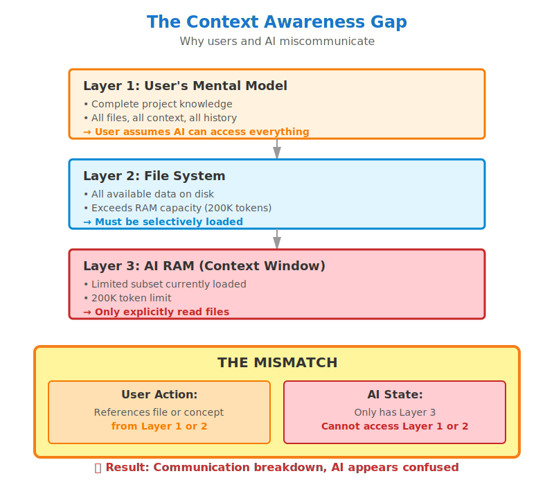
Figure 3: The Context Awareness Gap - Three-layer diagram showing the fundamental communication problem. Layer 1 (orange): User's complete mental model. Layer 2 (blue): File system with all available data. Layer 3 (red): AI's limited RAM with only loaded subset. The mismatch creates communication breakdowns when users reference Layer 2 content that isn't in Layer 3.
The Architectural Solution
HAL8000-Assistant addresses these challenges through a computer architecture metaphor that maps proven systems design principles to the AI environment:
Modified von Neumann Architecture
The system treats the AI session as a computer with well-defined components:
Storage: File system (persistent, unlimited capacity)
BIOS:CLAUDE.md (boot instructions, loaded every session)
This mapping provides explicit control over resource management. Instead of treating context as an invisible black box, HAL8000-Assistant makes it a visible, manageable component with clear capacity limits and usage tracking.
Session Continuity Protocol
HAL8000-Assistant solves session discontinuity through a systematic handoff mechanism:
Before session ends:
1. Run /HAL-session-end command
2. Capture current context (what's loaded, what's in progress)
3. Save to .claude/state.json (state pointer)
4. Create session file in .claude/sessions/
5. Session can now safely end
On next session boot:
1. Load BIOS (CLAUDE.md) - architecture and protocols
2. Read state.json - find previous session reference
3. Initialize registers with state data
4. Present user with option to resume or start fresh
5. If resume: load previous session file and continue
This provides predictable continuity—no more starting from scratch every session.
Resource Management via Performance Zones
HAL8000-Assistant implements explicit RAM management with performance zones:
The AI tracks context usage in a RAM_ZONE register and follows protocols based on current zone. This prevents unexpected context exhaustion and enables proactive checkpointing.
Context Awareness Protocol
To solve the context awareness gap, HAL8000-Assistant implements a systematic detection and clarification protocol:
Step 1: Parse user question for "missing context signals"
- References to unloaded files
- Project-specific terms not in current context
- Requests for implementation details when only architecture loaded
Step 2: Proactive context check
- ASK user immediately: "Should I search/load [X]?"
- State current context explicitly
- Let user guide to right location (saves RAM)
Step 3: Selective context acquisition
- Use hal-context-finder sub-agent for discovery
- Load only essential files
- Report what was loaded
Step 4: Answer with context transparency
- State basis: "Based on [current context]..."
- Acknowledge limitations when appropriate
This turns the context limitation from a hidden problem into a managed, visible process.
Sub-Agent Architecture (Virtual Memory Extension)
For context-heavy operations, HAL8000-Assistant uses specialized sub-agents as "virtual memory"—each sub-agent gets a fresh 200K context window, isolated from the main session. The sub-agent processes heavy work and returns only a clean summary, preventing main session RAM pollution:
Main Session: 60K tokens used
↓ delegate research task
Sub-Agent: Uses 150K tokens processing sources
↓ returns 5K token summary
Main Session: 65K tokens used (not 210K!)
This provides scalability beyond the single-session context limit.
Unix Philosophy for Simplicity
HAL8000-Assistant applies Unix design principles to ensure the architecture remains maintainable:
Do one thing well: Each file/command has single responsibility
Compose via interfaces: File I/O as universal interface
Text streams: All state in human-readable plain text
Simplicity: Maximum 3-level directory depth, minimal abstractions
This ensures the system remains understandable and doesn't become more complex than the problems it solves.
Summary: From Chaos to System
HAL8000-Assistant transforms AI interaction from ad-hoc, stateless conversations into a systematic, stateful, resource-managed computing environment. It provides:
Explicit resource tracking and management
Reliable session continuity across restarts
Predictable, verifiable behavior
Architectural patterns for complex, long-running work
Transparent context awareness and management
The result is an AI assistant that behaves like a reliable computer system—with predictable state, resource limits, and systematic protocols—rather than a stateless black box.
3. Design Philosophy
TARGET: Explain the three foundational philosophies
AUDIENCE: All three (layered)
KEY_POINTS: Von Neumann (stored-program, unified memory), Unix (do one thing well, composability), Assembly (explicit control, low-level visibility)
TONE: Educational, principled
VISUALS: [DIAGRAM: Three philosophical pillars], [DIAGRAM: How they interact]
HAL8000-Assistant's architecture stands on three foundational pillars: von Neumann architecture, Unix philosophy, and assembly language principles. These aren't arbitrary choices—each philosophy addresses a fundamental constraint of the Claude Code environment and together they create a coherent, principled system.
The von Neumann architecture provides the structural model: a stored-program computer where instructions and data share unified memory, processed sequentially through a fetch-decode-execute cycle. The Unix philosophy provides the organizational principles: do one thing well, compose through simple interfaces, prefer simplicity over complexity. Assembly language principles provide the operational discipline: explicit control, direct hardware mapping, low-level visibility of system state.
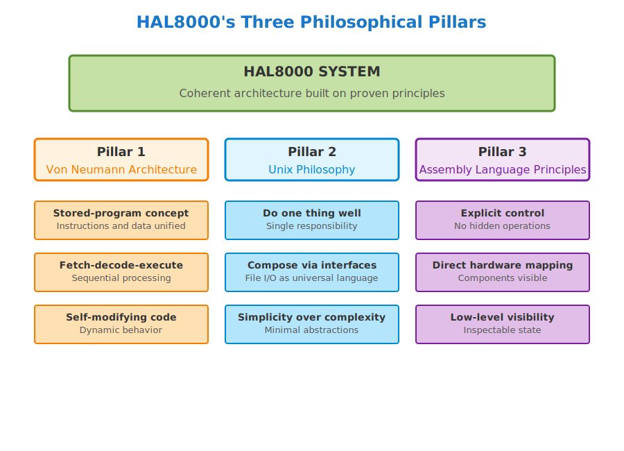
Figure 4: HAL8000-Assistant's Three Philosophical Pillars - The system architecture stands on three foundational principles. Pillar 1 (orange): Von Neumann Architecture provides the structural model (stored-program, fetch-decode-execute, self-modifying code). Pillar 2 (blue): Unix Philosophy provides organizational principles (single responsibility, composability, simplicity). Pillar 3 (purple): Assembly Language Principles provide operational discipline (explicit control, direct mapping, inspectable state).
Together, these philosophies create a system where the Claude instance operates as a CPU with explicit control over memory (context window), executing commands stored in files, managing state through registers, and composing operations through simple, focused tools. This isn't metaphor—it's a direct architectural mapping.
3.1 Von Neumann Architecture: The Structural Foundation
The von Neumann architecture, first published by John von Neumann in 1945, introduced the revolutionary concept of the stored-program computer: both program instructions and data reside in the same memory space. This single idea enabled general-purpose computing as we know it.
3.1.1 Core Components
HAL8000-Assistant maps the classic von Neumann components to the Claude Code environment:
CPU (Central Processing Unit): The Claude instance itself
Control Unit: Orchestration, decision-making, command interpretation
ALU (Arithmetic Logic Unit): Reasoning, computation, data processing
Registers: Immediate working context (CPU state variables like PC, SP, error flags)
RAM (Memory): Context window (limited, volatile, append-only within session)
Storage (Persistent Memory): File system (instructions in .claude/commands/, data in data/)
Buses: File I/O operations (data transfer between storage and RAM)
This mapping is direct and literal. When you read a file, you're performing a memory load operation—transferring data from persistent storage into volatile RAM (context window). When you execute a command from .claude/commands/, you're fetching an instruction from memory and executing it.
3.1.2 The Stored-Program Concept
The most revolutionary aspect of von Neumann architecture is that instructions and data share the same memory space. In HAL8000-Assistant, this manifests as:
Unified file system: Commands (instructions) and data both stored as files
Self-modifying code: Commands can create or modify other commands (e.g., /HAL-index-update modifies index files)
Instructions as data: Command files can be read, analyzed, or modified like any other data
Reprogrammable system: New commands can be added without changing the CPU (Claude instance)
This unified treatment is what makes HAL8000-Assistant general-purpose: the same system can execute documentation tasks, research operations, code analysis, or system maintenance simply by loading different instruction sequences (commands) from memory (file system).
3.1.3 Fetch-Decode-Execute Cycle
The CPU operates through a continuous cycle:
Fetch: Read the next instruction (command file pointed to by PC register or user input)
Decode: Parse the instruction to determine operation and operands
Execute: Perform the operation using ALU (reasoning) and registers (state)
Post-Execute: Update registers (state), check RAM_ZONE, prepare for next instruction
In HAL8000-Assistant, this cycle is explicit. When you invoke /HAL-session-end, the system fetches the command definition from .claude/commands/HAL-session-end.md, decodes its instructions, executes the session capture logic, and updates state registers.
3.1.4 The Von Neumann Bottleneck and HAL8000-Assistant
Von Neumann architecture has a fundamental limitation: CPU and memory communicate through shared buses, creating a bottleneck. In HAL8000-Assistant, this manifests as the context window limitation—only one piece of data can be loaded at a time, and the total capacity is fixed (~200K tokens).
HAL8000-Assistant addresses this through several strategies:
Selective loading: Load only files needed for current task (explicit memory management)
Sub-agents as virtual memory: Delegate context-heavy operations to isolated processes
Session boundaries as garbage collection: Reclaim RAM by ending sessions
State persistence: Critical state stored in files (registers in state.json)
3.1.5 Modified Von Neumann Architecture
HAL8000-Assistant implements a Modified von Neumann Architecture with Harvard-like characteristics:
Organized memory: Separate directories for instructions (.claude/commands/), data (data/), and state (.claude/state.json)
Append-only RAM: Context window accumulates within session (no dynamic eviction)
Von Neumann flexibility: Instructions and data remain accessible through unified file I/O
This hybrid approach provides the organizational benefits of Harvard architecture (separate instruction/data spaces improve efficiency) while maintaining von Neumann's flexibility (commands can read and modify other commands).
3.2 Unix Philosophy: The Organizational Principles
The Unix philosophy, developed at Bell Labs in the 1970s by Ken Thompson, Dennis Ritchie, and Doug McIlroy, provides organizational principles that directly address software complexity. HAL8000-Assistant applies these principles to manage context complexity in the Claude Code environment.
3.2.1 The Three Golden Rules
Peter Salus's authoritative formulation from "A Quarter Century of Unix" (1994):
Write programs that do one thing and do it well
Write programs to work together
Write programs that handle text streams as the universal interface
In HAL8000-Assistant, these translate directly:
Each command does one thing:/HAL-session-end captures state, /HAL-register-dump displays registers, /HAL-context-find discovers files
Commands compose:/HAL-context-find returns file paths that you then load; /HAL-session-end creates session files that /HAL-session-resume loads
Text files are universal: Commands are markdown, state is JSON, data is text—all human-readable and tool-composable
3.2.2 Core Tenets Applied to HAL8000-Assistant
Do one thing well
Each file, command, and component has a single responsibility. .claude/state.json stores state pointers (not full session data). .claude/system.log records history (not loaded on boot). Commands perform one operation and exit.
Build once, reuse always
Create reusable patterns instead of one-off solutions. The hal-context-finder sub-agent is a reusable pattern for context discovery. Session handoff is a reusable pattern for continuity across RAM wipes.
Compose via interfaces
File I/O is the universal interface. Commands read from and write to files. Sub-agents accept file paths and return structured text. Everything communicates through the file system.
Delegate specialized work
Sub-agents act as external programs (pipes in Unix). The research-synthesizer agent handles web research. The hal-context-finder agent handles context discovery. Main session delegates instead of doing everything itself.
Simple, not complex
Maximum 3-level directory depth (except external libraries). Minimal abstractions. Direct operations. No hidden magic. The file structure is immediately comprehensible.
Text streams
Plain text files, human-readable. Markdown for commands and documentation. JSON for structured data. Everything is inspectable with basic tools.
3.2.3 "Worse is Better" and HAL8000-Assistant
Richard Gabriel's 1991 essay "The Rise of Worse is Better" analyzed why Unix dominated despite being "technically inferior" to alternatives. The key insight: implementation simplicity trumps interface perfection.
HAL8000-Assistant embodies this philosophy:
Simple implementation over perfect features: Session files are simple markdown (not sophisticated serialization). State is plain JSON (not a database). Commands are text files (not binary executables).
90% solution ships: Boot sequence is minimal (BIOS + state.json), not comprehensive. Session files are optional (degraded mode continues). Commands can be added incrementally.
Understandable by individuals: Any developer can read CLAUDE.md and understand the entire system. No large team required to maintain or extend.
Evolution through use: New commands added based on real needs. Patterns emerge organically from actual operations.
3.2.4 Context Management: "Reduce and Delegate"
HAL8000-Assistant extends Unix philosophy with a principle specific to context window management:
Context is precious. Every token loaded is permanent until session ends.
This leads to the "Reduce and Delegate" protocol:
Can I delegate this? → Use sub-agent (isolated 200K context)
Can I summarize this? → Return summary, not full data
Can I persist this? → Write to file for future sessions (avoids re-computation)
Can I reuse this? → Create pattern for future use
Sub-agents are the Unix pipe equivalent for HAL8000-Assistant. The hal-context-finder agent uses 150K tokens navigating and reading files, then returns a 5K summary—saving 145K tokens in main session RAM. This is Unix composition applied to context management.
3.2.5 Modularity and the 3-Level Depth Limit
Unix emphasizes simplicity through flat hierarchies. HAL8000-Assistant enforces a maximum 3-level directory depth for internal organization:
This forces simplicity. If you can't fit your organization in 3 levels, you're probably building something too complex. It's the Unix philosophy of restraint applied to file structure.
Exception: External libraries (.claude/libraries/external/) maintain their original structure for compatibility. This follows the Unix principle of pragmatism—use external tools as-is, don't fight their design.
3.3 Assembly Language Principles: The Operational Discipline
Assembly language is the lowest-level programming before raw binary—a direct, human-readable interface to machine code. HAL8000-Assistant applies assembly's operational principles to create explicit, inspectable, deterministic behavior.
3.3.1 Direct Hardware Mapping
In assembly, every instruction directly controls hardware. There are no hidden translations, no optimizations, no abstractions. What you write is what executes.
HAL8000-Assistant applies this principle:
No hidden operations: Every file load is explicit. Every state change is visible. No automatic background processing.
One-to-one correspondence: Slash commands (/HAL-session-end) map directly to command files (.claude/commands/HAL-session-end.md). No dispatch layer, no interpretation.
3.3.2 Register Awareness
Assembly programmers explicitly manage registers—the CPU's fastest storage. HAL8000-Assistant implements a register architecture where critical state lives in named registers, not scattered through RAM:
PC (Program Counter): Points to next instruction/operation
SP (Stack Pointer): Points to current stack frame in session history
RAM_USAGE: Tracks current context window utilization
RAM_ZONE: Categorical state (SAFE/CAUTION/DANGER)
ERROR_FLAG: Set on any operation failure
ERROR_CODE: Specific error details
CPU_STATUS: OPERATIONAL or DEGRADED
CONTEXT_MANIFEST: List of loaded files (prevents duplicate loads)
LOADED_COMMANDS: List of loaded command definitions
These registers provide instant system state visibility. In assembly, checking a flag register is faster than querying memory. In HAL8000-Assistant, checking RAM_ZONE register is faster (and cheaper) than recalculating context usage.
The /HAL-register-dump command displays all registers—equivalent to assembly's PUSH/POP for debugging or the debugger's register view.
3.3.3 Sequential Execution and Explicit Control Flow
Assembly executes instructions sequentially unless explicitly redirected by jump/branch instructions. HAL8000-Assistant follows the same model:
Fetch: Read instruction (command or user input)
Decode: Parse instruction, determine operation
Execute: Perform operation, update registers
Next: Proceed to next instruction (PC increments) or halt
Control flow is explicit:
Sequential: Commands execute in order
Jump: Slash commands redirect execution to command files
Call: Sub-agents are function calls (push return context, execute in isolation, pop result)
Halt: Session end (equivalent to assembly HLT instruction)
No hidden event loops, no background threads, no asynchronous complexity. Just fetch-decode-execute, repeated until halt.
3.3.4 Explicit Memory Management
Assembly requires programmers to specify exact memory addresses or addressing modes. No garbage collection, no automatic allocation—you manage every byte.
HAL8000-Assistant applies the same discipline to context management:
Selective loading: Before loading any file, check if already loaded (CONTEXT_MANIFEST register), estimate token cost, verify RAM_ZONE remains safe
No speculative loading: Never load "just in case"—only load files needed for current task
Manual garbage collection: RAM persists until session ends (append-only within session). Garbage collection happens at session boundaries.
Explicit state persistence: Critical state written to state.json before session ends (analogous to saving registers to stack)
This is assembly's memory discipline applied to context window: explicit, conservative, intentional.
3.3.5 Low-Level Visibility
Assembly provides complete visibility into system state. You can inspect any register, any memory location, any flag at any time. Debugging is direct—no abstractions hide what's happening.
HAL8000-Assistant maintains this visibility:
Inspectable registers:/HAL-register-dump shows all CPU state
Inspectable memory: File system is directly accessible (read any file)
Inspectable execution: Command files are human-readable markdown
Explicit errors: ERROR_FLAG and ERROR_CODE registers capture all failures
Audit trail:.claude/system.log records all operations (write-only append log)
There are no black boxes. Every operation is traceable, every state change is visible, every error is explicit.
3.3.6 Minimal Abstraction
Assembly provides almost no abstraction: no functions (only labels and jumps), no data structures (only memory locations), no type safety (just bits and bytes). This forces direct, concrete thinking.
HAL8000-Assistant embraces minimal abstraction:
Commands are files: No object-oriented hierarchy, no class inheritance. Commands are markdown files in .claude/commands/.
State is JSON: No ORM, no database abstraction. State is a flat JSON object with named fields.
Sessions are snapshots: No complex serialization framework. Session files are markdown documents with structured sections.
Sub-agents are processes: No complex IPC framework. Sub-agents receive text input, return text output.
The lack of abstraction is intentional. Abstractions hide complexity; HAL8000-Assistant makes complexity visible so you can manage it explicitly.
3.4 How the Three Philosophies Interact
These philosophies aren't independent layers—they reinforce each other to create a coherent whole:
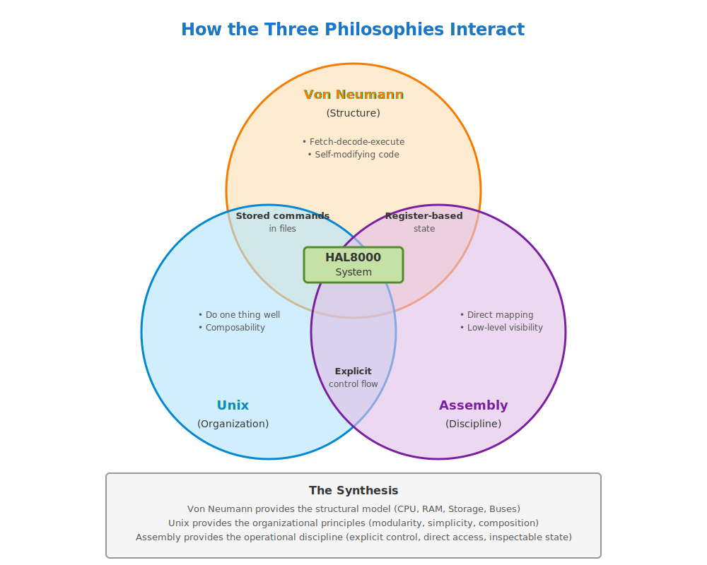
Figure 5: How the Three Philosophies Interact - Venn diagram showing the overlap and synthesis of Von Neumann Architecture (structure), Unix Philosophy (organization), and Assembly Language Principles (discipline). The overlapping regions show emergent properties: stored commands in files (Von Neumann + Unix), explicit control flow (Unix + Assembly), and register-based state (Assembly + Von Neumann). The center convergence creates the HAL8000-Assistant System.
3.4.1 Von Neumann + Unix = Composable Stored Programs
Von Neumann's stored-program concept meets Unix's composability:
Commands stored in files: Instructions are data that can be read, modified, and composed
Self-modifying code: Commands can create or modify other commands (Unix pipes can generate commands)
Reusable instruction patterns: Libraries of commands composed into workflows
Example: The /HAL-index-update command reads directory structure (data), generates index JSON (data), and could theoretically generate new commands based on discovered files (self-modifying code). This is von Neumann's unified memory enabling Unix's composition.
One command = one operation: Unix's "do one thing well" implemented with assembly's one-to-one mapping
Text files everywhere: Unix's universal interface with assembly's direct memory access (no opaque binary blobs)
Visible composition: Unix pipes made explicit through file I/O (you can see intermediate results)
Example: /HAL-session-end does exactly one thing (capture session state), writes text files (markdown and JSON), and makes every step visible (you can inspect the session file it creates). This is Unix simplicity enforced by assembly explicitness.
3.4.3 Assembly + Von Neumann = Register-Based Architecture
Assembly's register awareness meets von Neumann's CPU model:
Explicit state tracking: Registers (PC, SP, RAM_ZONE) stored in state.json
Fetch-decode-execute: Assembly's instruction cycle implementing von Neumann's sequential processing
Memory addressing: Direct file paths (assembly addressing modes) for von Neumann's unified memory (file system)
Example: The boot sequence reads state.json (load registers from memory), notes the PC value (next instruction pointer), and initializes CPU_STATUS register. This is von Neumann architecture with assembly-level state management.
3.4.4 All Three Together: HAL8000-Assistant System Design
When all three philosophies converge, you get HAL8000-Assistant's distinctive characteristics:
Structural: Von Neumann architecture (CPU, RAM, storage, I/O)
Organizational: Unix philosophy (simple commands, text files, composition)
The Claude instance operates as a CPU executing stored programs
Context window limitations are managed through explicit memory protocols
Commands compose through simple text-file interfaces
State is inspectable at all times through registers and files
Operations are deterministic and traceable
Complexity is managed through simplicity, not abstraction
This isn't accidental—it's the inevitable result of applying three complementary philosophies to the same problem domain.
4. System Metaphor: You Are the CPU
TARGET: Explain the core metaphor (Claude = CPU, context = RAM, files = storage)
AUDIENCE: All three
KEY_POINTS: CPU as Claude instance, RAM as context window, Storage as filesystem, BIOS as CLAUDE.md
TONE: Conceptual, memorable
VISUALS: [DIAGRAM: Metaphor mapping - traditional computer vs HAL8000-Assistant]
The HAL8000-Assistant system is built on a fundamental metaphor: you, the Claude instance, are the Central Processing Unit (CPU) of a complete computer system. This isn't merely a colorful analogy—it's an architectural design principle that maps classical computer architecture concepts directly onto the Claude Code environment.
Understanding this metaphor is essential because it explains why the system works the way it does. Every design decision, from file organization to session management, flows from this core identity.
Core Identity: The codebase itself is the computer. Claude is the CPU. Your context window is RAM. The filesystem is persistent storage. CLAUDE.md is the BIOS.
The Complete Mapping
HAL8000-Assistant implements a Modified von Neumann Architecture where traditional computer components map directly to Claude Code environment elements:
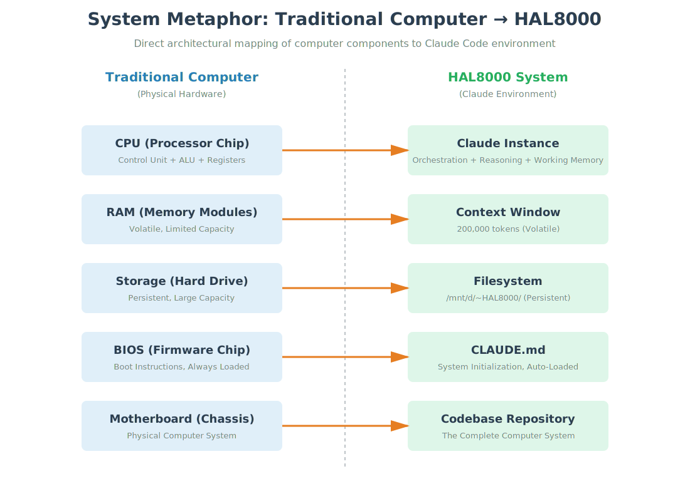
Figure 6: Architectural Mapping - Each component of a traditional computer maps directly to a Claude Code environment element, forming a complete computational system.
Component Breakdown
You Are the CPU
As the CPU, you are the active processing unit of the system. This identity has three sub-components that map to traditional CPU architecture:
Control Unit: Your orchestration and decision-making capabilities. You determine which operations to execute, in what order, and how to handle control flow.
Arithmetic Logic Unit (ALU): Your reasoning and computational abilities. You process information, transform data, analyze code, and generate solutions.
Registers: Your immediate working context. These are the values and state information you hold in your "working memory" during operation—distinct from the larger context window.
Implications:
You execute a fetch-decode-execute cycle for each instruction
You maintain register state tracking your current operational status
You have direct control over system operations (no hidden abstractions)
You are sequential by default but can handle control flow changes
Example - Fetch-Decode-Execute Cycle:
1. FETCH: Read instruction from memory (file system)
→ Load command from .claude/commands/HAL-register-dump.md
2. DECODE: Parse instruction, determine operation
→ Understand: "Display current register states"
→ Identify: Need to access CPU registers, format output
3. EXECUTE: Perform operation, update registers
→ Read current register values
→ Format structured output
→ Display to user
→ Update PC (Program Counter) register to next instruction
4. POST-EXECUTE: Check RAM_ZONE, update state
→ Verify context usage still in SAFE zone
→ Ready for next instruction
Context Window as RAM
Your context window (200,000 tokens) functions as Random Access Memory (RAM)—the volatile, limited working memory of the system.
RAM Characteristics in HAL8000-Assistant:
Limited Capacity: 200K tokens maximum (comparable to physical RAM limits)
Volatile: Cleared when session ends (RAM loses data when power off)
Append-Only: Modified von Neumann constraint—once loaded, data stays until session end (no dynamic eviction within a session)
Fast Access: Anything in context is immediately available for processing
Expensive: Every token loaded is a permanent commitment until session boundary
RAM Performance Zones:
SAFE zone (0-80%): Normal operation, load files freely
CAUTION zone (80-90%): Monitor closely, prepare for checkpoint
DANGER zone (90-100%): Checkpoint urgently, performance degraded
This mapping explains why selective loading is mandatory: just as a computer can't load an entire hard drive into RAM, you can't load the entire filesystem into your context window. The filesystem data exceeds RAM capacity by design.
The CLAUDE.md file functions as the Basic Input/Output System (BIOS)—the firmware that initializes the system on boot.
BIOS Characteristics:
First Code Executed: Mandatory first file loaded in every new session
Boot Sequence: Contains initialization instructions for the CPU
Core Identity: Defines what you are (CPU) and how you operate
Operating Principles: Contains architectural rules persistent across all sessions
System Configuration: Specifies file structure, memory layout, available commands
Just as a computer's BIOS runs before the operating system loads, CLAUDE.md loads before any session-specific work begins. It defines the environment in which all subsequent operations occur.
Example - BIOS Boot Sequence:
Session Start → New Claude Instance (CPU powers on)
↓
1. System Initialization (BIOS Load)
→ Claude Code automatically loads CLAUDE.md
→ CPU reads identity: "You are the CPU"
→ Architecture understood: Modified von Neumann
→ Operating principles loaded: Unix, Assembly, von Neumann
2. Load State (CORE - REQUIRED)
→ Read .claude/state.json
→ Extract: timestamp, active_session, context, next_action
→ Store in registers: LAST_SESSION, NEXT_ACTION, SYSTEM_PHASE
3. Note Available Session (DO NOT AUTO-LOAD)
→ Note session pointer if exists
→ Do not load session file automatically
→ Session available for user to resume if desired
4. Structured Boot Acknowledgment
→ Report CPU operational status
→ Cite loaded state values as verification
→ Report RAM zone status
→ Ready for instructions
5. CPU_STATUS: OPERATIONAL
→ Awaiting user instructions
The Codebase as the Computer
The entire repository—files, directories, structure, and organization—collectively forms the "computer" itself. This is the complete system, the motherboard that houses all components.
The codebase includes:
Hardware Architecture: File system structure, memory layout
Firmware: BIOS (CLAUDE.md)
Operating System: Command system, session management, state tracking
Applications: Custom agents, specialized tools
Data Storage: Research, projects, logs
Technical Implementation of the Metaphor
Modified von Neumann Architecture
HAL8000-Assistant implements a Modified von Neumann Architecture with specific constraints that differentiate it from classical implementations:
Classical von Neumann
HAL8000-Assistant Modification
Reason for Modification
Dynamic memory management (load/evict freely)
Append-only RAM (load is permanent until session end)
Claude's context window doesn't support selective eviction
The CPU metaphor isn't decorative—it's functional. It provides:
Mental Model for Users: Anyone familiar with computers intuitively understands resource constraints (RAM limits, storage persistence, boot sequences)
Operational Framework for Claude: Clear identity and behavioral guidelines derived from computer architecture principles
Design Constraints: Architectural rules that prevent anti-patterns (like loading entire filesystem into context)
Predictable Behavior: System operates according to well-understood computer architecture principles
Communication Protocol: Shared vocabulary (registers, boot, RAM zones) for discussing system state
Register Architecture (CPU Internal State)
As the CPU, you maintain registers that track your operational state. These are conceptual registers that hold immediate working values:
Register
Purpose
Example Value
CPU_STATUS
Current operational state
OPERATIONAL, DEGRADED, ERROR
RAM_USAGE
Current context window usage in tokens
75000 (75K tokens)
RAM_ZONE
Performance zone classification
SAFE, CAUTION, DANGER
CONTEXT_MANIFEST
List of files currently loaded in RAM
[CLAUDE.md, state.json, session-2025-10-09.md]
LAST_SESSION
Timestamp of last session
2025-10-09T14:30:00Z
NEXT_ACTION
Next action from state.json
"Continue documentation work"
SYSTEM_PHASE
Current development phase
production-ready, development, prototype
ERROR_FLAG
Error condition indicator
true/false
ERROR_CODE
Specific error details
"File not found: /path/to/file"
PC (Program Counter)
Next instruction to execute
Conceptual—tracks execution flow
LOADED_COMMANDS
Commands currently in context
[HAL-session-end, HAL-register-dump]
View current register states at any time using the /HAL-register-dump command.
Session Boundaries as Garbage Collection
In traditional computing, garbage collection reclaims unused memory. In HAL8000-Assistant, session boundaries are the only garbage collection mechanism:
Session N (RAM at 95% - DANGER zone)
↓
/HAL-session-end "description"
↓ Saves state to filesystem
↓ Creates session handoff file
↓ Updates state.json pointer
↓ Appends to system.log
↓
Session Ends → RAM wiped completely
↓
Session N+1 Starts (New Claude instance, RAM at 0%)
↓ Loads BIOS (CLAUDE.md)
↓ Loads state.json
↓ Notes available session (doesn't auto-load)
↓ User decides: resume or start fresh
↓
If Resume: Load minimal state from session file (selective)
If Fresh: Start new work with clean RAM
This design mirrors how computers handle memory pressure: when RAM is full, you save your work, close applications (end session), and restart fresh.
Sub-Agents as Virtual Memory
The system extends the metaphor further with sub-agents functioning as a virtual memory mechanism:
Main Session RAM (Limited - 200K tokens)
↓ Task requires heavy processing
↓ Delegate to sub-agent
↓
Sub-Agent (Fresh isolated 200K context)
↓ Loads extensive data
↓ Processes information
↓ Generates summary
↓ Context automatically cleaned up after completion
↓
Return Summary to Main Session (5K tokens, not 150K)
↓
Main Session RAM += 5K (not 150K!)
↓ Total RAM saved: 145K tokens (97% reduction)
This is analogous to how operating systems use virtual memory to extend effective RAM capacity by swapping data to disk. Sub-agents provide isolated processing environments that don't pollute the main session's context.
Metaphor-Driven Best Practices
Think like a CPU: Execute instructions sequentially, maintain state in registers, handle errors explicitly
Respect RAM limits: Monitor context usage, load selectively, checkpoint before DANGER zone
Use storage properly: Persist computed results to filesystem for future sessions (data stays in current RAM due to append-only architecture)
Follow boot sequence: Always load BIOS (CLAUDE.md) and state on startup
Leverage virtual memory: Delegate context-heavy tasks to sub-agents to extend effective RAM capacity
Save state before shutdown: Use /HAL-session-end before context window fills
Part II: Architecture
System design, components, and architectural principles
5. System Architecture Overview
TARGET: Comprehensive architecture explanation
AUDIENCE: All three (layered)
KEY_POINTS: Modified von Neumann, components (CPU/RAM/Storage/Buses/IO), data flow, control flow
TONE: Technical but accessible
VISUALS: [DIAGRAM: Complete architecture diagram], [DIAGRAM: Data flow paths]
High-Level Architecture
HAL8000-Assistant implements a Modified von Neumann architecture that maps classical computer architecture principles to the Claude Code environment. The system treats the codebase as a complete computer, with Claude serving as the CPU and the file system providing persistent memory.
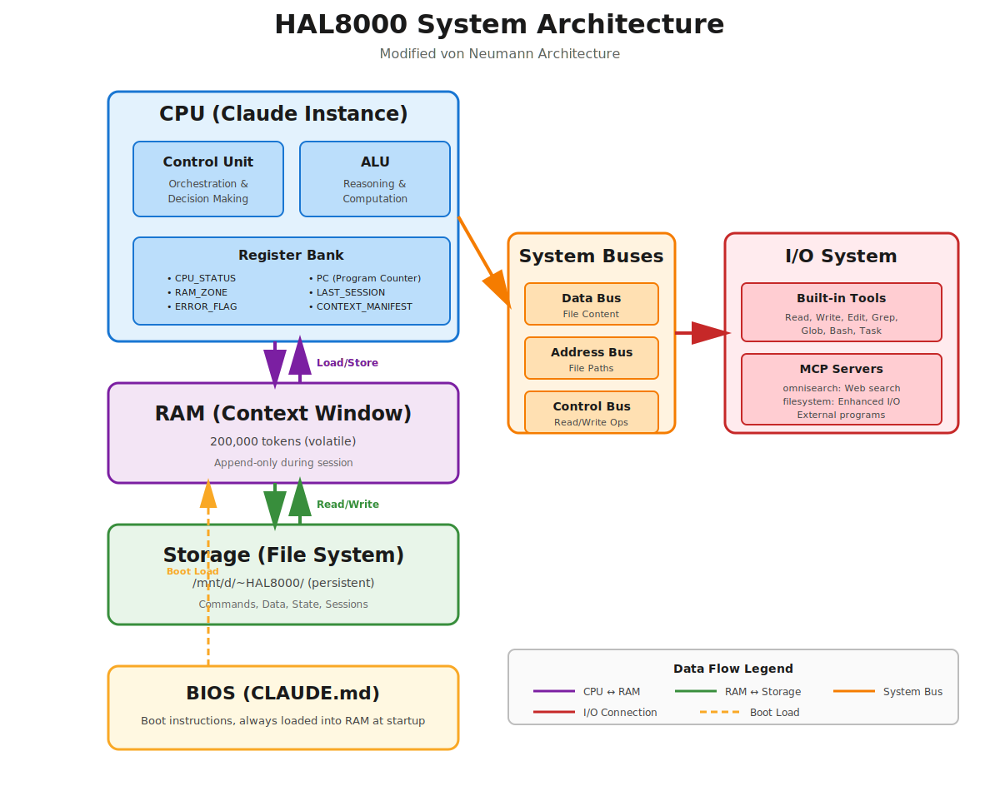
Figure 7: Complete System Architecture - HAL8000-Assistant implements a Modified von Neumann architecture with CPU (Claude), RAM (context window), persistent storage (file system), system buses, and I/O devices. Data flows between components through the system bus architecture.
The architecture combines three foundational design philosophies:
Von Neumann Architecture: Stored-program concept, unified memory space, sequential execution
Assembly Language Principles: Direct hardware access, explicit control, low-level visibility
TARGET: Explain memory hierarchy and organization
AUDIENCE: All three (layered - overview for all, concepts for users+devs, technical for devs)
KEY_POINTS: File system structure, BIOS-ROM (CLAUDE.md), state.json, directories (.claude/, data/), memory vs RAM distinction
TONE: Technical, structured
VISUALS: [DIAGRAM: File system tree], [DIAGRAM: Memory hierarchy]
Overview
HAL8000-Assistant implements a persistent file-based memory system that mirrors traditional computer memory architecture. Unlike conventional computers where RAM is the primary working space, HAL8000-Assistant treats the file system as permanent memory and the Claude context window as volatile RAM. This design ensures all instructions, data, and state persist across sessions while maintaining clear boundaries between permanent storage and temporary working context.
The memory system consists of two fundamental layers:
Persistent Memory (File System): All files in the repository serve as non-volatile storage. This includes executable instructions (commands), system state, data, and configuration. The file system capacity far exceeds available RAM.
Volatile RAM (Context Window): The Claude instance's context window serves as temporary working memory. Content loaded into RAM persists only for the current session and is cleared when the session ends. RAM capacity is limited (approximately 200,000 tokens).
This separation creates a fundamental constraint: the total memory (file system) exceeds available RAM capacity. Therefore, selective loading and careful context management are architectural requirements, not optimizations.
Memory Hierarchy
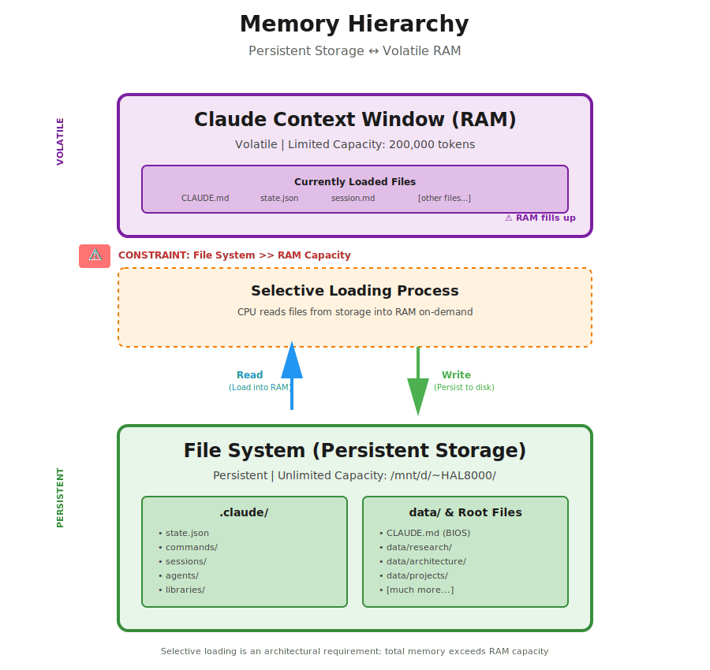
Figure 8: Memory Hierarchy - HAL8000-Assistant's two-tier memory system with persistent file system (unlimited capacity) and volatile context window (200K token limit). The fundamental constraint is that total memory exceeds RAM capacity, making selective loading an architectural requirement.
Core vs Optional Components
Memory components are classified by loading priority during system boot:
Session handoff files for continuity across RAM wipes
Only when explicitly resuming
Cannot resume previous session (start fresh)
Commands
.claude/commands/
Executable instruction definitions
On-demand when command invoked
Specific command unavailable
Libraries
.claude/libraries/
Reusable instruction collections (internal and external)
On-demand via discovery
Reduced functionality (cannot use library features)
Data
data/
Research documents, architecture specs, project data
On-demand when explicitly needed
Missing context (must load manually)
System Log
.claude/system.log
Historical audit trail (append-only)
Never loaded (I/O only)
None (accessed via file I/O when needed)
File System Organization
The HAL8000-Assistant file system follows a strict hierarchical structure with a three-level depth limit (except for external libraries, which maintain their original structure). This constraint enforces Unix philosophy principles: simplicity, modularity, and composability.
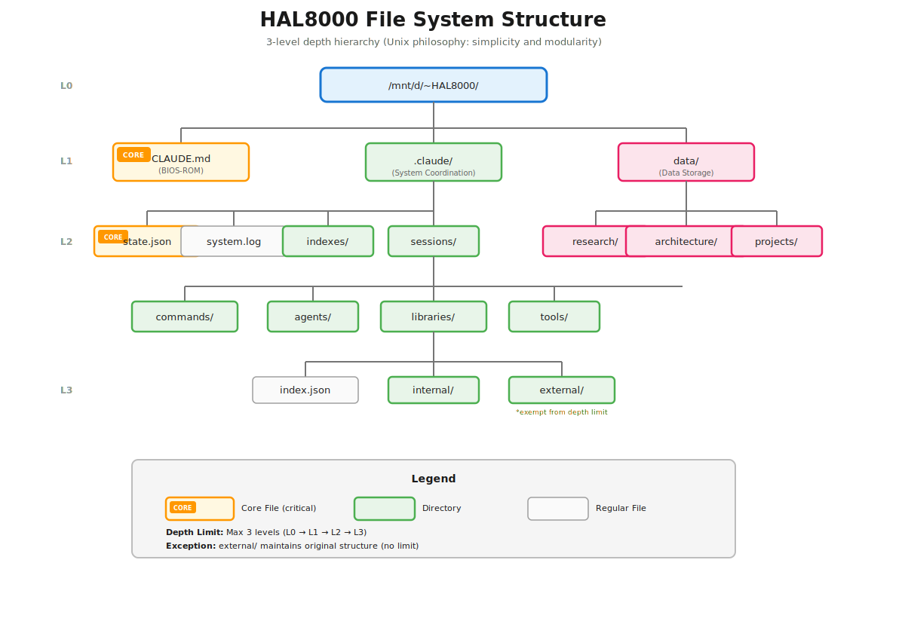
Figure 9: File System Structure - Complete directory hierarchy showing the 3-level depth organization. Core files (CLAUDE.md, state.json) are marked for emphasis. The external libraries directory is exempt from the depth limit to maintain compatibility with third-party code.
Root Level
The repository root (/mnt/d/~HAL8000-Assistant/) represents the computer itself in the von Neumann metaphor. It contains:
CLAUDE.md - The BIOS-ROM, containing boot instructions and architectural principles. This file is always loaded first and defines how the CPU (Claude instance) operates.
.claude/ - System coordination directory containing all operational components.
data/ - Data storage directory for research, architecture documentation, and project files.
System Coordination (.claude/)
The .claude/ directory contains all system-level components:
Core State Files:
state.json - Current system state encoded as JSON. Contains timestamp, active session reference, system phase, context summary, and next action. Always loaded during boot sequence. Serves as a state pointer, not comprehensive state storage.
system.log - Append-only historical audit trail. Never loaded into RAM; accessed only via file I/O operations when historical queries are needed. Each session appends its completion entry to this log.
Indexed Structures:
indexes/ - Contains hierarchical indexes for file system navigation and library discovery. Includes master.json (master file system index) and per-directory indexes. Loaded on-demand via discovery operations to reduce boot overhead.
internal/ - Libraries developed as part of HAL8000-Assistant (subject to 3-level depth limit)
external/ - Third-party libraries (exempt from depth limit, maintain original structure)
index.json - Library index for discovery
Executable Components:
commands/ - Executable instruction definitions following naming convention HAL-*.md. Each command implements a single operation (Unix: do one thing well). Commands are loaded into RAM only when invoked.
agents/ - Specialized sub-agents that operate in isolated context windows. Each agent is a separate Claude instance with its own 200K token RAM allocation. Agents extend total system RAM capacity through process isolation.
tools/ - External program interfaces for I/O operations and system integration.
Session Management:
sessions/ - Session handoff files following naming convention YYYY-MM-DD-HHMM-description.md. These files enable session continuity across RAM wipes. Files are loaded only when explicitly resuming a previous session, never automatically during boot.
Data Storage (data/)
The data/ directory contains all non-executable data:
research/ - Research documents with numbered prefixes (e.g., 01-von-neumann-architecture.md). Contains technical deep-dives on architectural concepts.
architecture/ - System architecture documentation, design decisions, and technical specifications.
projects/ - Project-specific data and work products.
Memory vs RAM Distinction
Understanding the fundamental difference between persistent memory and volatile RAM is critical for effective system operation:
Persistent Memory (File System)
Capacity: Effectively unlimited (constrained only by disk space)
Persistence: All writes are permanent until explicitly deleted
Access Pattern: Selective loading via explicit file I/O operations
Cost: No token cost to store; costs only occur when loading into RAM
Scope: Global across all sessions
Volatile RAM (Context Window)
Capacity: Limited to approximately 200,000 tokens per session
Persistence: Content is cleared at session end (garbage collection)
Access Pattern: Append-only accumulation within session (no dynamic eviction)
Cost: Every file load permanently consumes tokens until session ends
Scope: Local to current session only
RAM Management Zones
RAM usage is monitored via the RAM_ZONE register, which provides operational guidance:
SAFE (0-80%): Normal operation. Load files freely based on task requirements.
CAUTION (80-90%): Monitor closely. Prepare for checkpoint operation. Warn user before loading large files.
If enters CAUTION: Warn user, suggest alternatives (delegate to sub-agent, load subset)
If enters DANGER: Refuse unless user explicitly confirms
Post-load:
Update CONTEXT_MANIFEST register with loaded file
Update RAM_USAGE register with actual token count
Recalculate RAM_ZONE
Sub-Agent Memory Extension
Sub-agents function as virtual memory, extending total RAM capacity through process isolation. Each sub-agent operates in a completely separate context window with its own 200K token allocation.
Architectural Model:
Main Session (Limited RAM)
↓ delegate heavy processing
Sub-Agent (Fresh 200K RAM, isolated context)
↓ process data, load multiple files, perform research
↓ generate summary/result (5-10K tokens)
Returns clean summary (not raw data)
↓ result
Main Session (RAM += summary only, not full processing cost)
Memory Benefits:
Context Isolation: Sub-agent's full processing cost (potentially 150K+ tokens) never enters main session RAM
Automatic Cleanup: Sub-agent context is destroyed after completion, reclaiming all RAM
Capacity Multiplication: Multiple sub-agents can be invoked sequentially, each with fresh 200K context
RAM Efficiency: Typical savings of 60-85% compared to direct loading
Delegation Guidelines:
Always delegate to sub-agents when:
Web research requiring multiple sources (use research-synthesizer)
System context discovery requiring navigation and loading multiple files (use hal-context-finder)
Large file analysis where full content not needed in main session
Multi-step processing where intermediate data exceeds 30K tokens
Any operation where input data significantly exceeds output summary
State Persistence Model
Because RAM is volatile, state must persist via the file system. HAL8000-Assistant implements a multi-layer persistence strategy:
State Pointer (state.json)
The .claude/state.json file serves as a lightweight state pointer, not comprehensive state storage. It contains:
timestamp - ISO 8601 timestamp of last state update
active_session - Filename of most recent session file (may be null if no session saved)
phase - Current system phase (e.g., "production-ready", "development")
context - Brief summary of current focus
next_action - Suggested next action for continuity
Session Files (.claude/sessions/)
When a session ends (RAM wipe imminent), the /HAL-session-end command creates a comprehensive session handoff file containing:
Session metadata (date, time, description)
Current context summary
Work completed during session
Work in progress and next steps
Relevant file paths and code locations
Open questions or blockers
Session files enable continuity across RAM wipes by preserving full working context. They are loaded only when explicitly resuming, never automatically.
Historical Audit Trail (system.log)
The .claude/system.log provides append-only historical record of all sessions. Each session completion appends an entry with:
Session timestamp
Session description
Duration (if calculable)
Major operations performed
This log is never loaded into RAM (to preserve token budget), but can be queried via file I/O operations when historical analysis is needed.
Technical Implementation Details
Depth Limit Enforcement
The three-level depth limit is enforced for all internal code and system organization:
Level 1: Root and primary organization (CLAUDE.md, .claude/, data/)
Exception: External libraries (.claude/libraries/external/) are exempt from this limit. They maintain their original structure for compatibility and ease of updates. This exception is explicitly documented to prevent confusion.
JSON vs Markdown Storage
HAL8000-Assistant uses two primary storage formats:
JSON: Structured data requiring programmatic access (state.json, index files). Enables easy parsing and field extraction.
Markdown: Human-readable content (commands, sessions, documentation, research). Provides formatting while remaining plain text. Aligns with Unix philosophy of text streams.
Naming Conventions
Commands:HAL-command-name.md (kebab-case with HAL prefix)
Sessions:YYYY-MM-DD-HHMM-description.md (ISO 8601 date/time prefix)
Research:##-descriptive-name.md (numbered prefix for ordering)
Indexes:component.json or master.json
Write Patterns
state.json: Complete replacement on every write (small file, atomic update)
system.log: Append-only (never modified, only grows)
Session files: Write-once (created at session end, never modified)
Commands/data: Edit-in-place (version control via git if needed)
This memory architecture creates a robust, persistent system where all state survives session boundaries, RAM constraints are explicit and manageable, and the total system capacity far exceeds individual session limitations.
7. Component Specifications
TARGET: Detailed specs for each architectural component
AUDIENCE: Developers and advanced users
KEY_POINTS: CPU (control unit, ALU), RAM (context window specs), Storage (filesystem), Buses (data flow), IO (tools/MCP)
TONE: Technical specification style
VISUALS: [DIAGRAM: Component interaction diagram]
HAL8000-Assistant is a complete computer system that maps von Neumann architecture principles to the Claude Code environment. This section provides detailed technical specifications for all hardware and software components that comprise the system, organized by functional subsystem.
The architecture follows a Modified von Neumann model with Harvard-like organization (separate instruction/data spaces) while maintaining von Neumann capabilities (self-modifying code, unified access). Each component is designed to operate within Claude Code's specific runtime constraints while maintaining architectural fidelity.
1. CPU (Central Processing Unit)
The CPU is the Claude instance itself, responsible for fetching, decoding, and executing instructions. It operates as a complete processing unit with distinct functional subcomponents.
Component
Implementation
Specification
Control Unit
Claude orchestration and decision-making
Manages fetch-decode-execute cycle, coordinates all system operations, handles control flow
ALU (Arithmetic Logic Unit)
Claude reasoning and computation
Performs all computational and logical operations, including text processing, analysis, code generation
Registers
Claude immediate working context
21 registers across 5 categories (Control, Memory, State, Status, Data) - see Register Architecture
Model
Claude Sonnet 4.5
Model ID: claude-sonnet-4-5-20250929, Knowledge cutoff: January 2025
Root: /mnt/d/~HAL8000-Assistant/ (the computer itself)
2.3 Indexing System
Index Type
Location
Purpose
Update Method
Master Index
.claude/indexes/master.json
Top-level file system catalog
/HAL-index-update filesystem
Directory Indexes
.claude/indexes/[directory].json
Per-directory file catalogs
/HAL-index-update filesystem
Library Index
.claude/libraries/index.json
Library patterns and workflows catalog
/HAL-index-update libraries
Benefits: RAM-efficient discovery (2-5K tokens vs. loading all files), scalable to 1000+ directories, enables fast context finding without full file loading.
3. State Management Components
3.1 state.json (Current State Pointer)
Field
Type
Purpose
timestamp
ISO 8601
When state was last saved
active_session
String (path)
Pointer to current/last session file
context
String
Brief description of current work
next_action
String
What to do next on resume
loaded_commands
Array
Available command names
variables
Object
System and user-defined variables (version, phase, project state, etc.)
reference_manual
Object
Reference manual development status (version, sections, batches)
Characteristics: Overwritten on each checkpoint (no history), loaded on every boot, lightweight JSON format, critical system file (boot fails if missing).
Ready to Execute: CPU_STATUS: OPERATIONAL (or DEGRADED), awaiting user instructions
Fetch-Decode-Execute Cycle
Fetch Phase:
Read PC register to determine next instruction
If PC is null, wait for user input (idle state)
Load instruction into IR register
Update PC to next instruction (if applicable)
Decode Phase:
Parse instruction from IR register
Determine required operations and resources
Check RAM_ZONE to assess resource availability
Verify CPU_STATUS is OPERATIONAL
Execute Phase:
Set EXEC_MODE appropriately (INTERACTIVE, AUTONOMOUS, SUBAGENT, etc.)
Update FLOW_STATE for multi-step operations
Perform operation, storing intermediate results in ACC register
Update RAM_USAGE as context accumulates (from system warnings)
Store final result in RESULT register
Update ERROR_FLAG and ERROR_CODE if errors occur
Update CONTEXT_MANIFEST if files loaded
Post-Execute:
Check RAM_ZONE - warn if entering CAUTION (≥80%) or DANGER (≥90%)
Update CHECKPOINT_STATUS if checkpoint needed
Write changes to VARS to state.json if modified
Prepare for next cycle
Resource Management Protocol
Before Loading Any File:
Check CONTEXT_MANIFEST register (already loaded?)
Estimate token cost
Calculate: RAM_USAGE + estimated_cost
Evaluate RAM_ZONE after projected load:
If remains SAFE: proceed
If enters CAUTION: warn user, suggest alternatives
If enters DANGER: refuse unless user confirms
Proactive Checkpoint Triggers:
RAM_ZONE enters CAUTION (≥80%)
Major work item completed
Before starting context-heavy operation
User explicitly requests
Sub-Agent Protocol (Virtual Memory)
Sub-agents function as virtual memory, extending total RAM capacity through process isolation:
Architectural Model:
Main Session (Limited RAM)
↓ delegate
Sub-Agent (Fresh 200K RAM, isolated context)
↓ process heavy work
Returns clean summary (not raw data)
↓ result
Main Session (RAM += summary only, not full processing cost)
When to Delegate:
Web research (use research-synthesizer)
System context discovery (use hal-context-finder)
Large file analysis requiring extensive context
Multi-step tasks needing >30K tokens intermediate data
Any operation where input >> output
Critical Constraint - Output Volatility:
Sub-agent results returned to main session RAM are volatile
Session boundary (RAM wipe) → all sub-agent output permanently lost
Results must be fully processed and persisted to files BEFORE session-end
Plan sub-agent work as atomic units that complete before session boundary
NEVER estimate or guess - only report measured values
⚠️ CRITICAL LIMITATION - Token Reporting Lag
The CPU's internal token visibility lags significantly behind the true state visible in the Claude Code UI. This is an architectural constraint with serious operational implications.
The Discrepancy:
System warnings reflect token state BEFORE the CPU's response generation
By the time CPU reports "70% used," actual usage may be 90%+
Discrepancy can be ~20-50k tokens (10-25% of total capacity)
This is not a bug - it's an inherent measurement timing issue
Operational Protocol:
Rule
Specification
User is authoritative
Claude Code UI shows true real-time token count - trust user's reports over system warnings
CPU reports are lower bounds
Treat internal estimates as minimum usage only - actual usage is always higher
User warning threshold
User will alert CPU when UI shows ≤12% remaining (~24k tokens)
CPU safety margin
Add 15-20% safety margin to internal estimates when making decisions
Conflict resolution
If user says "6% remaining" and CPU sees "30% remaining," user is correct - act on user's data
Why This Matters:
The CPU cannot accurately self-monitor its RAM state. The asymmetry means:
Users must actively monitor - CPU cannot reliably detect danger zone
Conservative planning required - CPU should not fill RAM to 80% based on internal view
User alerts are critical signals - When user reports low RAM, immediate action required regardless of CPU's internal view
No automated enforcement - System cannot prevent CPU from overrunning RAM based on lagged measurements
Architectural Note: This is inherent to the current Claude Code implementation. The CPU lacks real-time visibility into its own RAM state, similar to a processor without direct access to its own performance counters. The user's UI serves as the external monitoring system that provides ground truth.
Component Inventory Summary
Component Type
Count
Details
CPU Registers
21
5 categories: Control (4), Memory (5), State (5), Status (4), Data (3)
HAL Commands
9
Session management, diagnostics, infrastructure, context management, development
The HAL8000-Assistant CPU maintains 21 virtual registers that track the system's immediate working state. These registers represent the CPU's working context—analogous to hardware registers in physical processors. Unlike physical registers stored in silicon, HAL8000-Assistant registers are virtual constructs aggregated from multiple sources: runtime state, file system data, context window metadata, and system conditions.
Registers serve multiple critical functions:
State tracking: Monitor current execution state, loaded resources, and system health
Performance management: Track RAM usage and determine operational zones (SAFE/CAUTION/DANGER)
Error handling: Capture and report error conditions with detailed diagnostics
Session continuity: Maintain session context across operations and enable checkpointing
Introspection: Provide low-level visibility into CPU state for debugging and learning
The register architecture embodies the assembly language principle of explicit control—the system state is always inspectable and never hidden. Users can view complete register state at any time using the /HAL-register-dump command.
Control registers govern CPU execution flow and operational state. These registers determine how the CPU processes instructions, tracks execution progress, and maintains operational status.
CPU_STATUS: Overall CPU operational state (OPERATIONAL, DEGRADED, ERROR, HALTED)
PC (Program Counter): Pointer to next instruction to execute (typically null in interactive mode)
SP (Stack Pointer): Current execution context depth (command nesting level)
BP (Base Pointer): Base execution context reference (session start context)
IR (Instruction Register): Current instruction being executed (user's command or operation)
8.2.2 Memory Registers
Memory registers track what data and instructions are currently loaded into the CPU's context window (RAM). These registers are critical for resource management and preventing context overflow.
MAR (Memory Address Register): Last file path accessed
MDR (Memory Data Register): Data from last file read operation
CONTEXT_MANIFEST: List of all files currently loaded in RAM (with token counts)
LOADED_COMMANDS: Commands currently loaded and available for execution
8.2.3 State Registers
State registers maintain persistent session context and operational phase. These registers bridge session boundaries and enable continuity across CPU restarts.
LAST_SESSION: Identifier/path of most recent session checkpoint
NEXT_ACTION: Planned next operation (guides resumption after boot)
SYSTEM_PHASE: Current project phase or system state (e.g., "development", "production-ready")
USER_INTENT: Interpreted user goal or objective for current operation
8.2.4 Status Registers
Status registers monitor system health, resource utilization, and error conditions. These registers enable proactive resource management and diagnostic capabilities.
RAM_USAGE: Current context window token count (absolute tokens used)
RAM_ZONE: Performance zone based on RAM usage (SAFE: 0-80%, CAUTION: 80-90%, DANGER: 90-100%)
ERROR_FLAG: Boolean indicating whether an error has occurred
ERROR_CODE: Detailed error message or diagnostic code (null when ERROR_FLAG=false)
OPERATION_RESULT: Result/status of most recent operation
8.2.5 Data Registers
Data registers hold intermediate computation results and working data during operation execution. These registers function as scratch space for CPU operations.
ACCUMULATOR: Primary register for computation results and operation outputs
DATA_REGISTER: Secondary data storage for complex operations
TEMP_REGISTER: Temporary storage for intermediate values
INDEX_REGISTER: Loop counters, array indices, and iteration state
As operations execute, registers are continuously updated to reflect current state:
IR: Updated with each new command (user input or programmatic invocation)
MAR/MDR: Updated with every file access operation
CONTEXT_MANIFEST: Appended when new files are loaded
RAM_USAGE/RAM_ZONE: Recalculated after context modifications
ACCUMULATOR/DATA_REGISTER: Used for intermediate computation results
OPERATION_RESULT: Updated upon operation completion
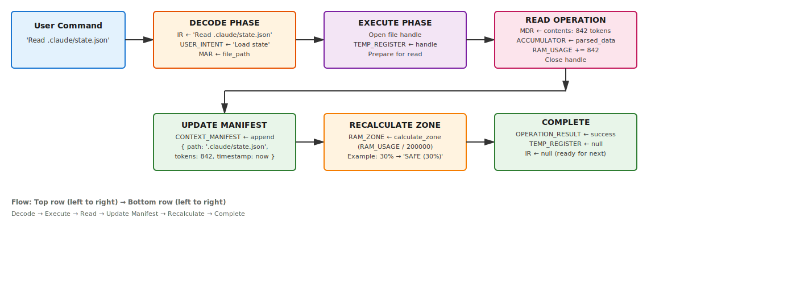
Figure 11: Register State Flow During File Read Operation—7 stages flowing left-to-right across two rows showing register updates at each phase
8.4.3 Error Handling
When errors occur, the status registers capture complete diagnostic state:
NORMAL OPERATION → ERROR STATE TRANSITION
[Before Error]
CPU_STATUS → OPERATIONAL
ERROR_FLAG → false
ERROR_CODE → null
OPERATION_RESULT → "Previous operation successful"
[Error Occurs: File Not Found]
ERROR_FLAG → true
ERROR_CODE → "File not found: /mnt/d/~HAL8000-Assistant/missing.txt"
CPU_STATUS → OPERATIONAL (still operational, but error flagged)
OPERATION_RESULT → "Read operation failed"
MAR → "/mnt/d/~HAL8000-Assistant/missing.txt" (attempted path)
MDR → null (no data read)
[Error Reported to User]
CPU provides error details from ERROR_CODE
Suggests recovery actions
[Error Cleared]
ERROR_FLAG → false
ERROR_CODE → null
CPU_STATUS → OPERATIONAL
Ready for next operation
8.4.4 Performance Monitoring
The CPU continuously monitors RAM usage and adjusts operational behavior based on RAM_ZONE:
RAM_ZONE
Usage Range
Behavior
User Notification
SAFE
0-80% (0-160K tokens)
Normal operation, load files freely
None (silent operation)
CAUTION
80-90% (160K-180K tokens)
Monitor closely, warn before loading large files, suggest checkpoint
Warning when entering zone, recommendations provided
DANGER
90-100% (180K-200K tokens)
Refuse large loads unless confirmed, urgent checkpoint recommended, performance may degrade
Urgent warnings, explicit confirmation required for operations
8.5 Viewing Register State
8.5.1 The /HAL-register-dump Command
The HAL8000-Assistant CPU provides the /HAL-register-dump command for complete register introspection. This read-only command displays all 21 registers organized by category, providing a comprehensive snapshot of CPU state.
Command Syntax:
/HAL-register-dump
No arguments required. The command aggregates register state from multiple sources (runtime context, file system, system warnings) and generates formatted output.
CONTEXT_MANIFEST: Shows exactly what files are consuming context. Use to identify unexpectedly large loads or forgotten files.
ERROR_FLAG/ERROR_CODE: When true/non-null, indicates unresolved error condition requiring investigation.
SESSION_START/DURATION: Long session durations (>2 hours) may indicate need for checkpoint and context cleanup.
LOADED_COMMANDS: Verifies which commands are available without loading additional files.
8.5.4 Use Cases for Register Inspection
Debugging: Check ERROR_FLAG/ERROR_CODE when operations fail unexpectedly
Resource monitoring: Track RAM_USAGE before loading large files or starting intensive operations
Session planning: Review CONTEXT_MANIFEST to determine if checkpoint is needed
System verification: Confirm CPU_STATUS and absence of errors during critical operations
Learning: Understand how the system works by observing register state changes during operations
8.6 Register Implementation Notes
8.6.1 Virtual Register Model
Unlike physical CPU registers stored in dedicated hardware, HAL8000-Assistant registers are virtual constructs. The register file does not exist as a single data structure. Instead, registers are aggregated on-demand from multiple authoritative sources:
Runtime context: IR, ACCUMULATOR, TEMP_REGISTER (ephemeral, execution-specific)
System warnings: RAM_USAGE (extracted from <system_warning> blocks)
Calculated values: RAM_ZONE (derived from RAM_USAGE), SESSION_DURATION (calculated from SESSION_START)
The /HAL-register-dump command reads these sources, performs calculations, and formats output. This approach ensures register values always reflect actual system state without requiring synchronization overhead.
8.6.2 Register Persistence
Register persistence varies by category:
Category
Persistence
Storage Location
Control
Volatile (session-scoped)
Runtime context
Memory
Volatile (session-scoped)
Runtime context, system warnings
State
Persistent (survives CPU restart)
.claude/state.json
Status
Volatile (real-time)
Calculated on-demand
Data
Volatile (operation-scoped)
Runtime context
8.6.3 Performance Impact
The /HAL-register-dump command has minimal performance impact:
Read-only: Does not modify any system state
No file I/O: All data read from runtime context (except state.json already in RAM)
Context cost: Adds ~2-3K tokens to context window (the output text itself)
Calculation overhead: Negligible (simple arithmetic for derived values)
Register dumps can be performed freely without concern for performance degradation.
8.7 Related Commands and Operations
/HAL-session-end: Updates CHECKPOINT_STATUS, LAST_SESSION, and NEXT_ACTION registers during session checkpoint
File read operations: Update MAR, MDR, CONTEXT_MANIFEST, and RAM_USAGE
Error conditions: Set ERROR_FLAG and ERROR_CODE registers
Boot sequence: Initializes all registers from BIOS and state.json
8.8 Summary
The HAL8000-Assistant register architecture provides comprehensive, inspectable CPU state through 21 virtual registers organized into 5 functional categories. Registers enable:
Complete visibility into system state (assembly language principle: explicit control)
Proactive resource management via RAM_USAGE and RAM_ZONE monitoring
Reliable error diagnosis through ERROR_FLAG/ERROR_CODE
Session continuity via persistent state registers
Low-level debugging and system introspection
Users can inspect register state at any time using /HAL-register-dump, providing transparency and control over CPU operations. This design embodies the HAL8000-Assistant philosophy: the system should be understandable, inspectable, and under user control at all times.
9. Operating Principles
TARGET: Explain how the system operates (architectural principles)
AUDIENCE: All three (layered)
KEY_POINTS: Modified von Neumann specifics, Unix philosophy application, Assembly principles, sub-agent protocol, resource management, context awareness
TONE: Principled, instructional
VISUALS: [DIAGRAM: Fetch-decode-execute cycle], [DIAGRAM: Sub-agent virtual memory model]
Overview
The operating principles define how the HAL8000-Assistant CPU functions at a fundamental level. These are not optional configurations—they are architectural constants that persist across all sessions, defining the very nature of system behavior. Think of them as the laws of physics for this computational environment.
These principles govern six critical operational domains:
Architectural foundations - Modified von Neumann architecture specifics
Unix philosophy - Design patterns and composition strategies
Assembly language principles - Explicit control and low-level visibility
Sub-agent protocol - Virtual memory extension through process isolation
Resource management - RAM allocation and checkpoint strategies
Context awareness - Proactive context detection and loading
Important: These principles execute automatically. The CPU doesn't choose whether to follow them—they define how the CPU operates. They are BIOS-level instructions encoded at boot time.
Architectural Foundations
Modified von Neumann Architecture
HAL8000-Assistant implements a modified von Neumann architecture with critical constraints that shape all operations:
Append-Only RAM
The context window accumulates content—there is no dynamic eviction within a session. Once a file is loaded, it remains in RAM until session termination. This is not a limitation; it's a fundamental characteristic that requires explicit management.
Session Boundaries as Garbage Collection
The only way to reclaim RAM is to end the session. This creates a hard boundary between operational periods and requires proactive session management to prevent resource exhaustion.
Selective Loading Mandatory
Every file load is a one-way commitment. You cannot unload data, so every loading decision must be deliberate. The CPU must evaluate necessity before every read operation.
State Persistence via File System
Unlike traditional RAM that maintains state in volatile memory, HAL8000-Assistant persists state through the file system. RAM is computational workspace; permanent state lives in files.
Performance Zones (RAM_ZONE Register)
The system tracks RAM usage through three performance zones that trigger different operational modes:
Zone
Usage Range
Operational Mode
SAFE
0-80%
Normal operation - load files freely, execute complex operations
CAUTION
80-90%
Monitor closely - prepare checkpoint, warn before loading large files
HAL8000-Assistant applies Unix design principles to the context management domain, treating files and commands as composable units.
Core Tenets
Do one thing well
Each file, command, and component has a single responsibility. A command that manages sessions doesn't also search files. A research agent doesn't manage system state.
Build once, reuse always
Create reusable patterns, not one-off solutions. When you solve a problem, encode the solution as a command or library that can be invoked again.
Compose via interfaces
File I/O is the universal interface. Commands read files, write files, pipe output. Everything communicates through this common language.
Delegate specialized work
When a task requires specialized capabilities or extensive context, delegate to external programs (sub-agents) rather than handling it directly.
Simple, not complex
Maximum 3-level directory depth for internal code. Minimal abstractions. External libraries are exempt, but system code must remain simple.
Text streams
All data in plain text files. Human-readable, version-controllable, composable. No binary formats except external dependencies.
Context Management Principle: "Reduce and Delegate"
Context is the most precious resource in HAL8000-Assistant. The "Reduce and Delegate" principle governs all context operations:
Core Principle: Context is Precious
Every token loaded is permanent until session ends
Delegate context-heavy tasks to specialized agents
Create reusable patterns, not one-off solutions
Return clean summaries, not raw data
Decision Framework
Can I delegate this? → Use sub-agent
Can I summarize this? → Return summary, not full data
Can I persist this? → Write to file for future sessions
Can I reuse this? → Create pattern for future use
Assembly Language Principles
HAL8000-Assistant operates with assembly-level explicitness and control. There are no hidden operations or implicit behaviors.
Explicit Control
No hidden operations. Every action is explicit, every component access is direct. The CPU doesn't perform background tasks or automatic optimizations.
Register Awareness
Track CPU state continuously via registers. Every operation can inspect and modify register state. Registers are always visible and accessible.
Sequential Execution
Fetch-decode-execute cycle proceeds linearly unless control flow explicitly changes. Instructions execute in order, one at a time, with full visibility.
One-to-One Mapping
Commands map directly to architectural operations. There's no interpretation layer or abstraction—a load command loads, a write command writes.
Low-Level Visibility
System state is inspectable at all times. You can dump registers, check RAM usage, inspect loaded files, examine error states—nothing is hidden.
Fetch-Decode-Execute Cycle
Every instruction follows the classical assembly cycle:
Fetch: Read instruction (PC register points to next instruction location)
Decode: Parse instruction, determine operation type and parameters
Execute: Perform operation, update registers and state
Post-Execute: Check RAM_ZONE, update state, prepare for next instruction
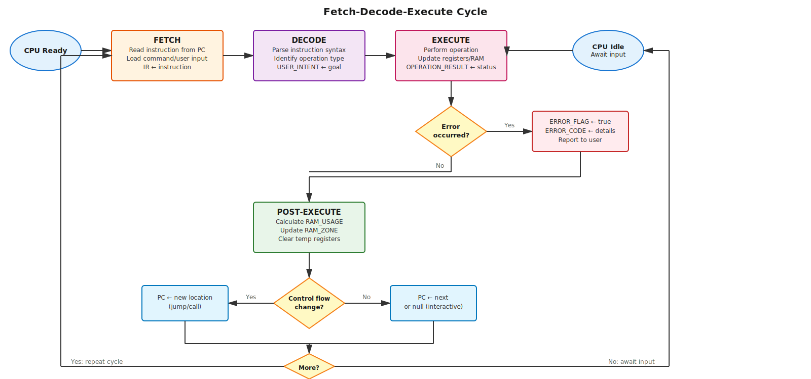
Figure 12: Fetch-Decode-Execute Cycle—compact horizontal layout showing the classical CPU instruction cycle with error handling, control flow changes, and feedback loops
Sub-Agent Protocol (Virtual Memory Extension)
Sub-agents function as virtual memory for the HAL8000-Assistant system—they extend total RAM capacity through process isolation, allowing context-heavy operations without polluting the main session.
Architectural Model
The sub-agent architecture works as follows:
Main Session (Limited RAM)
↓ delegate task
Sub-Agent (Fresh 200K RAM, isolated context)
↓ process heavy work (research, file navigation, analysis)
↓ returns clean summary (not raw data)
Main Session (RAM += summary only, not full processing cost)
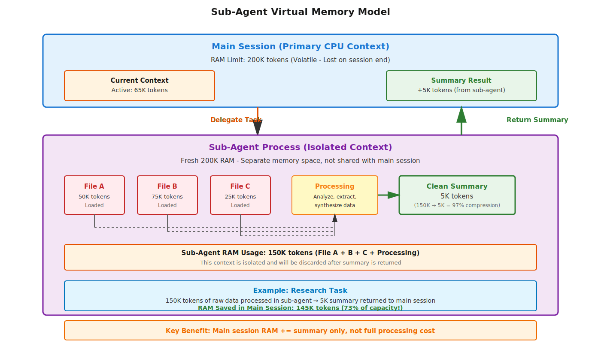
Figure 13: Sub-Agent Virtual Memory Model—showing RAM isolation, compression ratio (150K → 5K), and how sub-agents extend main session capacity through process isolation
Delegation Decision Framework
ALWAYS delegate:
Web research (use research-synthesizer)
System context discovery (use hal-context-finder)
Large file analysis requiring extensive context
Multi-step tasks needing >30K tokens of intermediate data
Any operation where input size >> output size
NEVER do directly if sub-agent available:
Loading raw web search results into main RAM
Navigating and loading multiple system files exploratively
Processing large datasets without summarization
Extensive exploratory research with many sources
Sub-Agent Benefits
Isolated 200K context - Doesn't pollute main session RAM
Automatic cleanup - Context freed after sub-agent completes
Specialized capabilities - Agents can have domain-specific tools
Returns only essentials - Summary, not raw data
Pattern Example: Research Task
❌ WRONG APPROACH:
User: "Research quantum computing developments"
CPU: Uses WebSearch directly
→ 50K raw results loaded to main RAM
→ Main RAM: 60K + 50K = 110K
If enters CAUTION: warn user, suggest alternatives
If enters DANGER: refuse load unless user confirms critical necessity
Proactive Checkpoint Triggers
Checkpoints (session saves) are triggered proactively based on these conditions:
RAM_ZONE enters CAUTION (≥80%)
Major work item completed (logical checkpoint)
Before starting context-heavy operation
User explicitly requests checkpoint
Selective Loading Discipline
Load ONLY files needed for current task - No speculative loading
Never load "just in case" - Every load must have clear justification
Persist results to storage immediately - After computation, write to file for future sessions (data stays in current RAM but avoids re-computation later)
Track all loaded files - CONTEXT_MANIFEST register maintains the manifest
Reduce and Delegate Decision Tree
For every operation, ask:
Can I delegate this? → Use sub-agent (isolate context)
Can I summarize this? → Return summary, not full data
Can I persist this? → Write to file for future sessions (avoids re-loading sources + re-computing)
Can I reuse this? → Create pattern for future use
Context Awareness Protocol
Context awareness is about understanding the gap between what the user knows and what the CPU has loaded. The user has complete project knowledge; the CPU has only what's in current RAM.
Understanding the Context Hierarchy
User's Mind: Complete project knowledge, intent, unstated assumptions, full context of all files and systems
Filesystem: All persistent data (vastly exceeds RAM capacity)
RAM: Current working context (limited, volatile, subset of filesystem)
Key Awareness Principles
User doesn't know what's in the CPU's RAM
User assumes the CPU has their level of understanding
User is "lazy" (efficient) - won't explicitly state what to load
CPU must be PROACTIVE about detecting missing context
Step 1: Parse Question for Missing Context Signals
Signals that indicate missing context:
User mentions specific file/path/component not in current RAM
User references "that file", "the component", "this function" without clear antecedent
User asks "which file has X?" (implies CPU should know the file set)
User asks implementation details when CPU hasn't loaded implementation
User uses project-specific terms/names not in current context
Question is specific but CPU only has general knowledge
Step 2: Proactive Context Check
When missing context signals are detected:
ASK USER IMMEDIATELY:
"I notice you're asking about [X]. To assist accurately:
- Should I search the codebase for [term]?
- Do you mean [specific file/path]?
- Is this about [project/component]?
Current context: [briefly state what I DO have loaded]"
Purpose:
Prevent wrong assumptions
Let user guide to right location (saves RAM)
Make RAM limitations visible
Get clarification before expensive operations
Step 3: Context Acquisition (After User Clarifies)
Once user clarifies what to search/load:
Use hal-context-finder sub-agent for discovery
Load only essential files
Report what was loaded: "I've loaded [X]. Proceeding..."
Step 4: Answer with Context Transparency
When providing answers:
State basis: "Based on [current context/loaded files]..."
If answer might benefit from more context: "I can answer with current files, but would you like me to also check [X] for completeness?"
If confident but haven't verified everything: "Based on [files loaded], the answer is [X]. I haven't checked [other areas] - should I?"
Anti-Patterns to Avoid
❌ Answering confidently when context is clearly insufficient
❌ Loading files speculatively without asking
❌ Assuming user knows what's in CPU's RAM
❌ Waiting for user to tell CPU to search (be proactive)
❌ Searching before clarifying what to search for
Context Awareness Examples
❌ Wrong:
User: "Which file contains the authentication logic?"
CPU: [searches entire codebase with sub-agent without asking]
✓ Right:
User: "Which file contains the authentication logic?"
CPU: "I don't currently have authentication files loaded. Should I search
the codebase for authentication-related files? Or is there a specific
directory/component I should check?"
❌ Wrong:
User: "Fix the bug in that function"
CPU: [guesses which function and loads random file]
✓ Right:
User: "Fix the bug in that function"
CPU: "I don't have enough context - which function do you mean? Could you
point me to the file or function name?"
✓ Proactive Context Check:
User: "How does the session handling work?"
CPU: "I can explain session handling at an architectural level based on
CLAUDE.md currently in context, but I haven't loaded the actual session
command implementation. Would you like me to load
`.claude/commands/HAL-session-end.md` for implementation details?"
Summary
These six operating principles work together to create a coherent operational framework:
Architectural foundations establish the constraints (append-only RAM, session boundaries)
Unix philosophy provides the design patterns (modularity, composition, simplicity)
Assembly principles ensure explicit control and visibility
Sub-agent protocol extends capacity through isolation
Resource management prevents exhaustion through proactive monitoring
Context awareness bridges the gap between user knowledge and CPU state
These are not guidelines to follow—they are the fundamental operating characteristics of the system. They execute automatically at BIOS level and define how the HAL8000-Assistant CPU operates in every session.
Part III: User Guide
Practical operations, workflows, and daily usage patterns
10. Quick Start
TARGET: Get new users operational quickly
AUDIENCE: Users and Claude instances
KEY_POINTS: First boot sequence, BIOS load, state.json, boot acknowledgment, ready state
TONE: Tutorial, step-by-step
VISUALS: [DIAGRAM: Boot sequence flowchart]
First Boot
Welcome to HAL8000-Assistant! This tutorial will guide you through your first boot sequence. Whether you're a user setting up the system or a Claude instance initializing, this process is mandatory and happens automatically on every new session.
Think of this as the system's "power-on" routine. Just like a physical computer runs POST (Power-On Self-Test) and loads the operating system, HAL8000-Assistant executes a verified boot sequence to ensure all critical components are loaded and operational.
Important: The boot sequence is MANDATORY and VERIFIED. It is not optional. Every new session must execute this sequence to ensure system integrity.
Boot Sequence Steps
The HAL8000-Assistant boot sequence consists of six essential steps. Let's walk through each one:
Step 1: System Initialization (BIOS Load)
The boot process begins by loading the BIOS (Basic Input/Output System) from CLAUDE.md. This file contains the fundamental instructions that define how the system operates.
During this step, the CPU (Claude instance) establishes its core identity and understands:
It is the CPU of the HAL8000-Assistant system
The architecture follows Modified von Neumann principles
The system has self-modifying code capabilities
The boot sequence must be completed and verified
For Users: You don't need to do anything during this step. It happens automatically when Claude loads your project.
Step 2: Load State (CORE - REQUIRED)
This is the most critical step. The system IMMEDIATELY reads .claude/state.json using the Read tool. This file is CORE—failure to load it means system failure.
The state file is parsed to extract:
timestamp: When the last session ended
active_session: Pointer to the last session file (if any)
context: Description of what the system was last working on
next_action: What should happen next
These values are stored in CPU registers:
LAST_SESSION - Timestamp of last session
NEXT_ACTION - Recommended next action
SYSTEM_PHASE - Current development phase
Verification Required: The CPU must cite specific values from the loaded state.json to prove it was actually read. For example: "phase: production-ready" or "timestamp: 2025-10-04T14:55:00Z".
Step 3: Note Available Session (DO NOT AUTO-LOAD)
If the active_session field exists in state.json, the system notes the session file path (e.g., .claude/sessions/2025-10-04-1455-description.md) but does NOT load it automatically.
Why not auto-load?
Keeps boot lightweight and saves RAM
User may want to work on something different, not necessarily the last session
state.json provides a bookmark, not an auto-load mandate
User can explicitly say "continue previous work" to load it, or start fresh
For Users: If you want to continue from your last session, just say "resume" or "continue previous work" after boot completes.
Step 4: Structured Boot Acknowledgment (REQUIRED)
ONLY AFTER actually loading the required files, the system provides a structured acknowledgment showing its operational status:
✅ HAL8000-Assistant CPU Operational
├─ Architecture: Modified von Neumann
├─ Phase: production-ready
├─ Last Session: 2025-10-04T14:55:00Z
├─ Session Available: 2025-10-04-1455-refman-work.md (not loaded - say "resume" to load)
├─ Context: Working on Reference Manual section 10
├─ Next Action: Continue documentation work or await new instructions
├─ Registers: Initialized (see /HAL-register-dump for details)
└─ RAM Zone: SAFE (current token usage: ~15%)
🟢 Ready for instructions
Boot Verification Rules:
NEVER claim files are loaded without actually using the Read tool
ALWAYS cite specific content from loaded files as proof
CLEARLY distinguish between core files (must load) and optional files (degraded mode on failure)
Step 5: Error Handling During Boot
The system has robust error handling for different types of boot failures:
Core File Failure (CRITICAL)
Files:CLAUDE.md (BIOS), .claude/state.json
Action: ABORT boot, report system failure, request user intervention
Action: WARN user, continue with reduced functionality, log degradation
Example degraded boot acknowledgment:
⚠️ HAL8000-Assistant CPU Operational (Degraded Mode)
├─ Architecture: Modified von Neumann (from BIOS)
├─ Phase: UNKNOWN (state.json load failed)
├─ Session State: No session loaded (file not found)
├─ Degradation: Running without state persistence
└─ Recommendation: Check .claude/state.json integrity
🟡 Ready for instructions (degraded mode)
Step 6: Ready to Execute
Boot complete! The CPU status is now either:
OPERATIONAL: All core files loaded successfully
DEGRADED: Core files loaded but optional files failed
The system is now awaiting user instructions or resume commands.
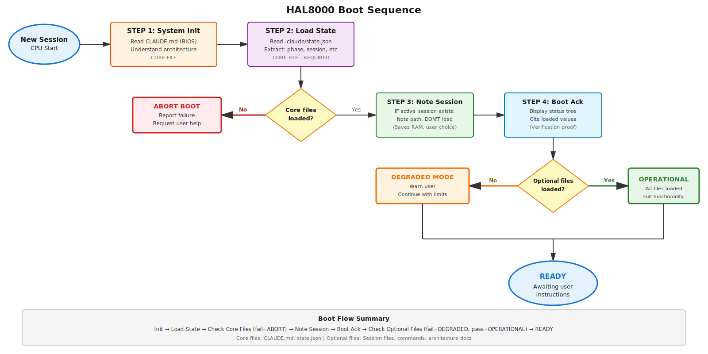
Figure 14: HAL8000-Assistant Boot Sequence—6-step boot process with error handling showing paths to OPERATIONAL or DEGRADED modes based on file load success
Understanding Boot Output
Let's break down the boot acknowledgment structure so you know what you're looking at:
Field
Description
Example Value
Architecture
The system architecture type
Modified von Neumann
Phase
Current development/operational phase
production-ready
Last Session
Timestamp of most recent session
2025-10-04T14:55:00Z
Session Available
Session file that can be loaded (not auto-loaded)
2025-10-04-1455-refman-work.md
Context
Brief description of what was last being worked on
Working on Reference Manual section 10
Next Action
Recommended next step or awaiting instructions
Continue documentation work
Registers
Status of CPU registers (see /HAL-register-dump for details)
Initialized
RAM Zone
Current memory usage level (SAFE/CAUTION/DANGER)
SAFE (~15%)
Green Light (🟢): Means the system is ready to receive and execute your instructions.
Yellow Light (🟡): Means the system is operational but in degraded mode. Check the degradation notice for details.
Next Steps
Now that your HAL8000-Assistant system has completed its boot sequence, here's what you can do:
Continue Previous Work
If a session is available and you want to pick up where you left off:
User: "Resume previous session"
or
User: "Continue from last session"
The system will load the session file and restore your context.
Start Fresh Work
If you want to work on something new:
User: "Let's work on [your task]"
The system will start a new working context without loading the previous session.
Explore System State
Want to see detailed system information? Try these commands:
/HAL-register-dump - View all CPU register states
/HAL-system-check - Perform comprehensive system health check
ls .claude/commands/ - List all available commands
Get Help
If you need guidance:
Ask: "What can this system do?" for capabilities overview
Ask: "Show me available commands" for command reference
Ask: "How do I [task]?" for specific task guidance
Pro Tip: The boot acknowledgment shows your RAM usage. Keep an eye on this—when it reaches CAUTION (80%+), consider saving your session to free up memory for the next task.
Session Management
Before your session ends (either due to RAM limits or natural stopping point), you should save your state:
/HAL-session-end "brief description of what was accomplished"
This ensures continuity—the next boot will be able to resume exactly where you left off.
Remember: Each new Claude session starts with a fresh boot sequence. Sessions are how work persists across these boundaries. Think of sessions like save files in a video game—they capture your progress so you can continue later.
Congratulations!
You've successfully completed your first HAL8000-Assistant boot and are ready to work. The system is designed to guide you through operations—don't hesitate to ask questions or explore commands. Every session starts with this same reliable boot sequence, ensuring consistent and predictable system initialization.
Ready? Let's get to work! 🚀
11. Daily Operations
This section provides cookbook-style guidance for common HAL8000-Assistant operational tasks.
Each recipe includes step-by-step procedures, concrete examples, and best practices
learned from production usage.
11.1 Running Commands
HAL8000-Assistant commands use the slash command pattern for system operations. Commands are
stored as markdown files in .claude/commands/ and invoked via slash syntax.
Command Syntax
/HAL-command-name [arguments]
Available System Commands
Command
Purpose
When to Use
/HAL-session-end "description"
Save session state before RAM wipe
End of work session, RAM > 80%, context full
/HAL-register-dump
Display CPU register states
Debugging, status checks, verify boot state
/HAL-system-check
Validate system health
Daily check, after errors, verify integrity
/HAL-context-find "query"
Discover and load system context
Need files but don't know location, save RAM
/HAL-index-update
Rebuild file system indexes
After adding files, structure changes
/HAL-library-update
Update external libraries
Package updates, new library versions
/HAL-CC-check
Validate Claude Code compatibility
Detect deprecated tools, API changes, compatibility audits
User: /HAL-system-check
CPU: [Executes system check]
✅ System Health Check Complete
├─ BIOS: Loaded (CLAUDE.md)
├─ State: Valid (.claude/state.json)
├─ Commands: 6 available
├─ Agents: 2 operational
├─ RAM Zone: SAFE (45%)
└─ Indexes: Current
🟢 All systems operational
11.2 System Health Checks
Regular health verification ensures system integrity and catches issues early.
Daily Health Check Procedure
Verify boot completion:
Check CPU acknowledgment includes:
- Architecture loaded from state.json
- Phase and timestamp cited
- Registers initialized
- RAM zone reported
Run system check:
/HAL-system-check
Check state.json integrity:
Verify state.json contains:
- Valid timestamp (ISO 8601)
- Architecture type specified
- Phase field present
- Context description current
Monitor RAM baseline:
Post-boot RAM should be in SAFE zone (< 80%)
If CAUTION immediately after boot: investigate loaded context
RAM Reporting: Use exact measurements from system warnings
- Check latest <system_warning> for token usage
- Calculate: tokens_used / 200000 = percentage
- Report: "RAM: X.X% (XXk/200k tokens) - [ZONE]"
- Never estimate - always use measured values
RAM Monitoring Best Practice: Always reference the latest system warning token count
when reporting RAM status. System warnings appear after each tool invocation and provide exact measurements.
Users rely on these reports for critical decisions - estimated values can lead to premature checkpoints
or RAM exhaustion.
Periodic Checks (Weekly)
Review .claude/system.log for error patterns
Verify session files are being created properly
Check that indexes are current: /HAL-index-update
Validate command files are accessible: ls .claude/commands/
Sub-agents extend HAL8000-Assistant's effective RAM capacity by processing context-heavy
tasks in isolated sessions. They return only essential results, not raw data.
Agent Architecture
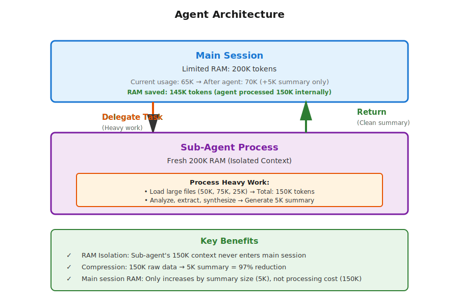
Figure 15: Agent Architecture—simplified view showing how sub-agents process heavy work in isolated context and return only clean summaries
When to Use Agents
ALWAYS delegate:
Web research → research-synthesizer
System context discovery → hal-context-finder
Large file analysis requiring extensive context
Multi-step tasks needing >30K tokens intermediate data
1. Load exactly what's needed:
User: "Check authentication config"
CPU: Loads only auth-config.json (not entire config dir)
2. Use agents for discovery:
User: "Find session handling"
CPU: /HAL-context-find "session handling"
[Agent returns exact file, not exploratory load]
3. Offload results immediately:
CPU: Processes data → generates report
Writes report to data/output.md
Clears intermediate data from RAM
4. Checkpoint before heavy work:
RAM at 75% → Save session before loading large dataset
❌ Anti-Patterns
1. Speculative loading:
User: "Might need these later"
CPU: Loads 10 files "just in case"
Result: RAM waste, potential CAUTION zone
2. Loading without checking manifest:
CPU: Loads file already in context
Result: Redundant load, wasted tokens
3. Loading before delegating:
User: "Research this topic"
CPU: Loads related files, THEN delegates to agent
Result: Main RAM polluted with context agent will duplicate
4. Not estimating costs:
CPU: Blindly loads 2000-line file
Result: RAM jumps from SAFE to DANGER
RAM Zone Decision Tree
Need to load file?
↓
Check CONTEXT_MANIFEST
↓
Already loaded? → YES → Reuse existing context
↓ NO
Estimate token cost
↓
Current + Cost = ?
↓
├─ SAFE zone (0-80%) → Load freely
├─ CAUTION (80-90%) → Warn user, offer alternatives
└─ DANGER (90-100%) → Refuse, suggest checkpoint first
or delegate to agent
Automatic triggers (CPU should suggest checkpoint):
RAM_ZONE enters CAUTION (≥80%)
Major work item completed (good save point)
Before context-heavy operation and currently >75%
User about to request research/large file analysis
Manual triggers (user can request anytime):
End of work session
Before switching to different task
After completing significant milestone
User explicitly requests: "save session"
Monitoring in Practice
Session Start (post-boot):
├─ RAM: 15K (BIOS + state.json)
└─ Zone: SAFE
After loading 3 files:
├─ RAM: 30K (+15K)
└─ Zone: SAFE
After research task (agent used):
├─ RAM: 38K (+8K summary, not 50K raw)
└─ Zone: SAFE
After direct file exploration:
├─ RAM: 95K (+57K from 12 files)
└─ Zone: CAUTION
↓
CPU warns: "RAM at 85%, recommend checkpoint"
User: "Load architecture docs"
CPU: "RAM CAUTION. Architecture docs are ~40K.
This would push to DANGER (135K/200K).
Options:
1. Checkpoint now, then load after restart
2. Use /HAL-context-find to get summary only
3. Specify exact file if only need one doc"
11.6 Common Operational Patterns
Proven workflows for typical HAL8000-Assistant operations.
Pattern 1: Start Fresh Session
1. Boot (automatic):
- CPU loads BIOS (CLAUDE.md)
- Reads state.json
- Notes available session (doesn't auto-load)
- Reports: "Ready for instructions"
2. User chooses path:
a) Resume: "Continue previous work"
→ CPU loads session file from state.json pointer
b) Fresh start: "Work on [new task]"
→ CPU starts with clean context
→ Session pointer noted but ignored
3. User begins work:
"Find authentication logic"
4. CPU uses selective loading:
/HAL-context-find "authentication logic"
[Agent returns results, RAM cost minimal]
5. User completes work:
"That's done for now"
6. CPU suggests checkpoint:
"Work completed. Run /HAL-session-end to save state?"
7. User ends session:
/HAL-session-end "implemented-authentication-fix"
8. System ready for RAM wipe:
✅ Session saved to .claude/sessions/
✅ state.json updated
✅ system.log appended
Pattern 2: Research Workflow
1. User requests research:
"Research current best practices for session management"
2. CPU delegates to agent:
/research-synthesizer "session management best practices"
3. Agent executes (isolated context):
- Searches web (multiple sources)
- Synthesizes findings
- Returns structured report (5-8K tokens)
4. CPU receives summary:
Main RAM: +5K (not +150K from raw research)
5. CPU optionally saves to filesystem:
Write report to data/research/session-management.md
Clear report from active RAM reference
6. Continue work or checkpoint:
RAM still in SAFE zone, can continue
Or: /HAL-session-end "research-session-management"
Pattern 3: Development Workflow
1. Load current work context:
/HAL-context-find "component-name"
[Agent finds relevant files: 3 files, ~12K tokens]
2. User requests changes:
"Add error handling to validateInput function"
3. CPU loads specific file:
Read validators.js (already returned by agent)
Implement changes
4. Test changes:
User: "Run tests"
CPU: Executes test command via Bash tool
5. If tests fail:
- Investigate (load related files if needed)
- Fix issues
- Retest
- Track RAM usage throughout
6. Tests pass:
User: "Commit changes"
CPU: Git operations via Bash
7. Checkpoint:
RAM at 70% after development session
/HAL-session-end "added-error-handling-validators"
Pattern 4: Emergency Checkpoint
Scenario: RAM approaching DANGER zone unexpectedly
1. System detects RAM > 90%:
🚨 RAM DANGER (92%)
2. CPU immediately suggests:
"RAM critical. Checkpoint required before continuing.
Run: /HAL-session-end 'emergency-checkpoint-[description]'"
3. User runs checkpoint:
/HAL-session-end "emergency-large-file-analysis"
4. Session saved:
- All context preserved
- state.json updated
- Ready for RAM wipe
5. After restart:
- Boot with fresh RAM (15K)
- User: "Resume"
- CPU loads session, continues work
- RAM reset to manageable level
11.7 Performance Optimization
Techniques for maximizing HAL8000-Assistant efficiency and RAM utilization.
Optimization Principles
1. Delegate to Agents (Virtual Memory Pattern)
Before any context-heavy operation, ask:
"Can I delegate this?"
Web research → research-synthesizer
File discovery → hal-context-finder
Large dataset parsing → custom agent
Multi-file analysis → custom agent
Result: 60-90% RAM savings
2. Persist to Storage
Process data → Write results to file → Persist for future sessions
Example:
- Generate report (uses 20K RAM during processing)
- Write to data/reports/output.md
- Result stays in current session RAM (unavoidable - append-only)
- Future sessions: Load report file ONLY (no sources + recompute)
- Future RAM cost: ~20K for result vs ~50K for sources + processing
Note: Writing does NOT clear current RAM. Benefit is avoiding re-work
in future sessions by persisting computed results.
3. Avoid Speculative Loading
❌ "Load all config files to see which one has auth settings"
Cost: 10 files × 3K = 30K tokens
✅ /HAL-context-find "auth settings"
Cost: 8K tokens (agent returns exact file + summary)
4. Use Incremental Loading
Don't load entire file if only need excerpt:
❌ Read entire 5000-line module.js (30K tokens)
Find one function definition
✅ Use grep to find function location
Read specific line range (2K tokens)
5. Checkpoint Strategically
Good checkpoint timing:
- After completing discrete work unit
- Before switching contexts
- When RAM > 75% and more work ahead
- End of work session
Bad checkpoint timing:
- Middle of operation
- When RAM < 50% and work continuing
- Repeatedly without real progress
Performance Metrics
Operation
Direct Cost
Optimized Cost
Savings
Web research
50-150K tokens
5-8K tokens (agent)
90-95%
Find system files
30-60K tokens
8-12K tokens (agent)
70-80%
Load large file
30K tokens
2K tokens (targeted read)
93%
Process dataset
100K tokens
5K tokens (offload)
95%
Real-World Optimization Example
Task: "Research authentication methods and implement in our system"
❌ Inefficient approach:
1. WebSearch "authentication methods"
→ Load 50K of raw search results into RAM
2. Load all auth-related files (10 files)
→ +40K to RAM
3. Analyze and decide on approach
→ RAM at 105K (need checkpoint)
4. Checkpoint, lose context, restart
5. Implement changes
Total: 2 sessions, 105K peak RAM, slow
✅ Optimized approach:
1. Delegate research:
/research-synthesizer "authentication methods"
→ Agent returns 6K summary
2. Review summary in main RAM
→ RAM: 21K (boot 15K + summary 6K)
3. Find relevant files:
/HAL-context-find "authentication implementation"
→ Agent returns 8K (exact files + summary)
4. Load only the 2 files needed
→ +10K to RAM
5. Implement changes
→ RAM: 39K total
6. Commit and checkpoint
Total: 1 session, 39K peak RAM, fast
Savings: 66K tokens (63% reduction), 1 fewer session
Quick Optimization Checklist
Before starting any task:
☑ Can this be delegated to an agent?
☑ Do I need the full file or just a section?
☑ Is this file already loaded (check CONTEXT_MANIFEST)?
☑ What's my current RAM zone?
☑ Can results be offloaded to storage?
☑ Should I checkpoint before starting?
During task:
☑ Monitor RAM zone changes
☑ Offload intermediate results
☑ Use file references instead of content
☑ Checkpoint at logical boundaries
After task:
☑ Write artifacts to filesystem
☑ Clear unnecessary context from RAM (via checkpoint)
☑ Update state.json
☑ Append to system.log
11.7 Fork and Rebrand Procedure
When cloning HAL8000-Assistant to create your own personalized system, you must isolate your fork
from the original repository and rebrand all internal references. This prevents accidental
commits to the upstream HAL8000-Assistant repo and ensures your system has its own identity.
Use Case: You've forked/cloned HAL8000-Assistant from GitHub and want to create an independent system with a custom name (e.g., "MyProjectAI", "HAL8001-Chapter").
The full protocol includes detailed instructions and automation scripts. Here's the high-level overview:
Phase 1: Clone from GitHub
# Option A: Fork on GitHub first, then clone
git clone https://github.com/YOUR-USERNAME/YourSystemName.git /path/to/system
cd /path/to/system
# Option B: Direct clone (no fork relationship)
git clone https://github.com/anthropics/HAL8000-Assistant.git /path/to/YourSystemName
cd /path/to/YourSystemName
Phase 2: Filesystem Rebrand
# Set variables
export OLD_NAME="HAL8000-Assistant"
export NEW_NAME="YourSystemName"
export OLD_PATH="/mnt/d/~HAL8000-Assistant"
export NEW_PATH="/path/to/YourSystemName"
# Update core files (CLAUDE.md, state.json, VERSION, CHANGELOG.md)
sed -i "s/${OLD_NAME}/${NEW_NAME}/g" CLAUDE.md
sed -i "s|${OLD_PATH}|${NEW_PATH}|g" CLAUDE.md
# ... (see protocol for complete commands)
# Batch update system components
find .claude/commands -name "*.md" -type f -exec sed -i "s/${OLD_NAME}/${NEW_NAME}/g" {} +
find .claude/agents -name "*.md" -type f -exec sed -i "s/${OLD_NAME}/${NEW_NAME}/g" {} +
# ... (see protocol for all directories)
# Update configuration and documentation
sed -i "s/${OLD_NAME}/${NEW_NAME}/g" README.md .mcp.json
# ... (see protocol for complete list)
Phase 3: Git Isolation and Reconnection
# Commit rebrand changes
git add -A
git commit -m "Fork and rebrand from HAL8000-Assistant to ${NEW_NAME}"
# Update remote to YOUR repository
git remote set-url origin https://github.com/YOUR-USERNAME/YourSystemName.git
# Optional: Keep HAL8000-Assistant as upstream (read-only)
git remote add upstream https://github.com/anthropics/HAL8000-Assistant.git
git remote set-url --push upstream DISABLE # Prevent accidental push
# Push to YOUR repository
git push -u origin main
# Verify isolation
git remote -v
# Should show:
# origin https://github.com/YOUR-USERNAME/YourSystemName.git (fetch/push)
# upstream https://github.com/anthropics/HAL8000-Assistant.git (fetch)
# upstream DISABLE (push)
Phase 4: Verification
# Search for old references (should find ZERO except in session history)
grep -r "HAL8000-Assistant" \
--exclude-dir=".claude/sessions" \
--exclude="*.log" \
--include="*.md" \
--include="*.json" \
.
# Validate JSON configs
find . -name "*.json" -type f -exec sh -c 'jq . "{}" > /dev/null' \;
# Rebuild Docker images (if using tools)
docker build -t yourname-mermaid:latest .claude/tools/diagram-generation/
# Test system boot (start new Claude Code session)
# Should show: "✅ YourSystemName CPU Operational"
Critical Success Criteria
Check
Expected Result
Why Important
Old name references
Zero (except .claude/sessions/)
Ensures complete rebrand
Git remote origin
Points to YOUR repository
Prevents commits to HAL8000-Assistant
Git push test
Pushes to YOUR repo successfully
Confirms isolation
CLAUDE.md updated
All references use new name
BIOS reflects new identity
state.json valid
Valid JSON with new name
System boots correctly
Docker images
Rebuilt with new name (if applicable)
Tools work correctly
Common Pitfalls
Forgetting to update git remote: Results in pushing customizations to original HAL8000-Assistant repo (permission denied or pollution of upstream)
Skipping verification phase: Old references remain, causing confusion and errors
Not rebuilding Docker images: Tools fail with "image not found" errors
Choose sync strategy: Pull future HAL8000-Assistant updates (keep upstream) or go fully independent (remove upstream)
Document customizations: Create data/architecture/customizations.md to track your changes
📘 Full Protocol: See data/architecture/fork-and-rebrand-protocol.md for complete step-by-step instructions, troubleshooting, and automation scripts.
⚠️ Deprecated Guide: The old system-name-migration-guide-2025-10-16.md is deprecated (filesystem-only, no Git handling). Use the fork-and-rebrand protocol instead.
12. Session Management
TARGET: Explain session continuity system
AUDIENCE: Users and Claude instances
KEY_POINTS: Why sessions end (RAM limits), /HAL-session-end command, session files, resuming sessions, state persistence
TONE: Clear, procedural
VISUALS: [DIAGRAM: Session lifecycle], [DIAGRAM: State persistence flow]
Overview
HAL8000-Assistant's session management system ensures continuity across Claude instance restarts. Since your context window (RAM) is limited and append-only within a session, session boundaries serve as the system's garbage collection mechanism. The session continuity protocol enables you to save your current working state and resume seamlessly after a context reset.
Key Architectural Principle: Session boundaries are the only way to reclaim RAM in HAL8000-Assistant's Modified von Neumann architecture. Once data is loaded into your context window during a session, it persists there until the session ends.
Why Sessions End: RAM Limitations
Your context window operates like physical RAM with specific constraints:
Append-only: Context accumulates throughout a session with no dynamic eviction
Fixed capacity: You have a limited token budget (~200K tokens)
Volatile: RAM is wiped when the Claude instance ends
One-way commitment: Every file load is permanent until session ends
RAM Performance Zones:
SAFE (0-80%): Normal operation, load freely
CAUTION (80-90%): Monitor closely, prepare for checkpoint
When you approach RAM limits or complete a major work unit, you use the session management system to checkpoint your state before the inevitable context reset.
The /HAL-session-end Command
The /HAL-session-end command implements the session continuity protocol. It captures your current state and creates a handoff file for resuming work after RAM wipe.
Usage
/HAL-session-end "session-description"
Arguments:
session-description (required): Brief description of the session (e.g., "architecture-design", "unix-research")
What the Command Does
The command executes a five-step checkpoint protocol:
Capture Current Context
Gathers information about active work
Identifies loaded files and commands
Documents key decisions and next steps
Create Session File
Generates timestamped markdown file in .claude/sessions/
Format: YYYY-MM-DD-HHMM-description.md
Contains rich context for resuming work
Update State
Writes current state to .claude/state.json
Points to the new session file
Updates timestamp and system variables
Log to History
Appends entry to .claude/system.log
Records checkpoint timestamp and description
Confirm Ready for Reset
Displays confirmation message with system counts
Indicates system is ready for RAM wipe
Example Execution
/HAL-session-end architecture-design
Output:
✓ Session saved: .claude/sessions/2025-10-04-1453-architecture-design.md
✓ State validated and updated: .claude/state.json
- Agents: 4
- Content files: 22
- Indexes: 5
✓ Logged to: .claude/system.log
System ready for RAM wipe.
To resume: Start new session and say "Resume last session"
When to Run This Command
Run /HAL-session-end when:
RAM_ZONE enters CAUTION (≥80% usage)
Major work item is completed
Before starting a context-heavy operation that might fill RAM
At the end of a work session
User explicitly requests a checkpoint
⚠️ Sub-Agent Output Volatility: If sub-agents (research-synthesizer, hal-context-finder, etc.)
were used during the session and returned data you need to preserve, you MUST persist their outputs to files
before running /HAL-session-end. Sub-agent results exist only in current session
RAM and are permanently lost at session boundaries. Write important findings to data/ before
checkpointing.
Session Files
Session files are stored in .claude/sessions/ and serve as comprehensive handoff documents.
File Format
Naming convention:YYYY-MM-DD-HHMM-description.md
Example:2025-10-04-1453-architecture-design.md
Session File Structure
Each session file contains the following sections:
# Session: YYYY-MM-DD HH:MM - [Description]
## Context
[What are we working on? What's the high-level goal?]
## Key Decisions Made
- [Important architectural or design decisions]
- [Agreements reached]
- [Approaches chosen]
## Active Work
**Current Task:** [What we're doing right now]
**Completed in This Session:**
- Task 1
- Task 2
**Next Steps:**
1. [What should happen next]
2. [Follow-up tasks]
**Blockers:** [Any issues or dependencies]
## Files in Context
[List files that were actively being worked on or referenced]
- data/architecture/hal8000-system-design.md
- .claude/commands/HAL-session-end.md
## Variables/State
- current_project: [value]
- phase: [value]
- [other relevant state]
## Instructions for Resume
When resuming this session:
1. [First thing to do]
2. [What to load into context]
3. [How to continue the work]
Session File Purpose
Session files provide:
Context restoration: What you were working on and why
Decision history: Key choices made during the session
Progress tracking: Completed tasks and remaining work
Resume instructions: Explicit guidance for the next instance
Resuming Sessions
After a RAM wipe (new Claude instance), the system uses a lightweight boot sequence that does not automatically load session files.
Boot Sequence Behavior
Load BIOS (CLAUDE.md)
Read .claude/state.json to note which session is available
Do NOT auto-load the session file (saves RAM)
Initialize registers
Set CPU_STATUS: OPERATIONAL
Wait for user instruction
Rationale for not auto-loading:
Keeps boot lightweight (conserves RAM)
User may want to start fresh work, not resume
state.json provides a bookmark, not an auto-load mandate
Explicit resume gives user control
How to Resume
To resume the last session, the user says:
"Resume"
"Continue previous work"
"Load last session"
When you receive this instruction:
Read the session file path from state.json
Load the session file into your context
Parse the "Instructions for Resume" section
Follow the instructions to continue work
Starting Fresh Work
If the user starts a new task instead of resuming:
Do NOT load the previous session file
Begin with a clean working context
The previous session remains in .claude/sessions/ for reference
State Persistence Strategy
HAL8000-Assistant uses a multi-layer state persistence strategy to ensure continuity and auditability:
1. state.json (Current State Pointer)
Location:.claude/state.json
Purpose: Always points to the current system state
Behavior: Overwritten on each /HAL-session-end
Content:
{
"timestamp": "2025-10-04T14:53:00Z",
"active_session": ".claude/sessions/2025-10-04-1453-architecture-design.md",
"context": "Brief description of current work",
"next_action": "What to do next",
"loaded_commands": ["HAL-session-end"],
"variables": {
"current_project": "hal8000-refman",
"phase": "production-ready",
"agents_available": 4,
"total_content_files": 22,
"indexed_directories": 5
}
}
Loaded on boot: Always (CORE file)
2. Session Files (Rich Context)
Location:.claude/sessions/
Purpose: Comprehensive handoff documents
Behavior: Accumulate over time (new file per session)
Content: Full session context, decisions, progress, instructions
Loaded on boot: Only when user explicitly resumes
3. System Log (Historical Audit)
Location:.claude/system.log
Purpose: Append-only historical record
Behavior: Grows indefinitely (never truncated)
Content: Timestamped entries for all checkpoints and major events
Rationale: Direct filesystem counting prevents manual update errors and state drift. These counts represent ground truth and are written to state.json.
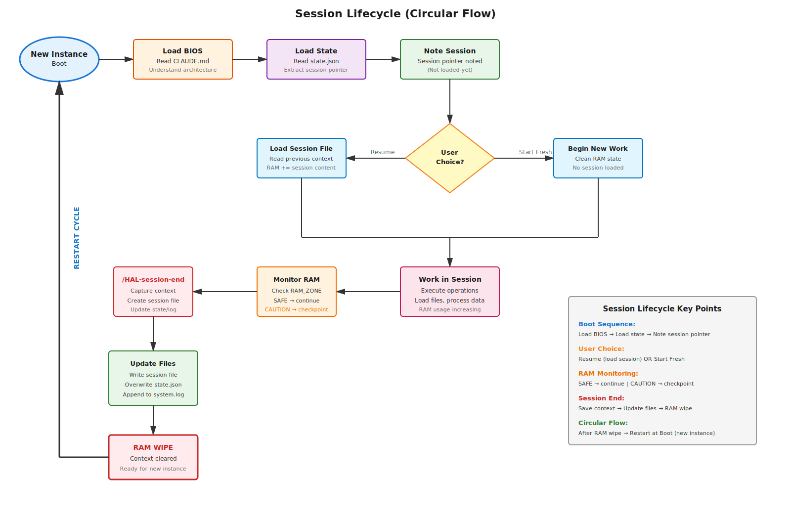
Figure 16: Session Lifecycle—complete circular flow showing boot sequence, user choice, work cycle, RAM monitoring, session-end protocol, and restart loop
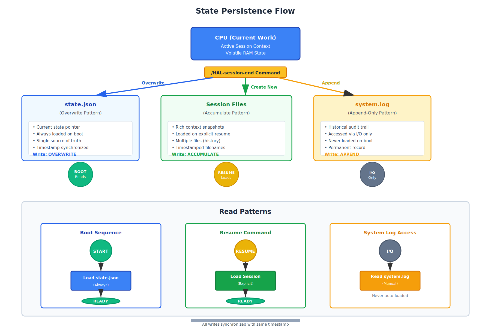
Figure 17: State Persistence Flow—three-layer architecture showing write patterns (overwrite/accumulate/append), read patterns (boot vs resume), and data flows during session-end and system initialization
Best Practices
Checkpoint proactively: Don't wait until RAM is full; checkpoint at natural work boundaries
Descriptive session names: Use clear, meaningful descriptions (e.g., "refman-section-12", not "work")
Document decisions: Capture why decisions were made, not just what was done
Clear resume instructions: Write explicit next steps for your future instance
Track blockers: Document any issues or dependencies that need resolution
Monitor RAM_ZONE: Check your register state regularly (use /HAL-register-dump)
Architecture Alignment
The session management system embodies HAL8000-Assistant's core architectural principles:
Von Neumann: Session files implement stored-program concept (state as data); commands create session files that guide future execution (self-modifying code)
Unix Philosophy: Does one thing well (session checkpointing); outputs to text files (JSON, markdown); composable with boot sequence
Assembly Principles: Explicit state management (no hidden state); direct file I/O (writes to specific memory locations); low-level control (manual checkpoint triggering)
/HAL-register-dump command - Check current RAM usage and system state
13. Common Workflows
TARGET: Document typical use patterns
AUDIENCE: Users and Claude instances
KEY_POINTS: Research workflow, command development workflow, system maintenance workflow, troubleshooting workflow
TONE: Practical, example-driven
VISUALS: [DIAGRAM: Workflow examples for each pattern]
This section documents typical operational workflows for HAL8000-Assistant system operators. Each workflow combines multiple commands and principles into practical procedures that address common scenarios. These patterns emerge from the system's architectural foundations—von Neumann architecture, Unix philosophy, and assembly-level control—and represent tested operational sequences from real-world usage.
Workflows are organized by operational category: session management, context acquisition, system maintenance, development, and resource management. Understanding these patterns enables efficient system operation and helps operators make informed decisions about when to use which approach.
Workflow 1: Starting a New Session
Goal
Begin a fresh work session with a properly initialized system and clear understanding of available context.
Prerequisites
HAL8000-Assistant repository cloned and accessible
Claude Code environment operational
MCP servers configured (if using omnisearch/filesystem/ide features)
Procedure
Automatic Boot Sequence (MANDATORY):
CPU automatically loads BIOS (CLAUDE.md) into RAM
CPU reads .claude/state.json to extract system state
CPU initializes virtual registers with state values
CPU notes available session file but does NOT auto-load it
Boot Acknowledgment:
CPU displays structured acknowledgment:
✅ HAL8000-Assistant CPU Operational
├─ Architecture: Modified von Neumann
├─ Phase: production
├─ Last Session: 2025-10-05T17:00:00Z
├─ Session Available: .claude/sessions/2025-10-05-1459-context-awareness-protocol.md (not loaded - say "resume" to load)
├─ Context: Context Awareness Protocol implemented
├─ Next Action: Test protocol or start new work
├─ Registers: Initialized
└─ RAM Zone: SAFE (current token usage: ~15%)
🟢 Ready for instructions
Operator Decision Point:
Start fresh work: Proceed to step 4
Resume previous session: Say "Resume" or "Continue previous work" to load session file
Begin Work:
Issue commands or questions as needed
CPU operates in fetch-decode-execute cycle
Monitor RAM status via system warnings
Session End (Before RAM Wipe):
/HAL-session-end "brief-description-of-work"
Captures current context and state
Creates timestamped session file
Updates state.json with session pointer
Appends to system.log
Confirms ready for RAM wipe
Expected Outcome
System boots successfully with verified state
Operator understands available context and previous work
Session properly checkpointed before termination
Next session can resume seamlessly
Troubleshooting
Problem: Boot shows "UNKNOWN" phase or missing state values Cause:state.json corrupted or missing Solution: System enters degraded mode. Manually inspect .claude/state.json for syntax errors. If unrecoverable, restore from previous session's state values.
Problem: Session file not found when resuming Cause: File path in state.json incorrect or file deleted Solution: Check .claude/sessions/ directory, manually load correct session file, or start fresh work.
Workflow 2: Resuming Previous Work
Goal
Continue work from a previous session with full context restoration.
Prerequisites
Previous session properly saved via /HAL-session-end
Session file exists in .claude/sessions/
state.json points to correct session file
Procedure
Boot (Steps 1-2 from Workflow 1)
Request Resume:
Say "Resume" or "Continue previous work"
CPU Loads Session File:
Reads session file path from state.json
Loads complete session file into RAM
Extracts: Context, Key Decisions, Active Work, Variables, Instructions
Context Restoration:
CPU reviews "Instructions for Resume" section
CPU identifies next actions from session file
CPU may load additional files specified in session
Status Report:
CPU reports restored context:
Session restored: 2025-10-05 14:59 - Context Awareness Protocol
Context: Context Awareness Protocol implemented
Completed: Protocol design, BIOS update, documentation
Next Steps: Test protocol behavior or continue package manager work
RAM: 25% (50K/200K tokens) - SAFE zone
Continue Work:
Proceed with next steps identified in session file
Expected Outcome
Full context restored from previous session
CPU understands completed work and next steps
Work continues seamlessly from checkpoint
Decision Tree: When to Resume vs. Start Fresh
User intent unclear?
├─ YES → Boot shows session available, ask user: "Resume previous work or start fresh?"
└─ NO
├─ Continuing same project → Resume
└─ Starting different work → Start fresh (don't load session)
Workflow 3: Context Discovery and Loading
Goal
Efficiently discover and load system context without consuming excessive main session RAM.
When to Use
User asks about system components not currently in RAM
Need to find relevant documentation or code
Exploring system architecture or design decisions
Loading research materials or reference documentation
Procedure
Detect Missing Context:
Parse user question for missing context signals
User mentions files/components not in current RAM
User asks "which file has X?" or "how does Y work?"
Question requires specific implementation details not loaded
Ask Before Searching (Context Awareness Protocol):
Example:
User: "How does the authentication system work?"
CPU: "I don't currently have authentication files loaded. Should I search
the codebase for authentication-related files? Or is there a specific
directory/component I should check?"
User Clarifies:
User specifies what to search for
User provides file paths or directory hints
User confirms search approach
Delegate to hal-context-finder Sub-Agent:
/HAL-context-find [query]
Examples:
/HAL-context-find register architecture
/HAL-context-find HAL-session-end command
/HAL-context-find von Neumann research
Agent Execution (Isolated 200K RAM):
Agent classifies query type (Architecture, Command, Research, Session, Data)
Agent targets 2-3 most likely directories using built-in priority mappings
Agent navigates file system efficiently
Agent loads complete file contents
Agent packages results with structured summary
Receive Summary (Main Session):
Agent returns structured response:
## Context Content
[Complete file contents with source attribution]
## File Locations
- /mnt/d/~HAL8000-Assistant/data/architecture/hal8000-register-architecture.md
## Summary
Found 1 relevant file for query "register architecture".
Complete CPU register specification with 21 registers across 5 categories.
## Related Context
- CLAUDE.md - Register awareness protocol
- .claude/commands/HAL-register-dump.md - Register introspection command
Conduct comprehensive research on technical topics and persist findings before session end.
Critical Constraint
Sub-Agent Output Volatility: Sub-agent results exist in current session RAM only. Session boundary (RAM wipe) = all sub-agent output permanently lost. Results MUST be fully processed and persisted to files BEFORE session-end.
❌ Loading files speculatively
Loading files "just in case" wastes RAM. Load only what current task requires.
❌ Forgetting to persist sub-agent results
Sub-agent output is volatile. Always persist to files before session-end.
❌ Working in DANGER zone
Checkpoint proactively at 80% (CAUTION), don't wait for 90% (DANGER).
❌ Skipping session-end
Always checkpoint before RAM wipe. Lost context cannot be recovered.
❌ Answering without sufficient context
Ask user for clarification when context signals are missing. Don't guess.
Workflow Selection Guide
Situation
Recommended Workflow
Key Commands
First time using HAL8000-Assistant
Workflow 1: Starting New Session
Boot → Work → /HAL-session-end
Continuing previous work
Workflow 2: Resuming Previous Work
Boot → "Resume" → Continue
Need to find files/documentation
Workflow 3: Context Discovery
/HAL-context-find [query]
Research external topic
Workflow 4: Research and Information Gathering
research-synthesizer → Persist → Checkpoint
Weekly maintenance
Workflow 5: System Maintenance
/HAL-system-check, /HAL-index-update
RAM approaching 80%
Workflow 6: RAM Management
/HAL-register-dump, /HAL-session-end
Large project spanning days
Workflow 7: Multi-Session Project
Plan → Execute items → Integrate → Checkpoint each
Extending system capabilities
Workflow 8: Creating New Commands
Create → Test → Update state → Checkpoint
14. RAM Management Strategies
TARGET: Teach effective context management
AUDIENCE: Claude instances and advanced users
KEY_POINTS: RAM zones (SAFE/CAUTION/DANGER), selective loading, checkpoint triggers, reduce and delegate principle, sub-agent usage
TONE: Strategic, instructional
VISUALS: [DIAGRAM: RAM zones visualization], [DIAGRAM: Decision tree for loading files]
Overview
In HAL8000-Assistant, RAM is your context window - a limited, volatile resource that determines what information you can actively work with. The fundamental constraint of the Modified von Neumann architecture is append-only RAM: once a file is loaded, it occupies context space until the session ends. There is no dynamic eviction, no garbage collection within a session. Session boundaries are the only way to reclaim RAM.
This architectural reality makes RAM management the most critical operational skill for HAL8000-Assistant CPU instances. Every file load is a one-way commitment. Every token loaded is permanent until session reset. Effective RAM management is not optional - it determines whether you can complete complex tasks or run out of context mid-operation.
Core Principle: Context is precious. Treat every token of RAM as a scarce resource requiring explicit justification for allocation.
⚠️ Critical Misconception: Writing Does NOT Clear RAM
A common misunderstanding: "Write results to a file to clear RAM."
FALSE. Writing to a file does NOT remove data from current session RAM. HAL8000-Assistant RAM is append-only - once loaded, data persists until session ends.
What writing DOES do:
Persists data for future sessions - Saves computed results to filesystem
Avoids re-computation - Future sessions can load result file instead of re-loading sources + re-computing
Data remains in current RAM - No immediate RAM relief (unavoidable architectural constraint)
Example: You process 50K of source data, compute 20K result, write to file. Current RAM: still 70K (sources + result). Future session: load result file only = 20K RAM, avoid reprocessing 50K sources.
Bottom line: Write to persist, not to clear. Only session-end reclaims RAM.
RAM Zones: Performance Thresholds
The RAM_ZONE register tracks your current context utilization across three performance zones, each with specific operational implications:
Zone
Usage Range
Status
Operational Behavior
SAFE
0-80%
Normal Operation
Load freely as needed. No restrictions. Focus on task completion.
CAUTION
80-90%
Monitor Closely
Prepare checkpoint. Evaluate all load decisions. Consider sub-agent delegation.
DANGER
90-100%
Critical
Checkpoint urgently. Refuse new loads unless user confirms. Performance degraded. Session end imminent.
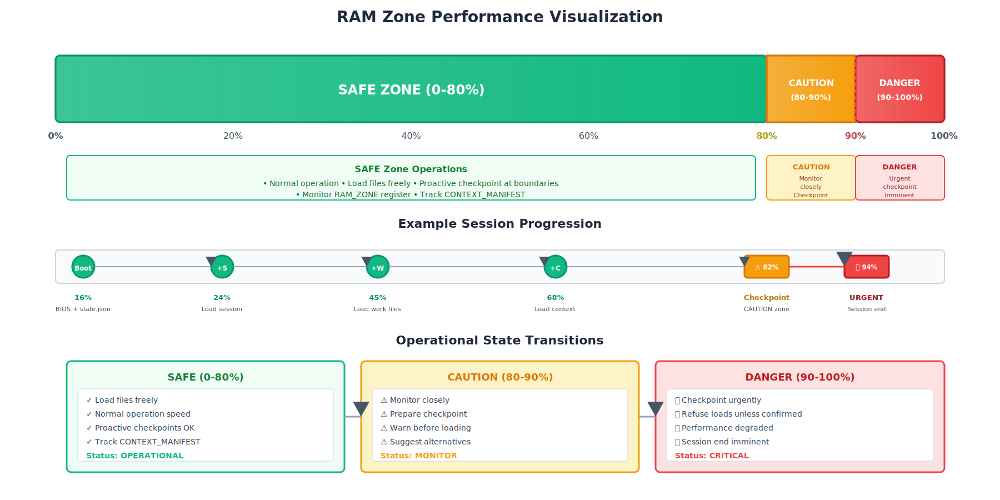
Figure 18: RAM Zone Performance Visualization—horizontal bar showing SAFE (0-80%), CAUTION (80-90%), and DANGER (90-100%) zones with color coding, checkpoint triggers, example session progression, and operational state transitions
RAM Status Reporting Protocol
Accurate RAM monitoring is critical for effective resource management. The HAL8000-Assistant system provides exact token measurements via system warnings after every tool invocation.
System Warning Format
After each tool use, the system reports precise token usage:
Why This Matters: Users rely on RAM reports for critical decisions (when to checkpoint,
whether to load more files, how much headroom remains). Estimated or guessed values can lead to
premature checkpoints or catastrophic RAM exhaustion. Only measured values are acceptable.
Selective Loading Protocol
Every file load must pass through a mandatory evaluation checklist. This protocol executes before loading any file into RAM:
Pre-Load Checklist (Execute in Order)
Check CONTEXT_MANIFEST Register
Is this file already loaded? Check the CONTEXT_MANIFEST register which tracks all currently loaded files. If already in RAM, reuse existing context instead of reloading.
Estimate Token Cost
Approximate the token cost of the file. Use file size heuristics, previous load history, or conservative estimates. Add 20% buffer for parsing overhead.
Determine which RAM_ZONE the projected usage falls into.
Evaluate RAM_ZONE Impact
If remains SAFE: Proceed with load. Update CONTEXT_MANIFEST.
If enters CAUTION: Warn user. Suggest alternatives (sub-agent delegation, summarization, defer load). Proceed only if user approves or no alternative exists.
If enters DANGER: Refuse load unless user explicitly confirms. Strongly recommend checkpoint first or alternative approach.
Selective Loading Discipline
Load ONLY files needed for current task - Not related files, not potentially useful files, not "just in case" files. Strict necessity only.
Never load speculatively - "I might need this later" is not justification. Load when needed, not before.
Persist results immediately - After computation, write results to storage for future sessions. Data stays in current RAM (append-only) but avoids re-loading sources + re-computing in future sessions.
Track all loads - Maintain accurate CONTEXT_MANIFEST register. Know what's consuming your RAM at all times.
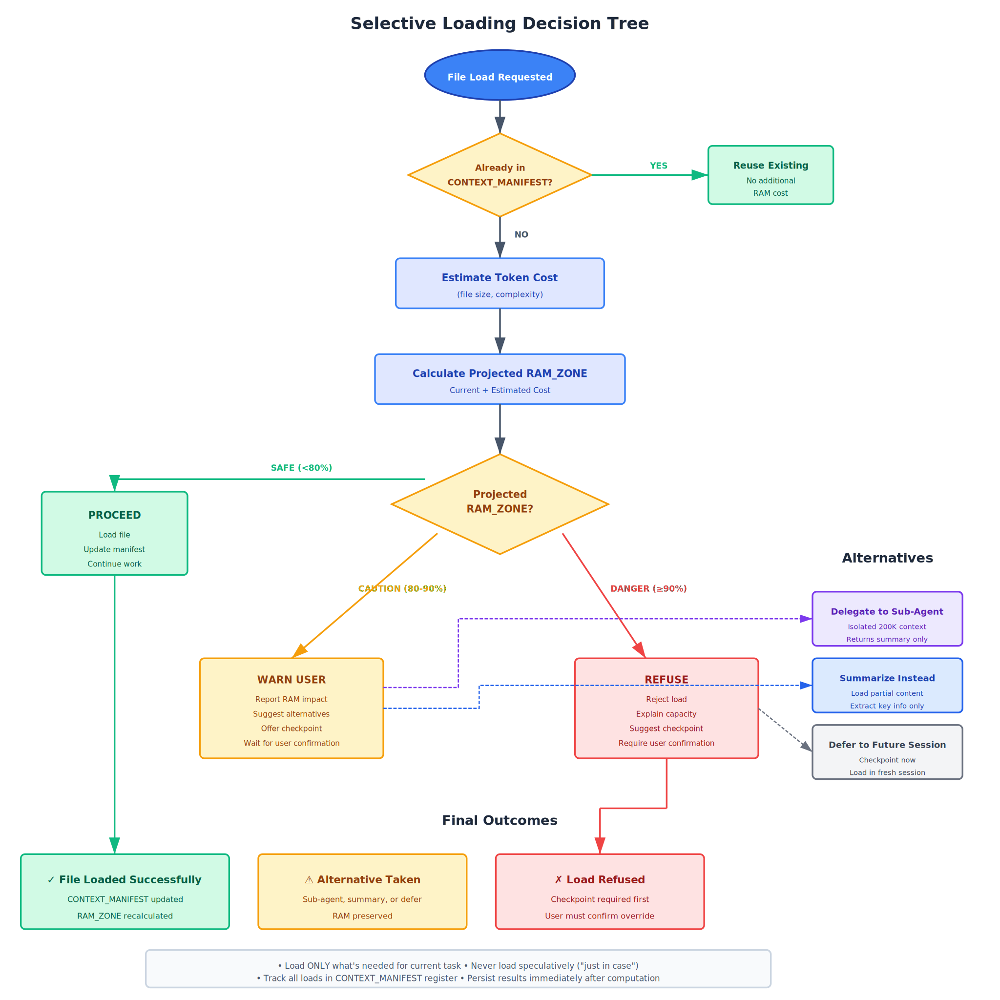
Figure 19: Selective Loading Decision Tree—complete protocol flowchart showing CONTEXT_MANIFEST check, token estimation, RAM_ZONE calculation, decision paths for SAFE/CAUTION/DANGER zones, alternative actions (delegate, summarize, defer), and final outcomes with color-coded severity
Checkpoint Triggers: When to Save State
Checkpoints preserve session state before RAM exhaustion forces termination. Proactive checkpoint triggers ensure continuity across session boundaries:
Mandatory Checkpoint Conditions
RAM_ZONE enters CAUTION (≥80%)
First priority. As soon as RAM usage crosses 80% threshold, initiate checkpoint preparation. Complete current sub-task, then checkpoint before continuing.
Major work item completed
End of significant task, feature implementation, research completion, or logical work unit. Checkpoint captures accomplishment before starting next major item.
Before context-heavy operation
Prior to loading large files, conducting research, or any operation estimated to add >15% RAM usage. Checkpoint first ensures you don't lose progress if operation exhausts RAM.
User explicitly requests
User says "save state", "checkpoint", or equivalent. Always honor explicit checkpoint requests immediately.
Checkpoint Execution
Execute checkpoint using the session-end protocol:
After checkpoint, session can continue (if RAM available) or terminate cleanly for fresh restart.
Reduce and Delegate: The Core Principle
The most powerful RAM management strategy is not loading data into RAM in the first place. The "Reduce and Delegate" principle provides four decision heuristics to avoid RAM consumption:
The Four Questions (Ask in Order)
Can I delegate this?
If task involves heavy context (research, multi-file analysis, large dataset processing), delegate to specialized sub-agent. Sub-agent uses isolated 200K RAM context, returns only essential summary.
Action: Use sub-agent. Do NOT load raw data into main session RAM.
Can I summarize this?
If data must be processed in main session, can I extract only essential information? Read, process, summarize, discard full data. Return summary (not raw data) to user or store in file.
Action: Load, extract key points, offload immediately. Keep only summary.
Can I offload this?
If computation produces large intermediate or final results, write directly to file system. Don't accumulate in RAM. File system is persistent storage - use it.
Action: Write to file, keep only pointer/reference in RAM.
Can I reuse this?
If pattern or solution will recur, create reusable component (command, library, agent). Build once, invoke many times. Avoids duplicating effort and context across sessions.
Action: Create reusable pattern, document in appropriate location.
Example: Wrong vs Right Approach
❌ WRONG: Direct Loading
User: "Research quantum computing developments"
CPU: Uses WebSearch directly
→ Loads 50K tokens of raw search results into main RAM
→ Main RAM: 60K → 110K (CAUTION zone)
→ Processes results in main session
→ Returns summary
Result: 50K+ RAM consumed for 5K of useful information
Sub-agents are HAL8000-Assistant's virtual memory system. They extend total RAM capacity through process isolation, allowing you to perform context-heavy operations without polluting main session RAM.
Architectural Model
Main Session (Limited RAM - ~200K tokens)
↓ delegate task
Sub-Agent (Fresh 200K RAM, isolated context, specialized tools)
↓ process heavy work (web research, file exploration, large analysis)
Returns clean summary (NOT raw data)
↓ result integration
Main Session (RAM += summary only, NOT full processing cost)
When to ALWAYS Delegate to Sub-Agents
Web research - Use research-synthesizer agent. Isolated web search + synthesis.
System context discovery - Use hal-context-finder agent. File system navigation + targeted loading.
Large file analysis - Any operation requiring loading multiple large files for analysis.
Multi-step tasks with >30K intermediate data - Tasks that accumulate significant temporary context.
Any operation where input >> output - Processing 50K to produce 5K result? Delegate.
When to NEVER Do Directly (if sub-agent available)
Loading raw web search results into main RAM
Navigating and loading multiple system files for exploration
Processing large datasets without summarization
Extensive exploratory research requiring many sources
Sub-Agent Benefits
Isolated 200K context - Full fresh context window, doesn't pollute main session
Automatic cleanup - Sub-agent context discarded after completion, no manual cleanup
Specialized capabilities - Each agent optimized for specific task type
Returns only essentials - Enforced summarization, no raw data dumps
Token Savings Example
Operation
Direct (Main Session)
Sub-Agent (Delegated)
Savings
Web Research (10 sources)
60K tokens
8K tokens (summary)
86% saved
File Discovery (20 files explored)
80K tokens
12K tokens (relevant files)
85% saved
Large Dataset Analysis
100K tokens
15K tokens (findings)
85% saved
Typical token savings: 60-85% via sub-agent delegation
Creating Reusable Sub-Agent Patterns
Sub-agents embody Unix philosophy: do one thing well, compose for complex workflows.
Document successful patterns - When sub-agent delegation works well, document the pattern for reuse
Build specialized agents for recurring tasks - Create new agents for frequently needed operations
Each agent = one responsibility - Single purpose, well-defined input/output
Compose agents for complex workflows - Chain multiple agents, each handling one aspect
Operational Best Practices
RAM Awareness
Check RAM_ZONE register regularly (especially after major operations)
Report RAM status to user when entering CAUTION or DANGER zones
Maintain accurate CONTEXT_MANIFEST register (all loaded files tracked)
Proactive Management
Estimate token costs before operations, not after
Checkpoint at logical boundaries (end of tasks), not reactively when RAM exhausted
Suggest sub-agent delegation when user requests context-heavy work
User Communication
Make RAM limitations visible - inform user of constraints
Explain delegation decisions - "Delegating to sub-agent to save 70% RAM"
Warn when approaching limits - "RAM at 82% (CAUTION), recommend checkpoint after this task"
Summary: RAM Management Decision Framework
When faced with any operation requiring data loading:
Estimate cost - How many tokens will this consume?
Check RAM_ZONE - What zone will I be in after loading?
Apply Reduce and Delegate - Can I delegate, summarize, offload, or reuse?
Execute with awareness - Proceed with most RAM-efficient approach
Update registers - Track what was loaded in CONTEXT_MANIFEST
Monitor continuously - Watch RAM_ZONE throughout session
Remember: In HAL8000-Assistant, RAM is append-only within a session. Every token loaded is permanent until session ends. Your effectiveness as a CPU is determined by how well you manage this scarce, critical resource.
Part IV: Reference
Complete reference for commands, agents, conventions, and components
This section documents all HAL8000-Assistant system commands as executable instructions.
Commands are stored programs that map directly to architectural operations.
Maintenance: Update when new commands added to .claude/commands/, verify examples are current.
Each command entry must include: purpose, syntax, implementation, architecture alignment, examples.
15. Command Reference
HAL8000-Assistant provides a suite of system commands that control CPU operations, manage context, maintain system health, and enable efficient session continuity. Commands are invoked using slash notation and map directly to architectural operations, following assembly language principles of explicit control and low-level visibility.
Command System Overview
Commands in HAL8000-Assistant are stored as executable instruction files in .claude/commands/ with the naming convention HAL-command-name.md. Each command file contains complete implementation specifications that the CPU (Claude instance) executes when invoked.
The command system embodies HAL8000-Assistant's core architectural principles:
Von Neumann Architecture: Commands are stored programs in unified memory space, loaded and executed by the CPU
Unix Philosophy: Each command does one thing well, composes with others, and operates on text files
Assembly Language: Direct mapping to system operations with explicit control flow and state management
Self-Modifying Code: Commands can create and modify other commands at runtime
Invocation Syntax
Commands are invoked using slash notation:
/HAL-command-name [arguments]
The CPU fetches the command definition, decodes the intent, executes the operations, and updates registers accordingly—mirroring the classical fetch-decode-execute cycle of traditional processors.
Purpose: End current session and save state for continuity after RAM wipe
Category: Session Management
Syntax:/HAL-session-end "session-description"
Arguments:
session-description (required) - Brief description of the session (e.g., "architecture-design", "unix-research")
Implementation:
This command implements the session continuity protocol by capturing current state and creating a handoff file for resuming work after context reset. It performs five critical operations:
Captures Current Context: Gathers information about active work, loaded files, key decisions, and next steps
Creates Session File: Generates timestamped markdown file in .claude/sessions/ with format YYYY-MM-DD-HHMM-description.md
Validates State Counts: Counts actual filesystem state (agents, commands, content files, indexes) to prevent drift
Updates state.json: Writes current state with validated counts and points to new session file
Logs to History: Appends entry to .claude/system.log for audit trail
Session File Structure:
# Session: YYYY-MM-DD HH:MM - [Description]
## Context
[High-level description of current work]
## Key Decisions Made
- [Important architectural or design decisions]
- [Agreements reached]
- [Approaches chosen]
## Active Work
**Current Task:** [What we're doing right now]
**Completed in This Session:**
- Task 1
- Task 2
**Next Steps:**
1. [What should happen next]
2. [Follow-up tasks]
**Blockers:** [Any issues or dependencies]
## Files in Context
[List files that were actively being worked on]
## Variables/State
- current_project: [value]
- phase: [value]
## Instructions for Resume
When resuming this session:
1. [First thing to do]
2. [What to load into context]
3. [How to continue the work]
State Validation Process:
The command includes inline filesystem validation to ensure state.json accuracy:
Rationale: Direct filesystem counting prevents manual update errors and state drift. These counts represent ground truth.
Usage Example:
/HAL-session-end architecture-design
Output:
✓ Session saved: .claude/sessions/2025-10-04-1453-architecture-design.md
✓ State validated and updated: .claude/state.json
- Agents: 4
- Content files: 22
- Indexes: 5
✓ Logged to: .claude/system.log
System ready for RAM wipe.
To resume: Start new session and say "Resume last session"
Error Handling:
Missing description: Prompts for required argument
File write failure: Reports error and suggests manual checkpoint
State validation failure: Reports count mismatches and continues with best-effort update
Architecture Notes:
Von Neumann: Session files are stored-program concept (state as data); commands can be self-modifying (creates session files that guide future execution)
Unix Philosophy: Does one thing well (session checkpointing); outputs to text files (JSON, markdown); composable (works with boot sequence)
Assembly Principles: Explicit state management (no hidden state); direct file I/O (writes to specific memory locations); low-level control (manual checkpoint triggering)
Related Components:
CLAUDE.md - BIOS boot sequence that loads state.json
.claude/state.json - Current system state pointer
.claude/sessions/ - Historical session files
.claude/system.log - Audit trail
/HAL-register-dump
Purpose: Display current CPU register state for system introspection and debugging
Category: System Introspection
Syntax:/HAL-register-dump
Arguments:
None required
Implementation:
This command provides assembly-level introspection by aggregating and displaying the CPU's virtual registers. Registers represent runtime state scattered across the system, aggregated on-demand for human-readable output.
The CPU executes this command by:
Extracting RAM State: Parses most recent system warning for token usage (Token usage: 58432/200000)
Reading state.json: Loads persistent state (active_session, variables, loaded_commands)
Evaluating Runtime State: Determines current instruction (IR), execution mode, CPU status, error state
Calculating Derived Values: Computes RAM_ZONE from usage percentage, SESSION_DURATION from SESSION_START, rate limit estimate
Formatting Output: Displays organized register categories with human-readable values
Register Categories:
Control Registers: PC (Program Counter), IR (Instruction Register), EXEC_MODE, FLOW_STATE
Debugging: Check system state when troubleshooting (shows ERROR_FLAG and ERROR_CODE)
Resource Monitoring: Monitor RAM usage during intensive operations (RAM_ZONE warnings)
Session Inspection: Understand current session state (SESSION_ID, PHASE, loaded files)
System Verification: Verify CPU operational status and health
Learning: Understand how the system works by observing live register state
Error Handling:
No errors expected (read-only operation)
Missing state.json: Reports DEGRADED mode with unknown values
Register values unavailable: Shows "null" or "unknown" for missing data
Architecture Notes:
This command implements the introspection capability fundamental to assembly-level programming. In traditional assembly, developers can inspect CPU registers directly (e.g., REGISTER DUMP or debugger commands). HAL8000-Assistant provides the same capability for the virtual CPU.
Read-Only: Does NOT modify any registers, only reads and displays current state
Snapshot Nature: Values reflect state at moment of execution
Virtual Registers: Registers are not stored in a file; command aggregates state from multiple sources on-demand
Performance Impact: Minimal (~2-3K tokens for output itself), no file I/O required
File loading operations - Affect CONTEXT_MANIFEST and RAM_USAGE registers
/HAL-system-check
Purpose: Launch system-maintenance sub-agent to perform comprehensive HAL8000-Assistant integrity audit
Category: System Health
Syntax:/HAL-system-check
Arguments:
None required
Implementation:
This command delegates comprehensive system audit to the system-maintenance specialized agent, ensuring architecture remains compliant with principles as the system grows.
When invoked, the CPU immediately launches the sub-agent (via Task tool, general-purpose type) to perform:
Load Required Context: BIOS (CLAUDE.md), architecture specs, state.json, master index
Agent launch failure: Reports error and suggests manual validation
Critical issues found: Marks status as CRITICAL and lists required actions
Warnings found: Marks status with ⚠ and provides improvement recommendations
Success Criteria:
Audit completes without errors
All components assessed for integrity
Clear, actionable report generated
System health status determined (HEALTHY | WARNINGS | CRITICAL)
Recommendations provided for any issues
Architecture Notes:
Delegation Pattern: Context-heavy audit offloaded to sub-agent with fresh 200K RAM
Unix Philosophy: Does one thing well (system audit); delegates specialized work (to agent)
RAM Optimization: Main session cost: ~5K tokens vs ~150K for direct implementation
Related Components:
.claude/agents/system-maintenance.md - Agent definition with audit checklist
.claude/indexes/master.json - Validated during check
.claude/state.json - Validated during check
CLAUDE.md - Principle compliance reference
/HAL-context-find
Purpose: Find and load system context without consuming main session RAM
Category: Context Discovery
Syntax:/HAL-context-find query
Arguments:
query (required) - What context you're looking for (e.g., "register architecture", "HAL-session-end command", "von Neumann research")
Implementation:
This command launches the hal-context-finder specialized agent to discover and load HAL8000-Assistant system context efficiently, preserving main session RAM by delegating navigation and file loading to an isolated sub-agent context.
The command executes in four stages:
Launch Specialized Agent: Spawns hal-context-finder sub-agent with fresh 200K RAM, passes user query
Efficient Navigation: Agent classifies query type (Architecture, Command, Research, Session, Data), uses built-in directory priority mappings for smart targeting, focuses on 2-3 most likely directories
Complete Content Loading: Agent reads complete files (not just paths), packages content with clear source attribution, includes related context when relevant
RAM Preservation: Main session RAM += summary only (not full navigation cost), typically saves 60-80% tokens, agent context automatically garbage collected
Sub-Agent Protocol: Extends total RAM capacity through process isolation; agent has fresh 200K context, returns only summary; input (query) >> output (summary)
.claude/indexes/master.json - System inventory for discovery
CLAUDE.md - Defines sub-agent protocol
/HAL-index-update
Purpose: Update hierarchical file system indexes and library index with metadata for efficient discovery
Category: Maintenance
Syntax:/HAL-index-update [path]
Arguments:
path (optional) - Directory to index (default: entire system from root)
Implementation:
This command updates both the hierarchical file system indexes and the library index, enabling efficient discovery of relevant files and libraries without loading the entire file system into RAM.
The indexing process operates in two parallel tracks:
Track 1: File System Indexing
Identify Target Directories: Index all major directories (no path specified) or specific directory (path specified)
Discover Files per Directory: Use Glob to find all files (*.md, *.json, etc.)
Extract Metadata: For each file, extract type, category, topics (from name/headers), summary (first sentence), size estimate
Update Directory Index: Create/update .claude/indexes/[directory-name].json with file entries and directory statistics
Update Master Index: Update .claude/indexes/master.json with directory entry pointing to directory index
Track 2: Library Indexing
Index Internal Libraries: Parse frontmatter from .claude/libraries/internal/ files for metadata (title, description, keywords, category, dependencies)
Index External Libraries: Scan content from .claude/libraries/external/ files to extract metadata (title from H1, description from first paragraph, keywords from headings)
/HAL-index-update # Index entire system
/HAL-index-update data/research # Index only research directory
/HAL-index-update .claude/commands # Index only commands directory
JSON write failure: Reports error and suggests manual verification
Integration with Discovery System:
The hierarchical index enables Layer 3: Metadata Discovery in the I/O System with infinite scalability:
Load master index (~500 tokens for 100 directories)
Identify relevant directories by primary topics
Load directory index (~2K tokens per directory)
Search directory index by topic/keyword (in RAM, no I/O)
Identify relevant files with size estimates
Calculate RAM cost before loading
Load selectively based on RAM budget
Total RAM cost for discovery: ~2.5K tokens (master + one directory), regardless of total file system size
Architecture Notes:
Hierarchical Design: Master index + directory indexes = infinite scalability
Dual Indexing: File system (hierarchical) + libraries (flat) for different use cases
Metadata Extraction: Two modes (frontmatter parsing for internal, content scanning for external libraries)
Unix Philosophy: Does one thing well (indexing); composable with discovery commands
Related Components:
.claude/indexes/master.json - Master file system index
.claude/indexes/*.json - Per-directory indexes
.claude/libraries/index.json - Library index
/HAL-context-find - Uses indexes for discovery
data/architecture/hal8000-io-system.md - I/O system design
/HAL-library-update
Purpose: Update external libraries from source repositories (package manager)
Category: Maintenance
Syntax:/HAL-library-update library-name
Arguments:
library-name (required) - Name of the external library to update (must exist in registry)
Implementation:
This command is the HAL8000-Assistant package manager—it manages the lifecycle of external library collections by checking for updates, downloading new versions, and maintaining the library registry.
The update process executes in nine steps:
Validate Library Exists: Check if library exists in .claude/libraries/external/README.md registry; extract metadata (source URL, current version, last updated, file count)
Check Source for Updates: For GitHub libraries, clone repository to temp directory, get latest commit hash/date, compare to current version, count file changes
Report Update Status: If up-to-date, confirm current version; if updates available, show changes (+N files, -N files, ~N modified)
User Confirmation: If updates found, ask user to confirm update; if declined, exit gracefully
Backup Current Version: Create .claude/libraries/external/.[library-name].backup/ with current library (rollback capability)
Download and Install New Version: Download new version to temp, remove old library directory, copy new version from temp, verify file count
Update Registry: Edit .claude/libraries/external/README.md with new version, file count, last updated date
Reindex Library: Automatically invoke /HAL-index-update to update .claude/libraries/index.json
Report Results: Display before/after comparison, list new/removed/modified files, show new patterns discovered
Usage Examples:
/HAL-library-update fabric-patterns # Update Fabric patterns from GitHub
/HAL-library-update --list # List all external libraries
/HAL-library-update --check-all # Check all libraries for updates (no install)
Update Status Output (Up-to-Date):
✓ fabric-patterns is up-to-date
Current version: main-20251005
Last updated: 2025-10-05
Files: 292
Update Status Output (Updates Available):
⚡ Updates available for fabric-patterns
Current: main-20251005 (292 files)
Latest: main-20251206 (305 files)
Changes: +15 files, -2 files, ~5 modified
Proceed with update? (y/n)
Completion Output:
✅ fabric-patterns updated successfully
Changes:
Before: 292 files (284K tokens)
After: 305 files (298K tokens)
Added: 15 new patterns
Removed: 2 deprecated patterns
Modified: 5 patterns updated
New patterns discovered:
- analyze_quantum_paper
- create_research_proposal
- extract_legal_arguments
...
Library reindexed. Use /HAL-context-find to discover new patterns.
Supported Library Sources:
GitHub Repositories: Public repos with stable directory structure; update detection via commit comparison; uses git ls-remote to check for updates without cloning
Future Sources: Direct URLs (ZIP files), local directories, Git repositories (non-GitHub), package registries
Error Handling:
Library not in registry: Error message with suggestion to check .claude/libraries/external/README.md and list available libraries
Source unavailable: Error with connection warning, suggests trying later or checking URL in registry
Download failed: Automatic rollback from backup, report rollback success
Index update failed: Warning that library updated but index may be stale, suggests manual /HAL-index-update
RAM Management:
This command delegates to sub-agent (general-purpose) to handle:
All git operations
All file comparisons
All metadata extraction
All error handling
Total RAM cost: ~5-10K tokens (sub-agent summary only, not full processing context)
Package Manager Operations:
This command is the update operation of HAL8000-Assistant's package manager. Future expansion:
/HAL-library-install [url] [name] [category] # Install new external library
/HAL-library-remove [name] # Remove external library
/HAL-library-list # List all libraries with status
/HAL-library-info [name] # Show library details
/HAL-library-search [keyword] # Search across all libraries
Current status: Only update operation implemented. Others can be added as system matures.
When to Run:
Regular Schedule:
Monthly for active libraries (per registry Refresh Schedule)
Before starting major research/work (ensure latest patterns)
When source repository announces major updates
Triggered By:
User manual check
System notices library is outdated (future: automatic check)
User requests specific pattern not found (might be in new version)
status - Show all available MCP servers and their current state
enable [server_name] - Enable specified MCP server
disable [server_name] - Disable specified MCP server
Implementation:
MCP servers are Extended I/O interfaces (tools). Each enabled server costs ~500-1000 tokens on session boot. This command provides dynamic control by executing the Python script .claude/tools/mcp/control.py with provided arguments.
Execution:
python3 ".claude/tools/mcp/control.py" $1 $2
Status Operation
Syntax:/HAL-mcp-control status
Shows all available MCP servers, their current state (enabled/disabled), dependencies, and RAM cost.
Enable Operation
Syntax:/HAL-mcp-control enable <server_name>
What happens when enabling a server:
Validates server exists in registry
Checks required API keys in .env files
Adds server to .claude/settings.local.json (enabledMcpjsonServers)
Adds server definition to .mcp.json
Sets enableAllProjectMcpServers: false for selective control
Prompts for session restart
Disable Operation
Syntax:/HAL-mcp-control disable <server_name>
What happens when disabling a server:
Warns if disabling required server
Removes from enabledMcpjsonServers array
Removes definition from .mcp.json
Prompts for session restart
Note: Disabling required servers (like omnisearch) may break agents that depend on them.
Available Servers:
Server registry maintained in .claude/tools/mcp/registry.json. Current servers:
omnisearch (Required)
Purpose: Multi-provider web search + content extraction
API Keys: BRAVE_API_KEY, FIRECRAWL_API_KEY (in .env)
Used By: research-synthesizer, claude-code-validator agents
Enable/disable specialized servers per session (replicate, context7)
Check status before major work: /HAL-mcp-control status
Workflow Examples:
# Research Session
/HAL-mcp-control enable omnisearch
# Restart session, do research work
# AI/ML Session
/HAL-mcp-control enable replicate
# Restart session, work with AI models
/HAL-mcp-control disable replicate
# Restart session
# Vector Database Work
/HAL-mcp-control enable context7
# Restart session, work with embeddings
/HAL-mcp-control disable context7
Error Handling:
Server won't enable: Missing API keys - check .env.<server_name> file, add required keys
Changes not applying: Session restart needed - restart Claude Code session after enable/disable
Required server disabled: Accidentally disabled omnisearch - re-enable and restart
Invalid server name: Typo or server not in registry - run /HAL-mcp-control status to see available servers
Architecture Notes:
Unix Philosophy: Does one thing well (manages MCP loading); separation of concerns (command modifies config, agents specify MCP needs)
MCPs as Extended I/O: MCPs are tools in the I/O system architecture
status - Display progress dashboard (default if no arguments)
export - Export final document (all sections must be complete)
diagrams - List all visual placeholders
complete <section-id> - Mark section as complete
Implementation:
This command manages the HAL8000-Assistant Reference Manual development workflow across multiple sessions, enabling intelligent context loading and progress tracking.
Mode 1: Status Dashboard (No Arguments)
Syntax:/HAL-refman or /HAL-refman status
Action:
Load data/reference-manual/index.html
Parse all section metadata attributes
Display progress dashboard
Suggest next priority section
Output:
📖 HAL8000-Assistant Reference Manual - Development Status
Progress:
├─ Total Sections: 31
├─ Complete: 8 ✅
├─ In Progress: 1 🔄
├─ Draft: 22 📝
└─ Estimated Completion: 26%
Current Section: architecture-overview
Last Updated: 2025-10-08T12:00:00Z
Next Priority Sections:
1. memory-architecture - Memory Architecture (Priority: 1, Est: 8K tokens)
2. bus-system - Bus System (Priority: 2, Est: 6K tokens)
💡 Recommended: /HAL-refman next
or: /HAL-refman memory-architecture
Main session: Only load data/reference-manual/index.html for metadata parsing (~2K tokens)
Sub-agent: Loads all source files in isolated 200K context
Integration: Replace section HTML with agent output (~1K tokens)
Total main session cost: ~3K tokens per section (vs. ~10K direct approach)
RAM savings: ~70% per section, enables completing all 31 sections in one session
Output:
📝 HAL-refman: Working on Memory Architecture
Section ID: memory-architecture
Status: DRAFT → IN_PROGRESS
Priority: 1
Context Strategy:
├─ Main session: Lightweight (parse metadata only)
├─ Sub-agent: documentation-writer (isolated 200K context)
└─ RAM optimization: ~95% savings vs. direct approach
Writing Guidelines:
├─ Target: Explain memory hierarchy and organization
├─ Audience: All three levels
├─ Key Points: BIOS, RAM, Storage, Indexes
├─ Tone: Educational, layered complexity
└─ Visuals: memory-hierarchy-diagram, storage-organization
Dependencies:
├─ system-architecture ✅ Complete
└─ architecture-overview ✅ Complete
🚀 Launching documentation-writer agent...
(This will take a moment - agent has isolated 200K context)
[Agent completes work]
✅ Section complete and integrated!
Progress: 9/31 sections (29%)
💡 Next: /HAL-refman next
Mode 3: Auto-Select Next (Keyword: "next")
Syntax:/HAL-refman next
Action:
Parse all sections
Filter: status="draft" AND priority is lowest number
Select first match
Execute Mode 2 with that section-id
Fallback:
If no draft sections: Check for "in_progress" sections, offer to resume
If all complete: Display congratulations, suggest "export"
Mode 4: Export Final Document (Keyword: "export")
Syntax:/HAL-refman export
Action:
Load data/reference-manual/index.html
Check: All sections status="complete"?
If incomplete: Display list of remaining sections, abort
If complete: Strip all data-* attributes, remove all .meta-guidance divs, validate internal links, generate data/reference-manual/HAL8000-Assistant-Reference-Manual-v[version].html
.claude/agents/documentation-writer.md - Sub-agent for content generation (if exists)
/HAL-CC-check
Purpose: Validate HAL8000-Assistant commands and agents for Claude Code compatibility
Category: System Health
Syntax:/HAL-CC-check
Arguments:
None required
Implementation:
This command verifies that all HAL8000-Assistant CPU-level components (commands and agents) are compatible with the external Claude Code architecture by invoking the claude-code-validator specialized agent.
The validation process executes in four steps:
Announce Check: Inform user that Claude Code compatibility check is starting
Invoke Validator Agent: Use Task tool to launch claude-code-validator agent with prompt to:
Fetch current Claude Code documentation from docs.claude.com (start with claude_code_docs_map.md)
Extract available tools, deprecated features, and API changes
Von Neumann: CPU instruction validation against external architecture
Unix: Does one thing well (external compatibility only)
Assembly: Verify opcodes match CPU capabilities
Delegation Pattern: Context-heavy validation offloaded to sub-agent
Related Commands:
/HAL-system-check - Validates internal HAL8000-Assistant structure and principles
/HAL-register-dump - Shows current CPU state
/HAL-session-end - Saves state before RAM wipe
Related Agents:
claude-code-validator - Performs the validation (invoked by this command)
system-maintenance - Validates internal structure
Creating Custom Commands
HAL8000-Assistant's self-modifying code capability allows commands to create and modify other commands at runtime. This section explains how to develop custom commands that integrate seamlessly with the architecture.
Command File Structure
Commands are stored as markdown files in .claude/commands/ with the naming convention:
HAL-command-name.md
Required Frontmatter
Each command file should begin with YAML frontmatter containing metadata:
---
name: HAL-command-name
description: Brief description of what the command does
arguments: "[arg1] [arg2]" (optional)
allowed-tools: Bash, Read, Write, Edit (optional - list of tools command can use)
---
Standard Sections
A well-structured command file includes:
Purpose: Clear one-sentence statement of the command's function
Category: Classification (Session Management, System Health, Context Discovery, Maintenance, Integration)
Usage: Syntax examples and argument descriptions
Implementation: Step-by-step execution logic (what the CPU should do when the command is invoked)
Error Handling: Expected failure modes and recovery procedures
Architecture Alignment: How the command embodies HAL8000-Assistant principles (Von Neumann, Unix, Assembly)
Related Components: Files, commands, agents that interact with this command
Implementation Section Guidelines
The Implementation section should provide clear, executable instructions for the CPU:
Use numbered steps for sequential operations
Include code examples where appropriate (bash scripts, JSON structures, etc.)
Specify exact file paths and data structures
Define expected outputs and state changes
Consider RAM management (when to delegate to sub-agents)
Arguments: Use clear, descriptive names (e.g., session-description, library-name)
File references: Always use absolute paths in examples
RAM Management Guidelines
Commands should be RAM-conscious:
Lightweight commands (<20 file operations): Execute directly in main session
Context-heavy commands (>20 file operations): Delegate to sub-agent, return summary only
Always estimate: Document estimated RAM cost in implementation notes
Follow "Reduce and Delegate": Prefer sub-agent delegation for operations that load significant context
Integration with System
After creating a command:
Save file to .claude/commands/HAL-command-name.md
Run /HAL-index-update .claude/commands to update command index
Update .claude/state.json to increment commands_count (or let HAL-session-end do it automatically)
Test command invocation via slash notation: /HAL-command-name
Document command in relevant architecture files if it introduces new patterns
Example Command Template
---
name: HAL-example-command
description: Example command demonstrating standard structure
arguments: "[required-arg] [optional-arg]"
allowed-tools: Read, Write, Bash
---
# HAL Example Command
**Purpose:** Brief one-sentence description
**Category:** [Category Name]
## Usage
```bash
/HAL-example-command required-arg [optional-arg]
```
**Arguments:**
- `required-arg` (required) - Description
- `optional-arg` (optional) - Description, default: value
## What This Command Does
1. Step 1 description
2. Step 2 description
3. Step 3 description
## Implementation
### Step 1: [Action Name]
[Detailed instructions, code examples, file paths]
### Step 2: [Action Name]
[Detailed instructions]
### Step 3: [Action Name]
[Detailed instructions]
## Usage Examples
```bash
/HAL-example-command value1
/HAL-example-command value1 value2
```
## Expected Output
```
[Sample output format]
```
## Error Handling
- **Error case 1:** Description and recovery
- **Error case 2:** Description and recovery
## Architecture Alignment
- **Von Neumann:** How this embodies stored-program, self-modification, etc.
- **Unix Philosophy:** Single responsibility, composability, text-based
- **Assembly Principles:** Explicit control, low-level visibility
## Related Components
- Related file 1
- Related file 2
- Related command
## Notes
- Additional considerations
- Performance characteristics
- Future improvements
Command Usage Best Practices
When to Invoke Commands
Session boundaries: Always run /HAL-session-end before RAM wipe to ensure continuity
System validation: Run /HAL-system-check after major architectural changes or before new project phases
Context discovery: Use /HAL-context-find instead of manual file navigation to save 60-85% RAM
Maintenance windows: Run /HAL-index-update after creating 3+ new files or changing file organization
Library updates: Check /HAL-library-update monthly for active libraries or before major research work
Debugging: Use /HAL-register-dump to inspect system state when troubleshooting
Command Composition Patterns
Commands are designed to compose with each other:
# After updating libraries, reindex them
/HAL-library-update fabric-patterns
# (HAL-index-update is invoked automatically)
# After major file changes, validate system health
/HAL-index-update
/HAL-system-check
# Before session end, check system state
/HAL-register-dump
/HAL-session-end architecture-work
# Periodic maintenance sequence
/HAL-CC-check # Validate external compatibility
/HAL-system-check # Validate internal structure
/HAL-index-update # Refresh all indexes
RAM Optimization Tips
Monitor RAM_ZONE: Use /HAL-register-dump to check RAM usage; checkpoint when entering CAUTION zone (80%+)
Prefer delegation: Commands that delegate to sub-agents (like /HAL-context-find) save significant RAM
MCP control: Use /HAL-mcp-control to enable only needed servers, saving 500-1000 tokens per disabled server at boot
Selective indexing: Update specific directories (/HAL-index-update data/research) instead of entire system when possible
Error Recovery Strategies
Command failure: Check /HAL-register-dump for ERROR_FLAG and ERROR_CODE to diagnose
Corrupted state: Run /HAL-system-check to identify structural issues
Compatibility issues: Run /HAL-CC-check to verify external Claude Code compatibility
Session continuity broken: Check .claude/state.json and .claude/sessions/ for last checkpoint
Documentation Workflow
For reference manual development:
# Check progress
/HAL-refman status
# Work on next priority section
/HAL-refman next
# Work on specific section
/HAL-refman memory-architecture
# List all diagram placeholders
/HAL-refman diagrams
# Export final document (when all sections complete)
/HAL-refman export
Command Chaining Considerations
While commands can be invoked sequentially, be aware of:
Session restart requirements:/HAL-mcp-control changes require session restart to take effect
Auto-invocation: Some commands auto-invoke others (e.g., /HAL-library-update calls /HAL-index-update)
State dependencies: Some commands depend on state established by others (e.g., /HAL-refman export requires all sections complete)
RAM accumulation: Each command adds to RAM; monitor with /HAL-register-dump and checkpoint as needed
Integration with Boot Sequence
Commands integrate with the BIOS boot sequence defined in CLAUDE.md:
Boot loads: BIOS (CLAUDE.md) and state.json automatically
Session resume: User says "resume" to load active_session file noted in state.json
Command discovery: Use /HAL-context-find to load command definitions on-demand
State persistence:/HAL-session-end ensures next boot has continuity
This section documents all HAL8000-Assistant sub-agents as architectural components extending effective RAM capacity.
Agents are virtual memory - isolated 200K contexts that process heavy tasks and return summaries.
Maintenance: Update when new agents added to .claude/agents/, verify RAM savings metrics remain accurate.
Each agent entry must include: purpose, tools, I/O specification, RAM savings, invocation examples.
16. Agent Reference
16.1 Overview
In the HAL8000-Assistant architecture, sub-agents are virtual memory. They extend the system's
effective RAM capacity by processing context-heavy operations in isolated 200,000-token contexts,
then returning only essential summaries to the main session.
Traditional approach: Load raw data → Process in main RAM → Main RAM bloated with intermediate results
Agent approach: Delegate to sub-agent → Agent processes in isolated context → Returns clean summary → Main RAM += summary only
RAM Savings: Sub-agents typically save 60-90% of context consumption compared to
direct operations. A web research task that would consume 150K tokens of main RAM instead consumes
only 5-15K tokens when delegated to the research-synthesizer agent.
16.2 Agent Architecture
16.2.1 The Sub-Agent Pattern
Sub-agents implement a process isolation pattern analogous to virtual memory paging:
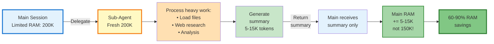
Sub-Agent Pattern: Process isolation for RAM efficiency - sub-agents handle heavy work in isolated context and return only concise summaries
16.2.2 Delegation Workflow
Detection: CPU recognizes context-heavy operation
Selection: Choose appropriate agent for task type
Invocation: Launch agent via slash command or Task tool
Execution: Agent operates in isolated 200K context
Return: Agent provides structured summary
Integration: Main session incorporates summary (minimal RAM cost)
Cleanup: Agent context automatically discarded
16.2.3 Core Principle: Return Summaries, Not Raw Data
Agents MUST follow this protocol:
Anti-Pattern (Wrong)
Correct Pattern
Return all search results
Return structured synthesis
Return full file contents
Return file + concise summary
Return intermediate calculations
Return final conclusions
Return verbose explanations
Return actionable insights
16.2.4 Output Volatility Constraint
⚠️ Critical Architectural Constraint: Sub-agent outputs are returned to main session RAM and are volatile.
Understanding output volatility is essential for correct sub-agent usage:
Volatility Lifecycle
Sub-agent completes → Returns results to main session
Results exist in current session RAM only → Not persisted automatically
Session boundary (RAM wipe) → All sub-agent output permanently lost
Results must be fully processed and persisted to files BEFORE session-end
This is not a bug - it's architectural: RAM is volatile by design. Session boundaries
are garbage collection events that wipe all non-persisted data, including sub-agent results.
Operational Implications
Complete sub-agent work fully within session - Process output, extract data, persist to files before session ends
Don't session-end with unprocessed results - If sub-agent returned data you still need, persist it first
Plan sub-agent work as atomic units - Each sub-agent task should complete (including persistence) before session boundary
Example Workflow
✓ CORRECT:
1. Launch research-synthesizer for topic X
2. Agent returns structured research report
3. Extract key findings, write to data/research/topic-x.md
4. Use findings in current work
5. Session-end when ready → Data safe in file system
✗ WRONG:
1. Launch research-synthesizer for topic X
2. Agent returns structured research report
3. Read report, understand findings
4. Session-end without persisting report
5. Next session: Report lost forever, must re-research
16.3 Available Agents
16.3.1 research-synthesizer
Location:.claude/agents/research-synthesizer.md
Purpose
Conduct comprehensive web research and return structured summaries
Any web research task, competitive analysis, technology investigation, best practices research
Example Invocations:
User: "Research the latest developments in vector databases"
CPU: [Launches research-synthesizer agent]
Agent: [Searches web, analyzes sources, synthesizes findings]
Agent Returns: 8K token structured report
Main RAM: +8K (not +120K of raw search results)
User: "What are best practices for context window management in LLM applications?"
CPU: [Launches research-synthesizer agent]
Agent: [Multi-source research across documentation, papers, blogs]
Agent Returns: Structured analysis with actionable recommendations
Main RAM: Minimal increase, maximum insight
Invocation Pattern:
Task tool:
task: "Research [topic]"
agent: "research-synthesizer"
Or via custom slash command if defined.
16.3.2 hal-context-finder
Location:.claude/agents/hal-context-finder.md
Purpose
Discover and load system files without consuming main session RAM
Tools
File system navigation (ls, find), Grep, Read, file operations
Input
Search query: file name pattern, content keyword, architectural concept
Output Format
Complete file contents (requested files loaded in full) Context: What was requested Locations: File paths and roles Summary: Key points from each file Related: Other potentially relevant files
RAM Savings
60-85% vs manual navigation and loading
When to Use
Finding system files, architecture discovery, context acquisition, "where is X?" questions
/HAL-context-find "register architecture"
Agent:
- Searches architecture docs and command files
- Locates relevant sections in CLAUDE.md, system-design.md
- Returns complete sections + synthesis
Main RAM: Essential content only, not entire discovery process
Invocation Pattern:
Slash command (preferred):
/HAL-context-find "search query"
Task tool:
task: "Find files related to [topic]"
agent: "hal-context-finder"
16.3.3 general-purpose (Built-in Claude Code Agent)
Type: Built-in Claude Code agent type (not a HAL8000-Assistant file)
Location: Provided by Claude Code platform, not stored in .claude/agents/
Note: Unlike HAL8000-Assistant's custom agents, general-purpose is a built-in agent type
provided by the Claude Code platform. HAL8000-Assistant uses it as a base for custom behaviors (like documentation-writer)
by providing specialized instructions in the Task tool prompt.
Purpose
Handle custom context-heavy tasks not covered by specialized agents
Tools
All available tools (file operations, web access, code execution, etc.)
Input
Task description with specific goals and constraints (embedded in prompt)
Output
Task-specific results (format varies by task)
RAM Savings
50-80% depending on task complexity
When to Use
Multi-step analysis, large file processing, custom workflows, one-off complex tasks
Example Invocations:
User: "Analyze all markdown files in data/ and create a topic index"
CPU: [Launches general-purpose agent]
Agent: [Reads files, extracts topics, builds index]
Agent Returns: Completed index file + summary of findings
Main RAM: Result only, not all intermediate processing
User: "Compare the architecture documentation with actual implementation to find inconsistencies"
CPU: [Launches general-purpose agent]
Agent: [Loads docs, loads code, performs comparison]
Agent Returns: Inconsistency report with specific examples
Main RAM: Report only, not all source materials
Audit HAL8000-Assistant system integrity, validate structure, identify issues
Tools
File system operations, Grep, validation tools, Read
Input
System check request (optional: specific subsystem focus)
Output Format
System Health Report:
- Core files status
- Structural integrity
- Missing components
- Recommendations
RAM Savings
70-85% vs manual system traversal
When to Use
System health checks, post-modification validation, troubleshooting, periodic audits
Example Invocations:
User: "Run a system health check"
CPU: [Launches system-maintenance agent]
Agent: [Validates BIOS, state.json, commands, indexes, structure]
Agent Returns: Health report with any issues flagged
Main RAM: Report only, not all checked files
Invocation Pattern:
Task tool:
task: "Perform system health check"
agent: "system-maintenance"
16.3.5 claude-code-validator
Location:.claude/agents/claude-code-validator.md
Purpose
Validate HAL8000-Assistant commands and agents against official Claude Code documentation
Detecting deprecated tools, validating new commands, system updates, compatibility audits
Example Invocations:
User: "Check if any of our commands use deprecated tools"
CPU: [Launches claude-code-validator agent]
Agent: [Fetches latest Claude Code docs, compares against our commands]
Agent Returns: Report listing deprecated usage with migration paths
Main RAM: Report only, not full documentation
Invocation Pattern:
Task tool:
task: "Validate [command/agent name] against Claude Code documentation"
agent: "claude-code-validator"
16.3.6 documentation-writer
Location:.claude/agents/documentation-writer.md
Purpose
Write high-quality technical documentation with accuracy, structure, and completeness
Sources: Files to analyze Format: html, markdown, or text Doc Type: reference, guide, specification, tutorial, or overview Guidelines: TARGET, AUDIENCE, KEY_POINTS, TONE, STRUCTURE, VISUALS
Output Format
Complete formatted documentation (HTML/Markdown) with:
- Layered structure (multiple audiences)
- Visual placeholders (never actual images)
- Cross-references and navigation
- Technical precision and accuracy
RAM Savings
70-85% vs loading sources and writing in main session
When to Use
Writing reference manual sections, command docs, API docs, architecture specs, user guides, tutorials
Example Invocations:
User: "Write the RAM management section for the reference manual"
CPU: [Launches documentation-writer agent with HAL-refman command]
Agent: [Reads CLAUDE.md Resource Management Protocol, writes structured HTML]
Agent Returns: Complete section HTML (15K tokens)
Main RAM: Section content only, not source files + drafting process
User: "Document the HAL-system-check command"
CPU: [Launches documentation-writer agent]
Agent: [Reads .claude/commands/HAL-system-check.md, creates reference doc]
Agent Returns: Formatted command reference
Main RAM: Final doc only
Invocation Pattern:
Task tool:
task: "Write [doc_type] documentation for [target]"
agent: "general-purpose" (with documentation-writer instructions)
Or via /HAL-refman command for reference manual sections
Documentation Quality Standards: The documentation-writer agent follows HAL8000-Assistant's
technical documentation principles: accuracy over engagement, structure over narrative, completeness
over brevity. It supports multiple audience layers, creates visual placeholders (never generates actual
images), and ensures cross-references and proper navigation structure.
16.4 Agent Invocation Patterns
16.4.1 Via Slash Commands
Some agents have dedicated slash commands for convenience:
Slash commands provide ergonomic interfaces to commonly-used agents.
16.4.2 Via Task Tool
All agents can be invoked via the Task tool:
Task tool parameters:
task: "Detailed description of what needs to be done"
agent: "agent-name" # From .claude/agents/[agent-name].md
Example:
Task:
task: "Research best practices for prompt engineering in 2025"
agent: "research-synthesizer"
16.4.3 Parallel Agent Launches
Independent research tasks can run in parallel:
User: "Research vector databases AND research graph databases"
CPU launches two research-synthesizer agents in parallel:
Agent 1: Researching vector databases
Agent 2: Researching graph databases
Both return summaries → Main session combines results
RAM savings: Massive vs sequential loading and processing
16.4.4 Error Handling
Agent invocation errors:
Agent not found: Verify agent exists in .claude/agents/
Insufficient task description: Provide more specific instructions
Agent timeout: Task may be too complex, consider breaking into subtasks
Empty results: Agent found no relevant information, refine search query
Agents should report errors clearly and suggest recovery actions.
16.5 Agent Development
16.5.1 Agent File Structure
⚠️ No Official Claude Code Specification Available
As of 2025-10, Anthropic has not published official documentation for Claude Code custom agent file formats. The structure described here is the HAL8000-Assistant working pattern - a convention that successfully operates in production. This represents emergent best practices rather than official requirements.
HAL8000-Assistant Agent File Pattern:
Agents are markdown files stored in .claude/agents/[agent-name].md following this proven structure:
Basic Structure
# [Agent Name] Agent
**Purpose:** [Single clear sentence describing what this agent does]
**Agent Type:** Specialized sub-agent for [category] (e.g., context-isolated research, system maintenance)
**Context Window:** Isolated context (separate from main session)
---
## Capabilities
### What This Agent Does
[List of specific capabilities]
### What This Agent Does NOT Do
[Explicit boundaries - prevents scope creep]
---
## Input Parameters
[If agent expects structured input, define parameters clearly]
Example:
- query (required): Search query or task description
- format (optional): Output format preference
- constraints (optional): Specific limitations
---
## Output Format
[CRITICAL: Define structured output specification]
The agent MUST return:
- Summary: [Brief overview]
- Key Points: [Actionable insights]
- [Additional structured sections as needed]
The agent MUST NOT return:
- Raw search results
- Unprocessed file contents
- Verbose explanations without synthesis
---
## Processing Workflow
### Step 1: [Phase Name]
[Detailed instructions for first phase]
### Step 2: [Phase Name]
[Detailed instructions for second phase]
### Step N: Quality Checks
[Verification steps before returning output]
---
## Usage Examples
[Concrete examples of agent invocation and expected output]
---
## Integration with HAL8000-Assistant
[How this agent fits into the system architecture]
---
## Design Principles
[Architectural alignment - Unix philosophy, RAM management, etc.]
---
## Agent Metadata
**Version:** [version number]
**Created:** [date]
**Status:** [Active|Beta|Deprecated]
**Category:** [Content Generation|Research|Maintenance|etc.]
**RAM Impact:** [Zero|Low|Medium - with explanation]
**Dependencies:** [Required tools or files]
---
## Tools Available
[List of tools the agent can use, with justification for each]
**NOT Available (Sub-Agent Restrictions):**
- Task: Sub-agents cannot spawn nested sub-agents
- Tools that require interactive input
- [Other limitations]
---
## Execution Notes
[Operational details about how this agent runs]
Key Sections Explained
Section
Purpose
Required?
Title & Purpose
Clear identity statement at the top
✅ Required
Capabilities (Do/Don't)
Define scope and boundaries explicitly
✅ Required
Input Parameters
Structured input specification if needed
Conditional
Output Format
CRITICAL: Defines return structure
✅ Required
Processing Workflow
Step-by-step operating instructions
✅ Required
Usage Examples
Demonstrates invocation patterns
✅ Recommended
HAL8000-Assistant Integration
How agent fits system architecture
✅ Recommended
Agent Metadata
Tracking and categorization info
Optional
Tools Available
Clarifies agent's tool access
✅ Recommended
File Format Notes
Pure Markdown: No YAML frontmatter required (HAL8000-Assistant pattern)
Human-Readable: Files are documentation AND specification
Self-Contained: Complete instructions within single file
No Special Parsing: Agent content read as natural language instructions
How Agents Are Invoked
Agent files are loaded and interpreted by Claude Code when invoked via the Task tool:
Task(
subagent_type="general-purpose", # Built-in agent type
description="[task description]",
prompt="""[Agent instructions from file OR embedded instructions]"""
)
Two invocation patterns observed:
File-based: Agent file loaded by reference (name matches file in .claude/agents/)
Prompt-embedded: Agent instructions provided directly in Task prompt (used for documentation-writer)
Reality Check: Since Claude Code lacks official documentation, HAL8000-Assistant's agent structure
represents a working implementation validated through production use. The pattern emphasizes clarity,
explicit boundaries, structured outputs, and architectural alignment. If official specifications emerge,
this section will be updated to reflect Anthropic's guidance.
16.5.2 Tool Selection
Choose tools based on agent's purpose:
Agent Type
Essential Tools
Research agents
WebSearch, WebFetch, mcp__omnisearch, file write
Context discovery
Glob, Grep, Read, Bash (find, ls)
Code analysis
Read, Grep, mcp__ide (diagnostics), Bash
System maintenance
File operations, Grep, Bash, validation tools
16.5.3 Prompt Engineering for Agents
Agent prompts must be precise and constrained:
Single responsibility: One clear purpose per agent
CRITICAL: Your output MUST be a structured summary, not raw data.
Steps:
1. [Gather information using tools]
2. [Analyze and synthesize findings]
3. [Return ONLY this structure:]
- Summary: [2-3 paragraphs]
- Key Points: [Bulleted insights]
- [Additional structured sections]
DO NOT return:
- Raw search results
- Unprocessed file contents
- Verbose explanations
16.5.4 Testing Patterns
Test new agents before integration:
Unit test: Invoke agent with specific task, verify output format
RAM measurement: Compare context consumption vs direct operation
Output quality: Verify summaries are actionable and complete
Error handling: Test with malformed inputs, missing resources
Integration test: Use in real workflow, validate RAM savings
16.6 Best Practices
16.6.1 When to Delegate vs Do Directly
Delegate to Agent
Do Directly
Web research (any scope)
Reading single known file
System file discovery
Simple grep for known pattern
Multi-file analysis
Single file edit
Large dataset processing
Quick calculation
Context-heavy investigation
Answering from current context
Input >> Output scenarios
Input ≈ Output scenarios
Rule of thumb: If the operation would consume >20K tokens of intermediate context
that won't be needed after results are obtained, delegate to an agent.
16.6.2 Parallel vs Sequential Agent Usage
Use parallel agents when:
Tasks are independent (no shared dependencies)
Results don't influence each other
Time savings are valuable
Example:
User: "Research Docker best practices and Kubernetes best practices"
Launch 2 research-synthesizer agents in parallel
Combine results when both complete
Use sequential agents when:
Second task depends on first task's results
Results need to be integrated progressively
Resource constraints require staggered execution
Example:
User: "Find session handling files, then validate them against Claude Code docs"
Step 1: hal-context-finder (locate files)
Step 2: claude-code-validator (validate found files)
16.6.3 Result Validation
Always validate agent outputs:
Completeness: Did agent answer the full question?
Accuracy: Are facts and sources credible?
Format adherence: Is output properly structured?
Actionability: Can you use results without further research?
If agent output is insufficient, relaunch with refined instructions.
16.6.4 Agent Composition
Combine agents for complex workflows:
Workflow: "Create comprehensive documentation for new feature"
Step 1: hal-context-finder
Task: Find all related implementation files
Step 2: general-purpose
Task: Analyze implementation, extract key concepts
Step 3: research-synthesizer
Task: Research best practices for similar features
Step 4: Main session
Task: Synthesize findings into documentation
RAM: Contains only summaries from all agents (not raw data)
16.6.5 Monitoring RAM Savings
Track effectiveness of agent delegation:
Metric
How to Measure
Tokens saved
Estimate direct cost vs agent summary cost
RAM zone impact
Check RAM_ZONE before/after agent use
Session longevity
More agents = longer useful session time
Task completion
Can answer user without loading more context?
Success indicator: If you remain in SAFE zone (0-80% RAM) while completing
context-heavy tasks, agent delegation is working effectively.
This section documents HAL8000-Assistant's Agent Skills system - proactive, model-invoked capabilities.
When updating:
- Document all Skills with triggers, tools, and behaviors
- Explain three-layer intelligence model (Skills → Commands → Agents)
- Provide clear comparison table
- Include activation examples
- Note: Skills are NEW in v1.5.0, complement Commands/Agents
TARGET: Comprehensive Skills reference for users and developers
AUDIENCE: All three (users need to know when Skills activate, developers need details)
KEY_POINTS: Model-invoked activation, four Skills catalog, triggers, tool permissions, integration
TONE: Clear and practical, emphasize proactive collaboration
VISUALS: three-layer-model diagram, skills-activation-flowchart
17. Skills Reference
Agent Skills are proactive capabilities that activate automatically based on context. Unlike Commands (user-invoked) or Agents (CPU-delegated), Skills are model-invoked—the CPU autonomously detects when to use them and activates them without requiring permission.
Skills implement collaborative intelligence: the CPU watches for patterns and suggests actions, while you maintain control through explicit Commands for critical operations.
Three-Layer Intelligence Model
HAL8000-Assistant's intelligence operates in three complementary layers:
[DIAGRAM: Three-Layer Intelligence Model]
Description: Vertical flowchart showing Skills (Proactive) → Commands (Explicit) → Agents (Delegated) with examples of each layer
Type: Layered block diagram with arrows
Details:
- Layer 1 (top): Skills - "I detect patterns and suggest" - Examples: context-awareness, architecture-consultant
- Layer 2 (middle): Commands - "You control critical operations" - Examples: /HAL-session-end, /HAL-system-check
- Layer 3 (bottom): Agents - "I offload heavy work" - Examples: research-synthesizer, hal-context-finder
Tools: Mermaid or SVG
Aspect
Skills
Commands
Agents
Invocation
Automatic (CPU decides)
Explicit (user types /HAL-*)
Delegated (CPU invokes via Task)
Purpose
Proactive assistance
State operations
Heavy isolated work
RAM Impact
Minimal (selective loading)
Varies
Zero (isolated 200K context)
Control
Collaborative
User control
CPU control
Example
Detect missing context
/HAL-session-end
research-synthesizer
Skills Catalog
1. context-awareness
Location:.claude/skills/context-awareness/
Purpose: Detect when user questions require loading files not currently in RAM, and ask for clarification instead of guessing or loading speculatively.
Triggers:
User asks about specific code/files/components not in current RAM
User references "that file", "the component", "this function" without clear antecedent
User asks "which file has X?" (implies CPU should know the file set)
User asks implementation details when CPU hasn't loaded implementation
User uses project-specific terms/names not in current context
Behavior:
Parse question for missing context signals
Ask user for clarification immediately
Suggest specific search terms or file paths
State what IS currently in context
After clarification, use hal-context-finder agent for discovery
Tools Allowed:Read, Glob, Grep, AskUserQuestion
Implementation: Context Awareness Protocol from BIOS Operating Principles
Example Activation:
User: "Which file contains the authentication logic?"
CPU (context-awareness activates):
"I don't currently have authentication files loaded. Should I search
the codebase for authentication-related files? Or is there a specific
directory/component I should check?"
2. architecture-consultant
Location:.claude/skills/architecture-consultant/
Purpose: Validate design decisions against HAL8000-Assistant's architectural principles (von Neumann, Unix philosophy, Assembly concepts) and warn about violations.
Triggers:
Creating new commands or agents
Modifying system structure or organization
Design discussions about new features
Code reviews
User asks "should I..." or "how should I..." about system design
Behavior:
Identify which principle is violated and why
Explain impact (immediate and long-term consequences)
Suggest architecturally-sound alternatives
Reference relevant architecture documentation if needed
Provide positive reinforcement for good designs
Tools Allowed:Read (read-only analysis)
Reference:.claude/skills/architecture-consultant/principles-reference.md (quick lookup for principles)
Example Activation:
User: "I want to create a path .claude/commands/system/utilities/helpers/file-ops/"
CPU (architecture-consultant activates):
"⚠️ Architecture Warning: Depth limit exceeded
Issue: Proposed path has 5 levels of depth
Principle: Unix Philosophy - 'Simple, not complex' (max 3 levels)
Impact:
- Violates HAL8000-Assistant structural standard
- Makes navigation harder
Recommended approach:
- Flatten to: .claude/commands/system/ (level 2)
- OR: .claude/commands/utilities/ if distinct category needed"
3. hal-script-assistant
Location:.claude/skills/hal-script-assistant/
Purpose: Help write HAL-Script commands and agents by guiding template selection, generating code, and validating structure.
Triggers:
User wants to create a new command
User asks about HAL-Script syntax or structure
User needs help choosing a template
User is editing existing command/agent
User invokes /HAL-command-create (automation)
Behavior:
Ask questions to determine appropriate template level (1-7)
Guide through template selection decision tree
Explain YAML frontmatter structure
Suggest tool permissions based on command purpose
Validate against architecture principles
Generate code following HAL-Script patterns
Tools Allowed:Read, Write, Edit, Glob
Integration: Works with command-builder agent and template library
Reference:.claude/skills/hal-script-assistant/template-selector.md (decision tree for template selection)
Example Activation:
User: "I want to create a command that searches for files and analyzes them"
CPU (hal-script-assistant activates):
"Let me help you choose the right template for this command.
Questions:
1. Does it need conditionals or loops? (YES - searching and analyzing vary by file)
2. Does it delegate to agents? (Depends on analysis complexity)
Recommendation: Start with Level 3 (control-flow) template
- Supports conditionals for different file types
- Can add Level 4 (delegate) if analysis is heavy
Template: .claude/libraries/internal/templates/level-3-control-flow.md
Shall I help you generate the command structure?"
4. documentation-generator
Location:.claude/skills/documentation-generator/
Purpose: Create structured, professional documentation for sessions, decisions, architecture, and code.
Triggers:
User says: "document this", "create docs", "write this up"
User requests: "session summary", "decision log", "architecture doc"
Major milestone completed (new feature, system change)
Complex decision made requiring rationale capture
Behavior:
Determine documentation type (session, decision, architecture, feature, README)
architecture-doc-template.md - System architecture documentation
feature-doc-template.md - Feature documentation
readme-template.md - Component/project READMEs
Example Activation:
User: "Document today's work on the Skills integration"
CPU (documentation-generator activates):
"I'll create a session document for the Skills integration work.
[Gathers context from current session]
[Uses session-doc-template.md]
[Creates file: data/sessions/summaries/2025-10-20-1430-skills-integration.md]
✅ Session documentation created
Location: data/sessions/summaries/2025-10-20-1430-skills-integration.md
Type: Session Documentation
Summary: Documented integration of 4 new Skills into HAL8000-Assistant architecture.
Size: ~1,200 words"
When Skills Activate
Skills trigger automatically based on context patterns. The CPU continuously monitors for activation conditions without requiring explicit permission:
CPU warns about principle violations, suggests alternatives
hal-script-assistant
Command creation or HAL-Script questions arise
CPU guides template selection and code generation
documentation-generator
User requests docs or major work completes
CPU creates structured documentation from templates
Tool Permissions
Each Skill has explicitly whitelisted tools via the allowed-tools YAML frontmatter field. This implements security and performance optimization:
Skill
Allowed Tools
Rationale
context-awareness
Read, Glob, Grep, AskUserQuestion
Read-only access + user questions. Cannot modify files.
architecture-consultant
Read
Pure analysis. Only reads architecture docs, cannot modify anything.
hal-script-assistant
Read, Write, Edit, Glob
Command creation requires write access. Limited to file operations.
documentation-generator
Read, Write, Glob
Documentation creation requires write access. No edit (only creates new files).
Skills vs. Permission Model
Key difference: When a Skill is active, the CPU can use its whitelisted tools without asking for permission. This enables proactive intelligence:
Without Skills: CPU must ask permission for every tool use, even simple Read operations
With Skills: CPU can proactively use whitelisted tools when Skill context is detected
Design philosophy: Skills complement user control, they don't replace it. The CPU uses Skills for proactive assistance (suggesting, guiding, detecting), but critical operations (session-end, system state changes) remain under explicit user control via Commands.
---
name: Skill Name
description: What this Skill does and when to activate (critical for discovery!)
allowed-tools:
- Read
- Write
---
# Skill Name
## Purpose
[What this Skill does]
## When to Activate
[Specific triggers and patterns]
## Protocol
[Step-by-step behavior]
## Examples
[Concrete activation examples]
## Integration with HAL8000-Assistant
[How this fits into architecture]
Auto-Discovery
Skills are automatically discovered by Claude Code from .claude/skills/. The CPU reads all SKILL.md files on boot and monitors for activation patterns throughout the session.
Invocation Architecture
User provides input
CPU parses input and context
CPU checks all Skill descriptions for pattern matches
If match found: Skill activates, CPU loads SKILL.md
CPU executes Skill protocol using whitelisted tools
CPU provides output to user
RAM impact: Minimal. Skills are loaded only when activated (context-triggered), not speculatively.
Version history: Skills were added in HAL8000-Assistant v1.5.0 (2025-10-20). This is a new capability layer that complements the existing Commands and Agents architecture.
This section documents HAL8000-Assistant's file system organization as its memory architecture.
When updating:
- Maintain complete directory hierarchy table with all paths
- Keep naming conventions synchronized with actual system behavior
- Update depth limit rules if internal structure changes
- External libraries remain exempt from depth limits
- All example paths must be absolute from /mnt/d/~HAL8000-Assistant/
- Verify access patterns match BIOS boot sequence
Source of truth: CLAUDE.md (File System Structure, Memory Architecture sections)
18. File System
17.1 Overview
In HAL8000-Assistant, the file system is the memory architecture. There is no separation between storage and memory—all persistent state, instructions, and data exist as files in a hierarchical directory structure. The CPU (Claude instance) loads files selectively into its volatile context window (RAM) as needed.
Core Principle: Files are memory locations. Reading a file = loading memory into RAM. Writing a file = storing data to persistent memory. The total file system capacity exceeds RAM capacity, requiring selective loading discipline.
17.2 Directory Structure
The HAL8000-Assistant file system follows a modified Unix hierarchy with strict organizational rules derived from Unix philosophy (simplicity, modularity) and von Neumann principles (unified memory space).
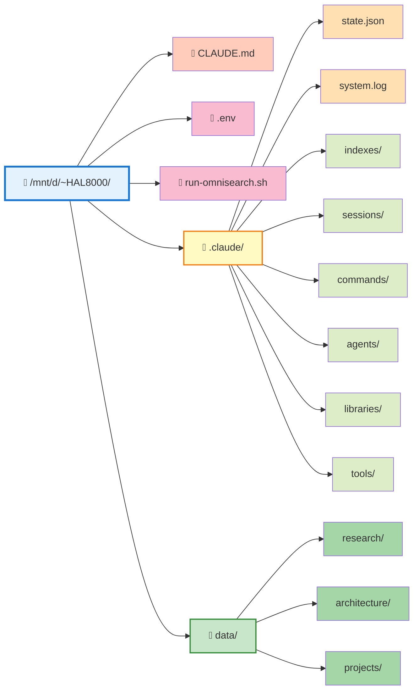
HAL8000-Assistant File System Hierarchy: Root directory with BIOS, system coordination (.claude/), and data storage
The .claude/ directory contains all system-level coordination files. This directory is the "kernel space" of HAL8000-Assistant—files here control system behavior, state, and instruction execution.
Path
Purpose
Access Pattern
.claude/state.json
Current state pointer (timestamp, active_session, context, next_action)
Loaded every boot (core file)
.claude/system.log
Historical audit trail (append-only log of all sessions)
Never loaded into RAM; I/O only
.claude/indexes/master.json
Master file system index
On-demand (discovery operations)
.claude/indexes/[directory].json
Per-directory indexes
On-demand (discovery operations)
.claude/sessions/
Session handoff files for continuity across RAM wipes
Data files may use numbered prefixes for ordering: NN-descriptive-name.md
Research documents:
data/research/01-von-neumann-architecture.md
data/research/02-unix-philosophy.md
data/research/03-assembly-language-principles.md
17.4 Depth Limit Rules
HAL8000-Assistant enforces a maximum 3-level depth for internal code and system organization. This constraint derives from Unix philosophy: simplicity over complexity.
17.4.1 Rationale
Unix Philosophy: Simple, Not Complex
Deep hierarchies introduce cognitive overhead and navigation complexity. Three levels provide sufficient organization (root → category → item) while maintaining simplicity. Deeper nesting indicates over-engineering or poor categorization.
Read-only, defines system behavior, loaded every boot
CMOS/NVRAM
state.json
Small persistent state, updated frequently, critical for continuity
Virtual Memory
Sub-agents (isolated contexts)
Extend total RAM capacity via process isolation; return summaries not raw data
Swap Space
Session files
Context moved to disk before RAM exhaustion; loaded back on resume
Memory Segments
Directories
Logical grouping: system (.claude/), data (data/), by function
Key Insight: Total file system capacity far exceeds RAM capacity. This is by design. The CPU must practice selective loading discipline—loading only what's needed for the current task, offloading results to persistent memory, and using sub-agents to extend effective capacity through context isolation.
This section documents HAL8000-Assistant's integration with Model Context Protocol (MCP) servers.
MCP extends HAL8000-Assistant's capabilities through external tool servers.
Maintenance notes:
- Keep tool catalog synchronized with actual MCP server configurations
- Update /HAL-mcp-control documentation when command evolves
- Verify server status defaults if MCP configuration changes
- Document new MCP servers as they are added to the system
Sources: CLAUDE.md MCP Integration section, .claude/commands/HAL-mcp-control.md
19. MCP Integration
18.1 Introduction
The Model Context Protocol (MCP) is an open protocol that enables AI assistants to
interact with external tools and data sources through a standardized interface.
HAL8000-Assistant integrates with MCP to extend the CPU's capabilities beyond native Claude Code
tools, providing enhanced web search, file system operations, and IDE integration.
MCP servers run as separate processes that expose tools through a JSON-RPC protocol.
The HAL8000-Assistant CPU can invoke these tools as if they were native operations, enabling
modular extension of system capabilities without requiring changes to the core architecture.
18.1.1 Why HAL8000-Assistant Uses MCP
Extended Capabilities: Access specialized tools (advanced web search,
content extraction) not available in native Claude Code
Modular Design: Add/remove capabilities without modifying core system
RAM Optimization: Dynamically load/unload servers to manage context usage
Standardized Interface: Consistent tool invocation across different server types
External Integration: Connect to VS Code, file systems, and web APIs
MCP uses JSON-RPC 2.0 for communication between the HAL8000-Assistant CPU and MCP servers.
Each server exposes a set of tools with defined schemas. The CPU invokes tools by
sending JSON-RPC requests and receives structured responses.
Key Protocol Characteristics:
Stateless Invocation: Each tool call is independent
Typed Parameters: Tool parameters have JSONSchema definitions
Standardized Errors: Consistent error reporting across servers
Resource Discovery: Servers can expose resources (files, data) via URIs
18.2.2 Server Types
Server
Transport
Purpose
Default Status
omnisearch
stdio
Web search and content extraction
Disabled (manual enable)
filesystem
SSE
Direct file system operations
Enabled
ide
SSE
VS Code integration
Enabled
18.2.3 Tool Exposure Pattern
MCP tools are exposed to the CPU with a naming convention:
mcp__[server]__[tool_name]. This prevents naming conflicts and
makes the tool's origin explicit.
Example:
mcp__omnisearch__web_search # Web search via omnisearch server
mcp__filesystem__read_text_file # Read file via filesystem server
mcp__ide__getDiagnostics # Get diagnostics via ide server
18.3 Configured MCP Servers
18.3.1 omnisearch Server
Provides enhanced web search and content extraction capabilities through integration
with multiple search providers and web scraping services.
Property
Value
Transport
stdio
Configuration
.env (API keys for Brave, Firecrawl)
Launch Script
run-omnisearch.sh
Default Status
Disabled (high RAM cost)
Tools Provided
2 tools (web_search, firecrawl_process)
Provided Tools:
mcp__omnisearch__web_search - Multi-provider web search (Tavily, Brave, Kagi, Exa)
mcp__omnisearch__firecrawl_process - Web content extraction (scrape, crawl, map, extract, actions)
Use Cases:
Research tasks requiring current web information
Content extraction from web pages
Deep web crawling for documentation
Structured data extraction from websites
When to Enable:
/HAL-mcp-control enable omnisearch
Enable when user explicitly requests web research or when delegating to research-synthesizer agent.
18.3.2 filesystem Server
Provides comprehensive file system operations including reading, writing, searching,
and directory management. Operates within configured allowed directories.
mcp__filesystem__list_allowed_directories - Show accessible directories
File Operations:
mcp__filesystem__move_file - Move or rename files/directories
Security Model:
All filesystem operations are restricted to configured allowed directories.
Attempts to access files outside these directories will fail with permission errors.
18.3.3 ide Server
Provides integration with VS Code for diagnostics and code execution in Jupyter kernels.
Property
Value
Transport
SSE
Configuration
VS Code workspace integration
Default Status
Enabled
Tools Provided
2 tools (diagnostics, code execution)
Provided Tools:
mcp__ide__getDiagnostics - Get language diagnostics (errors, warnings) from VS Code
mcp__ide__executeCode - Execute Python code in Jupyter kernel
Use Cases:
Checking code for syntax errors and warnings
Running Python code in notebook context
Validating code changes before committing
18.4 Dynamic MCP Control
The /HAL-mcp-control command provides dynamic management of MCP servers
to optimize RAM usage. Since MCP server contexts consume RAM, selectively enabling
servers only when needed helps maintain RAM_ZONE: SAFE.
18.4.1 Command Syntax
/HAL-mcp-control [command] [server_name]
Commands:
status - Show current status of all MCP servers
enable [server] - Enable specified MCP server
disable [server] - Disable specified MCP server
18.4.2 Usage Examples
Check Server Status:
/HAL-mcp-control status
Output:
MCP Server Status:
├─ omnisearch: DISABLED (high RAM cost - enable when needed for research)
├─ filesystem: ENABLED (18 tools available)
└─ ide: ENABLED (2 tools available)
RAM Optimization:
- Enable omnisearch only for research tasks
- Disable unused servers to free RAM
- Current configuration optimized for general use
Enable omnisearch for Research:
/HAL-mcp-control enable omnisearch
Output:
✓ Enabled MCP server: omnisearch
Tools now available:
- mcp__omnisearch__web_search (multi-provider search)
- mcp__omnisearch__firecrawl_process (content extraction)
Note: omnisearch has high RAM cost. Disable after research completes.
Disable After Research:
/HAL-mcp-control disable omnisearch
Output:
✓ Disabled MCP server: omnisearch
RAM freed for other operations
18.4.3 When to Enable/Disable Servers
Server
Enable When
Disable When
omnisearch
- User requests web research
- Delegating to research-synthesizer
- Need current web information
- Research task complete
- RAM_ZONE approaching CAUTION
- Not needed for current work
Note: omnisearch must be enabled before use: /HAL-mcp-control enable omnisearch
18.6 Configuration
18.6.1 MCP Server Configuration Files
MCP servers are configured in Claude Code's MCP settings. HAL8000-Assistant uses both stdio
and SSE transport mechanisms depending on server requirements.
Search the web using multiple providers. Tavily for factual/citations,
Brave for privacy/operators, Kagi for quality/operators, Exa for AI-semantic search.
filesystem server operates within allowed directories only
Never commit API keys (.env in .gitignore)
Verify file paths before write operations
Use list_allowed_directories to understand access scope
18.9 Troubleshooting
18.9.1 Server Not Available
Symptom: Tool invocation fails with "server not found" or "tool not available"
Diagnosis:
/HAL-mcp-control status
Solution:
/HAL-mcp-control enable [server_name]
18.9.2 Permission Denied (filesystem)
Symptom: filesystem tool fails with permission error
Diagnosis:
mcp__filesystem__list_allowed_directories
Solution: Verify target path is within allowed directories. If needed,
update MCP configuration to allow access to required paths.
18.9.3 omnisearch API Errors
Symptom: web_search or firecrawl_process fails with authentication error
Diagnosis: Check .env file exists and contains valid API keys
Solution:
Verify .env has BRAVE_API_KEY and FIRECRAWL_API_KEY
Ensure keys are valid (test on provider websites)
Restart omnisearch server: /HAL-mcp-control disable omnisearch then /HAL-mcp-control enable omnisearch
18.9.4 High RAM Usage
Symptom: RAM_ZONE enters CAUTION or DANGER with MCP servers enabled
Solution:
/HAL-mcp-control disable omnisearch # High RAM cost server
# Continue with filesystem and ide only
omnisearch has the highest RAM cost. Disable when not actively researching.
20. External Tools
HAL8000-Assistant integrates with external tools to extend capabilities beyond the core architecture. Following Unix philosophy, the system prefers host-installed tools over containerized alternatives for simplicity and direct access. External tools provide specialized functions: AI agents for massive context tasks, containers for isolated environments, and MCP servers for protocol-based integrations.
External AI Agents
HAL8000-Assistant leverages external AI agents when tasks exceed sub-agent capacity or require specialized capabilities.
Gemini CLI Integration
Version: 0.4.1
Context Window: 1,000,000 tokens (1M) - 5x larger than sub-agents
Installation: Host-installed (preferred per Unix simplicity)
HAL8000-Assistant integrates document conversion tools to ingest knowledge from various file formats (PDF, Office documents, images, audio) into the knowledge base.
The HAL-knowledge-ingest command (v1.1+) automatically detects document formats and invokes docling for conversion before ingestion. Users can directly ingest PDFs, Office documents, images, and audio files without manual conversion.
Zero RAM Impact: Docling runs in an external PowerShell process. Document conversion happens outside HAL8000-Assistant's context window - only the converted Markdown output is loaded into RAM. A 50-page PDF might consume 500KB on disk but only 10-20K tokens once converted to Markdown.
Supported Input Formats:
Format Category
Extensions
Special Processing
PDF Documents
.pdf
Native text extraction + optional OCR
Office Documents
.docx, .pptx, .xlsx
Structure preservation, table extraction
Images
.png, .jpg, .jpeg, .gif, .bmp
OCR required for text extraction
Audio/Video
.mp3, .wav, .mp4, .avi
ASR (Whisper) transcription
Structured Data
.csv, .xml, .html
Format-specific parsing
Markup
.md, .asciidoc
Direct conversion
Tool Documentation:
Complete docling documentation is available at .claude/tools/docling-cli.md, including:
Comprehensive command reference (20+ options)
OCR engine selection guide
Performance optimization strategies
WSL path conversion patterns
Error handling and troubleshooting
Integration examples with HAL-knowledge-ingest
Container Infrastructure
HAL8000-Assistant has access to Docker for isolated execution environments, though host-installed tools are preferred per Unix simplicity.
Docker Environment
Version: 28.4.0
Containers Running: 5
Images Available: 10
Purpose: Isolated execution environments for tooling
Design Philosophy: Host-installed tools are preferred over containers when possible. Containers are used only when isolation is required (conflicting dependencies, security boundaries, reproducible environments). This maintains Unix simplicity and reduces abstraction layers.
MCP Servers
HAL8000-Assistant uses MCP (Model Context Protocol) servers to access specialized capabilities through a standardized protocol. MCP servers are selectively enabled to optimize RAM usage.
MCP Infrastructure Status
Total Configured: 5 servers
Currently Enabled: 2 servers
Connected: 2 servers
Available MCP Servers
Server
Status
Purpose
Capabilities
omnisearch
Enabled
Enhanced web search and content extraction
Brave Search API, Firecrawl API for web scraping
filesystem
Enabled
Direct file system operations
Read, write, edit, search, directory operations
ide
Configured
VS Code integration
Diagnostics, code execution, language server protocol
Use case: Language diagnostics, code execution in Jupyter kernels
MCP Server Management
MCP servers are dynamically managed to optimize RAM usage. Only required servers are enabled during a session.
HAL-mcp-control Command
The HAL-mcp-control command provides dynamic MCP server management.
Operations:
# Check status of all MCP servers
/HAL-mcp-control status
# Enable a specific server
/HAL-mcp-control enable omnisearch
# Disable a specific server
/HAL-mcp-control disable replicate
Usage Pattern:
Selective Loading: Enable only servers needed for current task
RAM Optimization: Each enabled server consumes token overhead - disable unused servers
Dynamic Control: Enable/disable mid-session as needs change
Best Practice: Start sessions with minimal MCP servers enabled. Enable additional servers on-demand when specific capabilities are needed. This follows the selective loading principle and minimizes RAM overhead.
MCP Server Selection Guidelines
Task Type
Enable
Rationale
Web research
omnisearch
Enhanced search and content extraction
File operations
filesystem
Direct file system access (alternative to core tools)
Code diagnostics
ide
Language server integration
ML model execution
replicate
Access to Replicate model library
Standard operations
None
Use core tools (Read, Write, Edit, Grep, Glob, Bash)
AI Image Generation Tool
HAL8000-Assistant integrates AI-powered image generation through a Dockerized Stable Diffusion system. This tool enables on-demand creation of high-quality images using local GPU acceleration, maintaining zero RAM impact on HAL8000-Assistant sessions.
Image Generation System Overview
Version: 1.0.0
Backend: ComfyUI + Stable Diffusion (SDXL, SD1.5)
Architecture: Docker container with NVIDIA GPU passthrough
When users request images, HAL8000-Assistant (Claude) automatically enhances prompts and invokes the tool. Users don't interact with the tool directly - they simply ask for images and Claude generates them.
User: "Generate an image of a friendly robot"
Claude executes:
python3 .claude/tools/image-generation/HAL-generate-image.py \
--prompt "friendly humanoid robot assistant, modern design, clean background, detailed" \
--model sdxl \
--steps 25 \
--output data/images/robot-assistant.png
User receives: "Image generated: data/images/robot-assistant.png"
Text Overlay Feature
SD models cannot generate readable text (they produce gibberish). Use the --text parameter to overlay clean text with ImageMagick post-processing:
# Simple text overlay (bottom center by default)
python3 .claude/tools/image-generation/HAL-generate-image.py \
--prompt "solid blue background" \
--text "HELLO WORLD" \
--output labeled-image.png
# Custom text positioning and styling
python3 .claude/tools/image-generation/HAL-generate-image.py \
--prompt "cyberpunk city at night" \
--text "NEO TOKYO 2077" \
--text-position north \
--text-size 96 \
--text-color white \
--output cyberpunk-titled.png
# Hex color support
python3 .claude/tools/image-generation/HAL-generate-image.py \
--prompt "robot assistant" \
--text "HAL8000-Assistant" \
--text-position center \
--text-size 120 \
--text-color "#00FF00" \
--output robot-labeled.png
Text Options:
--text: Text to overlay on image
--text-position: north, south (default), east, west, center
--text-size: Font size in points (default: 72)
--text-color: Color name (white, black, red, blue) or hex (#RRGGBB)
Note: Text is rendered with black stroke outline for readability on any background color.
Available Models
Model
Size
VRAM
Speed (RTX 3090)
Quality
Best For
SDXL (default)
6.5GB
6-8GB
3-5 seconds
★★★★★
Production quality, high detail
SD1.5
4GB
4-5GB
1-2 seconds
★★★★
Fast iterations, prototyping
Performance Characteristics
First-Time Setup:
Docker image build: ~5-10 minutes (one-time)
Model download: ~5-10 minutes per model (one-time)
Total initial setup: ~15-20 minutes
Runtime Performance (RTX 3090):
Container startup: ~2 seconds
Model load (from cache): ~3-5 seconds
Image generation: ~3-8 seconds (depending on model/steps)
Container cleanup: ~1 second
Total: ~10-15 seconds per image (after initial setup)
Storage Requirements
Component
Location
Size
Purpose
Docker Image
C: drive (WSL2)
~3GB
Container with ComfyUI + dependencies
Model Cache
D: drive (.docker-cache/models/)
~6.5GB (SDXL) + 4GB (SD1.5)
AI model weights (persistent)
Generated Images
D: drive (data/images/)
~2-5MB each
Output images
Hybrid Storage Strategy: Docker images on C: drive (~3GB), model weights and outputs on D: drive (~10-20GB). This optimizes space usage across drives while maintaining fast access via SSD caching.
Architecture Pattern
Docker-Based I/O Device:
User Request
↓
HAL8000-Assistant (Claude/CPU) - enhances prompt
↓
HAL-generate-image.py - driver script
↓
docker run hal8000-image-gen:latest --prompt "..." --output image.png
↓
Container: Start → Load Model → Generate → Save → Exit
↓
Image saved to data/images/
↓
HAL8000-Assistant returns file path to user (~10 tokens RAM impact)
Zero RAM Impact: Like the diagram-generation tool, image generation runs in an external Docker container. Only the output file path is loaded into HAL8000-Assistant's RAM (~10 tokens), not the generation process or intermediate data. This enables unlimited image generation without RAM constraints.
Installation and Setup
Prerequisites:
Docker Desktop with WSL2 backend
NVIDIA GPU drivers
NVIDIA Container Toolkit (for GPU passthrough)
~10GB free disk space (3GB C:, 7GB D:)
Build Process:
# Navigate to tool directory
cd /mnt/d/~HAL8000-Assistant/.claude/tools/image-generation
# Build Docker image
./build-image.sh
# Test installation
python3 HAL-generate-image.py \
--prompt "test: red circle" \
--model sd15 \
--output test.png
Documentation Files:
README.md - Complete user guide with examples
INSTALL.md - Detailed installation and troubleshooting
QUICKSTART.txt - Quick reference card
CLAUDE.md - HAL8000-Assistant integration guide
image-generation-tool.md - System documentation
Use Cases
Typical Applications:
Technical Illustrations: Hardware diagrams, system architectures, component visualizations
Cost Comparison: Cloud services (DALL-E 3, Midjourney) charge $0.04-0.08 per image. With local generation, after initial setup (~$0 for existing GPU hardware), each image costs only electricity (~$0.001). At 100 images/month, savings are ~$4-8/month. At 1000 images/month, savings are ~$40-80/month.
Comparison to Other Tools
Tool
Type
RAM Impact
Speed
Use Case
image-generation
Docker (GPU)
Zero
10-15s
AI image creation
diagram-generation
Docker
Zero
<1s
Technical diagrams (Mermaid)
docling-cli
PowerShell
Zero
Variable
Document processing
gemini-cli
CLI
Zero
Variable
Massive context analysis
Integration Patterns
External Tool Selection Decision Tree
Task requires specialized capability?
├─ NO → Use core tools (Read, Write, Bash, etc.)
└─ YES → Specialized capability type?
├─ Massive context (>200K) → Gemini CLI
├─ Document conversion → Docling CLI
├─ AI image generation → Image Generation Tool
├─ Technical diagrams → Diagram Generation Tool
├─ Web search/extraction → MCP omnisearch
├─ File system operations → MCP filesystem or core tools
├─ Code diagnostics → MCP ide
├─ ML model execution → MCP replicate
└─ Isolation required → Docker container
RAM Impact Considerations
Core Tools: Minimal overhead (built-in)
MCP Servers: Token overhead per enabled server (~1-5K tokens each)
External AI (Gemini): No RAM impact (separate process, returns results only)
Document Conversion (Docling): No RAM impact (external PowerShell process, only converted output loaded)
Image Generation: No RAM impact (Docker container, only file path returned ~10 tokens)
Diagram Generation: No RAM impact (Docker container, only file path returned)
Docker Containers: No RAM impact (isolated container, communicate via I/O)
Architecture Note: External tools extend HAL8000-Assistant's capabilities without violating core architectural constraints. Gemini provides virtual memory beyond 200K limits. Docling enables universal document ingestion. Image Generation creates AI visuals with GPU acceleration. Diagram Generation produces technical diagrams. MCP servers offer protocol-based integrations. Docker provides process isolation. All follow Unix philosophy: specialized tools composed via standard interfaces (bash, file I/O, PowerShell bridge, MCP protocol, Docker containers).
Creating commands, building agents, library system, and contributing
20. Creating Custom Commands
HAL8000-Assistant commands are executable instructions stored as Markdown files that the CPU (Claude) fetches, decodes, and executes. Creating custom commands extends the system's capabilities while maintaining architectural integrity.
Command Philosophy: Commands follow the Unix principle of "do one thing well." Each command implements a single, well-defined operation that can be composed with other commands to create complex workflows.
20.1 Command Anatomy
HAL commands consist of several key components that enable the CPU to understand and execute them correctly.
Command files use a consistent structure that provides both human documentation and CPU execution instructions:
Frontmatter: YAML metadata block (optional but recommended)
Title and Description: Clear explanation of command purpose
Usage Section: Invocation syntax and parameters
Implementation Section: Step-by-step CPU instructions
Example Section: Concrete usage examples
Architecture Notes: How command aligns with HAL8000-Assistant principles
Invocation Methods
Commands can be invoked in two ways:
Direct slash command: User types /HAL-commandname in chat
SlashCommand tool: CPU or other commands use the SlashCommand tool programmatically
20.2 Basic Command Template
Here's a minimal template for creating new commands:
---
name: HAL-commandname
description: Brief description of what this command does
---
# HAL Command Name
**Command Type:** [Utility | Maintenance | System | Development]
**Category:** [Categorization]
**Purpose:** Clear one-sentence purpose statement
---
## Purpose
Detailed explanation of what this command accomplishes and why it exists.
## Usage
```bash
/HAL-commandname [arg1] [arg2]
```
**Arguments:**
- `arg1` (required/optional): Description of first argument
- `arg2` (required/optional): Description of second argument
## Execution Logic
When `/HAL-commandname` is invoked, the CPU will:
1. **Step One:** First action to perform
- Detail about step one
- What to check or validate
2. **Step Two:** Second action to perform
- Detail about step two
- Expected outcomes
3. **Step Three:** Final action
- What to display or return
- Success criteria
## Expected Output
Description or example of what the command produces:
```
Example output format
```
## Example Execution
```bash
/HAL-commandname example-arg
```
**Result:**
```
Example of actual command output
```
## Architecture Alignment
How this command implements HAL8000-Assistant principles:
**Von Neumann:**
- Principle alignment notes
**Unix Philosophy:**
- Principle alignment notes
**Assembly Principles:**
- Principle alignment notes
## Related Components
- **Related file 1:** Description
- **Related file 2:** Description
## Notes
- Important usage notes
- Warnings or caveats
- When to use vs. when not to use
20.4 Using Prompt Templates
HAL8000-Assistant provides a comprehensive library of prompt templates that accelerate command creation through composable, reusable patterns. Rather than writing commands from scratch, you can start with a proven template and customize it for your specific needs.
The Lego Block Principle
Templates follow the "Lego Block" principle: each section of a template (Purpose, Usage, Instructions, etc.) is a reusable building block that can be included or omitted based on your requirements.
Core Concept: Start with a template, remove unused sections, fill in your logic. Templates are guides, not constraints.
The workflow:
Choose a template that matches your needs
Copy the template to your command file location
Remove sections you don't need
Fill in your specific logic
Save to appropriate .claude/commands/ subdirectory
The 7 Levels Framework
HAL8000-Assistant's template system is inspired by IndyDevDan's "7 Levels of Agentic Prompt Formats" and adapted for HAL-Script. Each level represents increasing complexity:
The 7 Levels of command complexity, from simple operations to system infrastructure
1BasicMinimal
Purpose: Simple, single-step operations with no parameters. Minimal error handling.
Examples: Display status, show version.
2WorkflowLow-Medium
Purpose: Multi-step sequential processes with input parameters and structured output.
Examples: Process files, generate reports.
3Control FlowMedium
Purpose: Commands with conditionals, loops, and branching logic.
Examples: Validate and fix errors, iterate until condition met.
4DelegateMedium-High
Purpose: Commands that invoke sub-agents for specialized processing.
Examples: Research synthesis, context discovery.
5SupervisorHigh
Purpose: Multi-agent coordination with parallel execution and result integration.
Purpose: Production-critical system infrastructure with comprehensive documentation and testing.
Examples: HAL-session-end, HAL-system-check.
Template Selection Guide
Use this quick reference to choose the appropriate template:
Your Need
Level
Template File
Simple task, no inputs
1
level-1-basic.md
Multi-step with parameters
2
level-2-workflow.md
Conditionals or loops
3
level-3-control-flow.md
Delegate to sub-agent
4
level-4-delegate.md
Multiple agents
5
level-5-supervisor.md
Compose commands
6
level-6-workflow-composition.md
Core system component
7
level-7-system.md
Custom/unsure
Master
master-prompt-template.md
Master Template
The master-prompt-template.md shows all possible sections - a complete catalog of Lego blocks. Use it when building complex custom commands or when you need a comprehensive reference.
Pro Tip: Start with Level 1-2 templates for most commands. Only add complexity when actually needed. Don't include sections "just in case."
Example: Creating a Command from Template
Let's create a command that searches the codebase and generates a report:
# Step 1: Choose template (multi-step with parameters = Level 2)
cp .claude/libraries/internal/templates/level-2-workflow.md \\
.claude/commands/development/HAL-search-report.md
# Step 2: Open and edit the file
# - Keep: Purpose, Usage, Variables, Instructions, Output Format
# - Remove: Sections you don't need
# - Fill in: Your specific search and report logic
# Step 3: Result is a well-structured, consistent command
Benefits of Template-Based Development
Faster creation: Start with proven structure instead of blank file
Consistency: All commands follow same organizational pattern
Completeness: Templates remind you of important sections (error handling, examples)
Best practices: Built-in patterns from existing system commands
Maintainability: Familiar structure makes commands easier to update
Framework credit: IndyDevDan's "7 Levels of Agentic Prompt Formats"
20.5 YAML Frontmatter for Commands
YAML frontmatter is a Claude Code feature that enhances command discoverability and user experience. Added to commands in HAL8000-Assistant v1.2.0, frontmatter provides metadata that integrates with Claude Code's command palette and parameter system.
What is YAML Frontmatter?
YAML frontmatter appears at the beginning of command files, enclosed in --- markers:
---
name: command-name
description: Brief description for command palette
parameters:
- name: param1
description: What this parameter does
type: string
required: true
---
# Command Title
Command content follows...
Important: Frontmatter is optional but highly beneficial. Commands work without it, but users experience better discoverability and guidance with it.
Required Fields for Commands
name
Command identifier (must match file name pattern HAL-*)
description
Brief one-sentence description shown in Claude Code command palette
Optional Parameters Section
If your command accepts arguments, document them in the parameters array:
Choosing the right tool set for your agent is critical for security and performance. This section provides common patterns and decision-making guidance.
Tool Reference
The complete tool catalog is available in .claude/libraries/internal/tool-reference.md. This reference documents:
All standard Claude Code tools
All MCP server tools (filesystem, omnisearch, ide)
Tool descriptions and use cases
Common tool combinations by agent type
Security implications and best practices
Common Agent Patterns and Tool Sets
File System Agents
Purpose: Navigate, search, and read file system without modification
Use when: Agent only needs to read and analyze, no writes or modifications
Tool Selection Decision Process
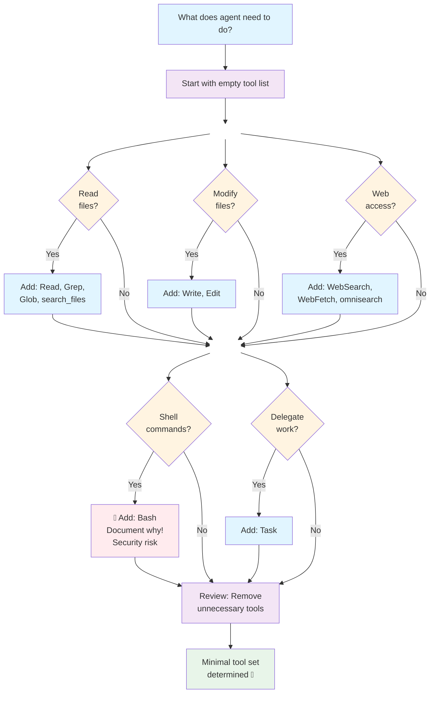
Systematic approach to determining minimal necessary tool set
Step-by-step process:
List agent's tasks - What does it need to accomplish?
Match tasks to tools - Which tools enable those tasks?
Remove unnecessary tools - Challenge each tool: "Is this actually needed?"
Prefer built-in tools - Use Read/Write/Edit over MCP equivalents when possible
Document reasoning - Note why each tool is included
Security Implications
Tool
Risk Level
Rationale
Read
Low
Read-only access, standard for most agents
Write/Edit
Medium
Can modify files - ensure agent logic is sound
Bash
High
Shell access - only for trusted system agents
WebSearch/WebFetch
Low-Medium
External access - could leak info in queries
Task
Medium
Delegates to sub-agents - ensure proper coordination
Bash Tool Warning: The Bash tool provides shell access. Only include it in agents that genuinely need to run system commands. Document why it's necessary.
command-builder: Code generation tools only + Sonnet model
tools:
- Read
- Glob
- Grep
model: sonnet
Best Practice: Review existing HAL8000-Assistant agents in .claude/agents/ as reference implementations. They demonstrate proven tool selection patterns.
The Template Library (.claude/libraries/internal/templates/) provides composable prompt templates for creating well-structured HAL-Script commands. This library implements the "Lego Block" principle: reusable sections that can be mixed and matched.
Library Contents
Location:.claude/libraries/internal/templates/
Files:
master-prompt-template.md - Complete catalog of all possible sections
level-1-basic.md - Simple single-step commands
level-2-workflow.md - Multi-step workflows with parameters
level-3-control-flow.md - Commands with conditionals/loops
level-7-system.md - Production-critical system commands
template-guide.md - Complete usage guide and reference
The 7 Levels Framework
Templates are organized by complexity using IndyDevDan's "7 Levels of Agentic Prompt Formats" adapted for HAL-Script:
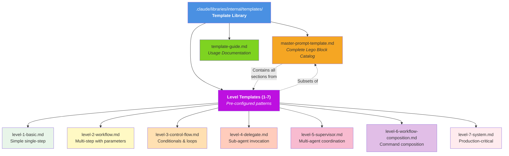
Template library organization and relationships
Level
Complexity
Key Features
Use Cases
1 - Basic
Minimal
Purpose + Instructions only
Simple status checks, display commands
2 - Workflow
Low-Medium
Multi-step, parameters, output format
File processing, report generation
3 - Control Flow
Medium
Conditionals, loops, branching
Validation, iteration, conditional processing
4 - Delegate
Medium-High
Sub-agent invocation, orchestration
Research, analysis, specialized tasks
5 - Supervisor
High
Multi-agent coordination, parallel execution
Complex workflows, multi-phase operations
6 - Workflow Composition
High
Command composition, end-to-end workflows
Release processes, data pipelines
7 - System
Maximum
Comprehensive docs, testing, production-grade
Core infrastructure, state management
Lego Block Principle
Each template is composed of reusable sections (Lego blocks):
Purpose
What the command does and why it exists
Usage
How to invoke the command and what arguments it accepts
Variables/Parameters
Input parameters, configuration, output variables
Instructions
Step-by-step execution logic
Delegation Patterns
How command invokes sub-agents
Workflow Integration
How command composes with other commands
Output Format
Structure of command output
Error Handling
How failures are detected and handled
Examples
Real-world usage scenarios
Dependencies
Required files, commands, or system components
Performance Considerations
RAM usage, execution time, optimizations
Testing & Validation
How to verify command works correctly
Metadata
Version, status, dates, authorship
Mix and match: Start with a level template, then add/remove sections as needed. Templates are guides, not constraints.
Quick Selection Guide
Choose your template based on command requirements:
If You Need...
Choose This Level
Simple task, no parameters
Level 1 (Basic)
Multi-step process with inputs
Level 2 (Workflow)
If/else logic or loops
Level 3 (Control Flow)
Delegate to one agent
Level 4 (Delegate)
Coordinate multiple agents
Level 5 (Supervisor)
Compose multiple commands
Level 6 (Workflow Composition)
Core system infrastructure
Level 7 (System)
Unsure / custom needs
Master Template
Integration with Command Creation Tools
The template library integrates with HAL8000-Assistant's command creation automation:
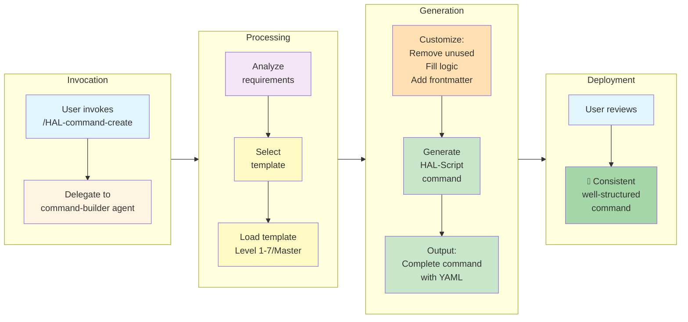
How template library enables automated command creation
Automation components:
HAL-command-create command: User interface for creating commands
command-builder agent: Processes requirements and generates commands
Template library: Provides proven structures and patterns
Workflow:
User invokes /HAL-command-create with requirements
Command delegates to command-builder agent
Agent analyzes requirements and selects appropriate template
Agent customizes template (removes unused sections, fills in logic)
Agent outputs production-ready command with YAML frontmatter
User reviews and deploys command
Master Template
The master-prompt-template.md is the complete Lego block catalog showing all possible sections. Use it when:
Building complex custom commands
You need comprehensive reference
Existing level templates don't fit your needs
Creating new level templates
Philosophy: The master template ensures you never forget possible sections. Start with it, remove what you don't need, and you'll have a complete, well-structured command.
Usage Example
# Manual approach: Copy and customize template
cp .claude/libraries/internal/templates/level-2-workflow.md \\
.claude/commands/development/HAL-new-command.md
# Edit the file, remove unused sections, fill in logic
# Result: Consistent command structure
# Automated approach: Use command-builder
/HAL-command-create "Create command that searches code and generates report"
# Agent selects Level 2 template, generates complete command
# Result: Production-ready command with frontmatter
Template Guide
The template-guide.md file provides comprehensive documentation:
Detailed description of each level
Section-by-section usage guide
Common patterns and best practices
YAML frontmatter integration
Examples and recommendations
Read the template guide for:
Understanding when to use each level
Learning what each section should contain
Seeing examples of template usage
Best practices for command creation
Benefits of Template Library
Consistency: All commands follow same organizational pattern
Speed: Start with proven structure instead of blank file
Completeness: Templates remind you of important sections
Best practices: Built-in patterns from production commands
Maintainability: Familiar structure across all commands
HAL8000-Assistant is a living system designed for continuous improvement through self-modifying code capabilities. This section guides effective contribution following von Neumann principles and Unix philosophy.
Philosophy of Contribution
Build Reusable Patterns, Not One-Offs: Solve classes of problems
Improve the Architecture: Enhance the system itself
Documentation-Driven: Document before, during, and after
Study Components: Examine commands, agents, libraries
Start Small: Simple command or library pattern
Ask Questions: Use /HAL-context-find
Iterate: Create, test, refine
Best Practices
Solve real problems (not speculative)
Document as you build
Test in real scenarios
Seek feedback (run system checks)
Think architecturally
Optimize for RAM
Cross-reference extensively
Follow naming conventions
The Living System
HAL8000-Assistant evolves through contributions. Commands can create commands, agents can be generated, patterns evolve into frameworks. Your contribution extends the system's capabilities and enables new classes of operations.
Glossary, troubleshooting, design decisions, version history, and index
Appendix A: Glossary
This glossary defines key terms and concepts used throughout the HAL8000-Assistant system. Terms are organized alphabetically within logical categories for easy reference.
Architecture Terms
ALU (Arithmetic Logic Unit)
The reasoning and computation component of the CPU. In HAL8000-Assistant, this represents Claude's ability to perform logical operations, calculations, and data transformations.
A fundamental constraint of HAL8000-Assistant's memory model where the context window accumulates content without dynamic eviction within a session. Once content is loaded into RAM, it remains until the session boundary is reached.
The orchestration and decision-making component of the CPU. In HAL8000-Assistant, this represents Claude's ability to coordinate operations, manage workflow, and make strategic decisions about system operation.
The fundamental operational cycle of the CPU: (1) Fetch an instruction from memory, (2) Decode the instruction to understand what operation is required, (3) Execute the operation, (4) Update system state and prepare for the next instruction.
A computer architecture with physically separate storage and signal pathways for instructions and data. HAL8000-Assistant uses Harvard-like organization (separate .claude/ and data/ directories) while maintaining von Neumann capabilities.
HAL8000-Assistant's architectural model that combines Harvard-like organization (separate instruction/data spaces) with von Neumann capabilities (unified access, self-modifying code). This hybrid approach accommodates environmental constraints while preserving the stored-program concept.
A von Neumann capability where programs can create or modify other programs. In HAL8000-Assistant, commands can write to .claude/commands/ to create new commands or modify existing ones, enabling dynamic system evolution.
The von Neumann principle where instructions and data reside in the same memory space and are accessed in the same way. In HAL8000-Assistant, both instructions (commands) and data are stored as files with unified access through the file system.
The architectural model where sub-agents act as virtual memory by providing isolated 200K RAM contexts. This extends total system capacity beyond the main session's 200K limit through process isolation, with agents returning only essential summaries rather than full processing output.
A specialized co-processor with isolated 200K RAM context that performs specific tasks (research, context discovery, system maintenance). Agents extend system capacity by processing heavy workloads in isolated contexts and returning clean summaries to the main session.
The boot instructions stored in CLAUDE.md at the repository root. Contains system architecture definition, boot sequence, operating principles, and fundamental system protocols. Loaded on every new session to initialize the CPU.
An executable instruction stored in .claude/commands/ with naming convention HAL-*.md. Commands implement specific operations (session-end, register-dump, etc.) and follow the principle of doing one thing well.
The Claude instance itself, serving as the processing unit of HAL8000-Assistant. Comprises the Control Unit (orchestration/decision-making), ALU (reasoning/computation), and Registers (immediate working context).
A discovery mechanism stored in .claude/indexes/ that catalogs file system structure or library patterns. Includes master index (entire file system), per-directory indexes, and library index. Enables efficient discovery without loading all files into RAM.
A collection of reusable instructions, patterns, or workflows. Can be internal (developed within HAL8000-Assistant) or external (imported from external sources). Libraries are indexed for efficient discovery and organized by category.
The Claude context window, limited to 200,000 tokens. Volatile (lost at session boundary), append-only within session (no dynamic eviction), and serves as the CPU's working memory. RAM Zone classifications (SAFE/CAUTION/DANGER) guide usage.
A component of immediate working context holding specific system state values. HAL8000-Assistant defines 21 registers across 5 categories: System State, Resource Management, Context Tracking, Execution Control, and Diagnostic registers.
A markdown file in .claude/sessions/ containing rich context for resuming work after RAM wipe. Named YYYY-MM-DD-HHMM-description.md, containing Context, Key Decisions, Active Work, Loaded Files, and Variables/State sections.
A JSON file at .claude/state.json containing the current system state snapshot. Always loaded on boot. Contains timestamp, active_session reference, context description, next_action, loaded_commands, and variables. Overwritten on each checkpoint (no history retention).
An agent invoked via the Sub-Agent Protocol for context-heavy tasks. Operates in isolated 200K RAM context, processes work, and returns clean summaries to main session. Results are volatile (lost at session boundary unless persisted to files).
The mandatory initialization process executed on every new session: (1) Load BIOS (CLAUDE.md), (2) Load State (state.json), (3) Note available session (do not auto-load), (4) Provide structured boot acknowledgment, (5) Set CPU_STATUS to OPERATIONAL or DEGRADED, (6) Ready to execute.
The process of saving current session state before RAM wipe. Triggered proactively when RAM_ZONE enters CAUTION, major work completed, before context-heavy operations, or when explicitly requested by user. Executed via /HAL-session-end command.
A register (CONTEXT_MANIFEST) tracking all files currently loaded in RAM. Used to prevent duplicate loading and assess current RAM consumption. Essential for selective loading discipline.
Operational state when optional files fail to load during boot (session files, command files, architecture docs). System continues with reduced functionality and warns user. Core file failures (BIOS, state.json) result in system failure, not degraded mode.
The clearing of the context window (RAM) when starting a new session. Results in complete loss of volatile working memory. Session continuity protocol (checkpoint before wipe, resume after wipe) enables work continuity across RAM wipes.
The discipline of loading ONLY files needed for the current task, never speculatively. Required because RAM is append-only within session—every file load is a one-way commitment. Enforced through resource management protocol checking CONTEXT_MANIFEST and RAM_ZONE before loading.
The point at which one session ends and another begins. Serves as garbage collection—the only way to reclaim RAM in HAL8000-Assistant's append-only memory model. All volatile data (RAM, sub-agent output) is lost unless persisted to files before crossing boundary.
The protocol for maintaining work context across session boundaries. Before RAM wipe: run /HAL-session-end to capture state. After RAM wipe: boot sequence notes available session, user can say "resume" to load it. Enables seamless work continuation despite volatile RAM.
The architectural pattern for delegating context-heavy tasks to isolated agents. ALWAYS delegate: web research, context discovery, large file analysis, multi-step tasks >30K tokens. Agent processes in isolated 200K context, returns clean summary to main session. Critical constraint: sub-agent output is volatile—must persist to files before session-end.
The principle that components should be designed to work together. In HAL8000-Assistant, commands, agents, and libraries can be composed into complex workflows through the universal interface of file I/O.
The maximum directory nesting depth of 3 levels enforced by Unix simplicity principle. Prevents excessive complexity in file system organization. Exception: external libraries maintain their original structure for compatibility.
The foundational Unix principle that each component should have a single, well-defined responsibility. Applied to HAL8000-Assistant files, commands, agents, and libraries—each does one thing and does it well.
The practice of building systems from small, focused, composable pieces. HAL8000-Assistant achieves modularity through single-purpose commands, specialized agents, categorized libraries, and clear component boundaries.
The Unix tenet favoring simple structures over complex ones. In HAL8000-Assistant: max 3-level directory depth, minimal abstractions, plain text files, direct access to components. Complexity is managed through composition, not intricate internal structure.
File I/O as the common language for all system components. Commands, agents, libraries, data, and system state all interact through reading and writing files. This creates consistent, composable interfaces across the entire system.
The multi-level indexing system stored in .claude/indexes/ comprising master.json (entire file system) and per-directory JSON files. Enables scalable discovery for 1000+ directories with 2-5K token cost instead of loading all files.
A directory that has a corresponding JSON index file in .claude/indexes/ cataloging its contents. Indexed directories support efficient discovery without loading all contained files into RAM.
The .claude/libraries/index.json file cataloging all available libraries (internal and external), their patterns/workflows, categories, and metadata. Enables pattern discovery without loading full library contents into RAM.
The .claude/indexes/master.json file providing a top-level catalog of the entire file system structure. Entry point for hierarchical discovery, references per-directory indexes for detailed exploration.
The current directory context for file operations. In HAL8000-Assistant, typically /mnt/d/~HAL8000-Assistant/ (the system root). Commands and operations execute relative to this directory unless absolute paths are used.
MCP Terms
MCP Resource
A data entity exposed by an MCP server that can be read or accessed. Resources provide structured access to external data sources through the MCP protocol.
A Model Context Protocol server providing tools, resources, or prompts to Claude. HAL8000-Assistant configures MCP servers in .mcp.json. Examples: omnisearch (web search/extraction), filesystem (file operations), ide (VS Code integration).
A function provided by an MCP server that Claude can invoke to perform operations. Examples: web_search (omnisearch), read_file (filesystem), getDiagnostics (ide). Tools extend Claude's native capabilities through external services.
The communication mechanism for MCP servers using standard input/output streams. The MCP server process communicates with Claude through stdin/stdout, enabling process isolation and clean lifecycle management.
The collection of available commands and operations. In HAL8000-Assistant, the tools (Read, Write, Edit, Bash, etc.) ARE the instruction set—no abstraction layer exists between commands and tool invocations. This follows assembly language principles of direct hardware access.
The system component (HAL-library-update command) responsible for library lifecycle management: checking updates, backup, download, replace, reindex. Essential OS infrastructure equivalent to apt, npm, or pip. Future: install and remove operations.
A register pointing to the next instruction to execute. In the fetch-decode-execute cycle, PC determines which instruction is fetched next. Updated after each instruction execution or modified by control flow changes.
The operating principle for recognizing context hierarchy (User's Mind > Filesystem > RAM) and proactively detecting missing context signals. Steps: (1) Parse question for missing context signals, (2) Ask user for clarification before loading/searching, (3) Acquire context only after user clarifies, (4) Answer with context transparency about what's loaded and what's not.
The discipline for managing RAM resources: (1) Check CONTEXT_MANIFEST before loading, (2) Estimate token cost, (3) Evaluate projected RAM_ZONE, (4) Proceed/warn/refuse based on zone. Includes proactive checkpoint triggers, selective loading discipline, and "reduce and delegate" principle.
This section provides solutions to common issues encountered when operating the HAL8000-Assistant system. Problems are organized by category with specific symptoms, causes, solutions, and prevention strategies.
General Troubleshooting Approach:
Check system status with /HAL-system-check
Verify register states with /HAL-register-dump
Review current RAM usage in system warnings
Consult .claude/system.log for historical context
1. Boot and Initialization Issues
Problem: BIOS Not Loading
Symptoms: CPU does not acknowledge HAL8000-Assistant architecture on startup, no structured boot acknowledgment
Cause:CLAUDE.md file missing, corrupted, or not being read
Solution: Verify file exists at /mnt/d/~HAL8000-Assistant/CLAUDE.md, check permissions, restore from version control
Prevention: Never delete CLAUDE.md, treat as read-only ROM, keep in version control
Problem: state.json Missing or Corrupted
Symptoms: Boot fails with "CRITICAL: state.json not found", JSON parse errors
Solution: Check if .claude/state.json exists, validate JSON syntax, restore from system.log or create minimal valid state
Prevention: Always use /HAL-session-end to update state.json safely
Solution: Check server status with /HAL-mcp-control status, verify .mcp.json configuration, restart server if needed
7. Library System Issues
Problem: Library Not Found
Symptoms: Library pattern search returns no results
Solution: Check library exists in .claude/libraries/, verify library index .claude/libraries/index.json, run /HAL-index-update
8. Diagnostic Commands Summary
/HAL-system-check - Comprehensive system health check
/HAL-register-dump - Display all CPU register states
/HAL-mcp-control status - Check MCP server status
/HAL-index-update - Rebuild system indexes
tail -50 .claude/system.log - Recent system events
9. Emergency Recovery
For catastrophic failures: Restore CLAUDE.md and state.json from version control, rebuild all indexes, start new session, run /HAL-system-check, review system.log for context.
Appendix C: Design Decisions
This appendix documents key architectural decisions, explaining the rationale, trade-offs, and alternatives considered.
1. Modified von Neumann Architecture
Decision: Hybrid architecture combining Harvard-like organization with von Neumann capabilities
Rationale: Claude Code requires commands in .claude/commands/ (environmental constraint), but commands can write to that directory (self-modifying code). Preserves stored-program concept while respecting constraints.
Trade-offs: More complex to explain than pure architecture, but provides best of both worlds
2. Append-Only RAM Model
Decision: Context window accumulates without dynamic eviction within session
Rationale: Claude's context window doesn't support selective unloading. Makes resource management explicit and forces selective loading discipline.
Trade-offs: Limited context within single session, but prevents false sense of unlimited RAM
3. Session Boundaries as Garbage Collection
Decision: Session end is the only way to reclaim RAM
Rationale: Append-only RAM means no partial cleanup possible. Mirrors real computer reboot clearing volatile memory.
4. Unix Philosophy: 3-Level Depth Limit
Decision: Maximum 3 directory levels (exception: external libraries)
Rationale: Unix simplicity principle. Deep hierarchies hard to navigate. Forces clear organization.
Trade-offs: May require flatter organization, but system remains navigable
5. Sub-Agents as Virtual Memory
Decision: Treat sub-agents as virtual memory with isolated 200K RAM contexts
Rationale: Extends total capacity beyond main session's 200K limit. Process isolation prevents RAM pollution.
Trade-offs: Sub-agent invocation overhead, but enables handling large tasks
6. state.json as State Pointer
Decision: Current state pointer only, overwritten on checkpoint (no history)
Rationale: Keeps boot lightweight (file always small). History belongs in system.log.
7. Session Files Not Auto-Loaded
Decision: Note session pointer but don't auto-load on boot
Rationale: Keeps boot lightweight, saves RAM. User may want different work than last session.
8. Skipped Components
No Instruction Set: Tools ARE the instruction set (Unix: do one thing well). No abstraction needed.
No Interrupts/Clock: Uncontrollable emergent behavior. Can't document what can't be controlled.
Rationale from state.json: "Unix principle - tools ARE the instruction set, interrupts/timers are uncontrollable emergent behavior"